DRAFT — UE26ME142A · Unit_04 — UNIT 4 · Complete Unit Master
·How to use this pack
Search this single unit master by lesson, timestamp, slide text or source page. Read the transcript in timestamp order, then compare extracted slide text with its page-faithful source figure. Formula candidates and archive question mappings are explicitly flagged for review. Topics include the applicable parts: overview, key terms, formulas, figures, flowcharts, important points, worked examples, past-paper questions and a recap. IDs are shared with the separate documents: E = formula, G = graph, F = flowchart, W = worked example. Each ID is numbered by topic, so E4.2 is the second formula of topic 4.
1UE26ME142A · Unit_04: UNIT 4
This unit master organizes source material for Engineering Mechanics 1, Unit_04, officially titled UNIT 4. It includes 12 video transcripts and 15 source slide decks, with page-level text and rendered images where available. This draft preserves source wording and page order; it does not claim a complete human subject review or full audiovisual review. EV0000001
2CLASS 46 Introduction to Moment of Inertia
This lesson is indexed from the source video titled CLASS 46 Introduction to Moment of Inertia. Its complete timestamped transcript is preserved below in segment order. The original video path and content hash are recorded in datasets/lecture-corpus.json. Transcript text is source wording; it has not been silently corrected or rewritten. A candidate slide deck is grouped here according to the current matching score; the exact path and page locators are listed in the source evidence. EV0000002 · EV0000003
Graphs and diagrams

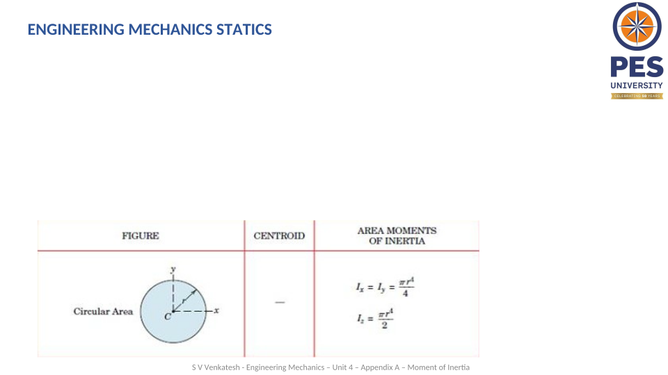
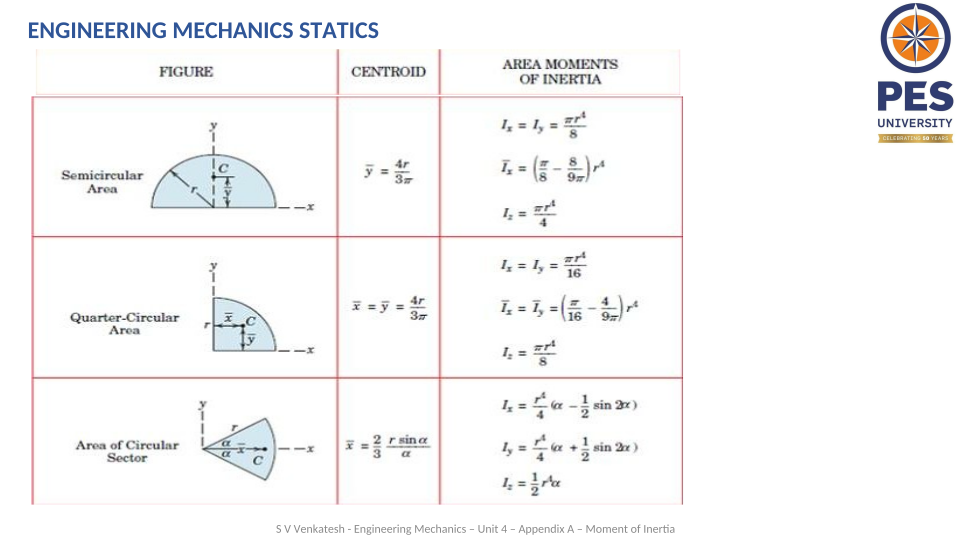
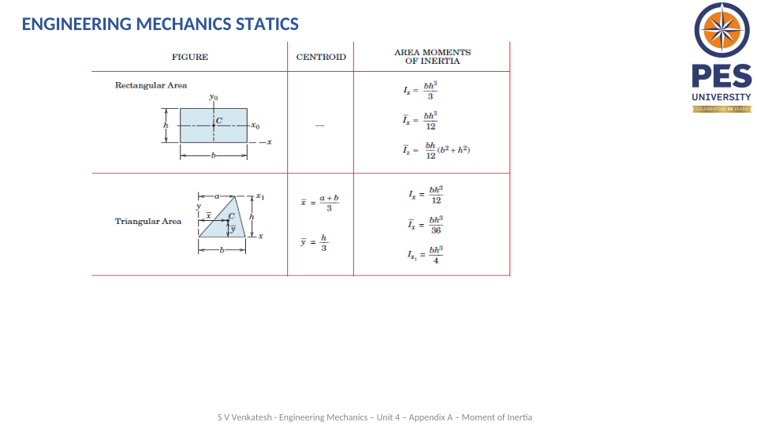
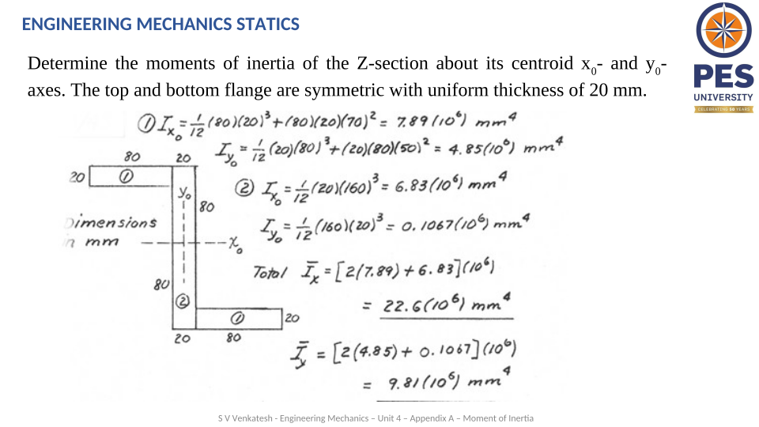
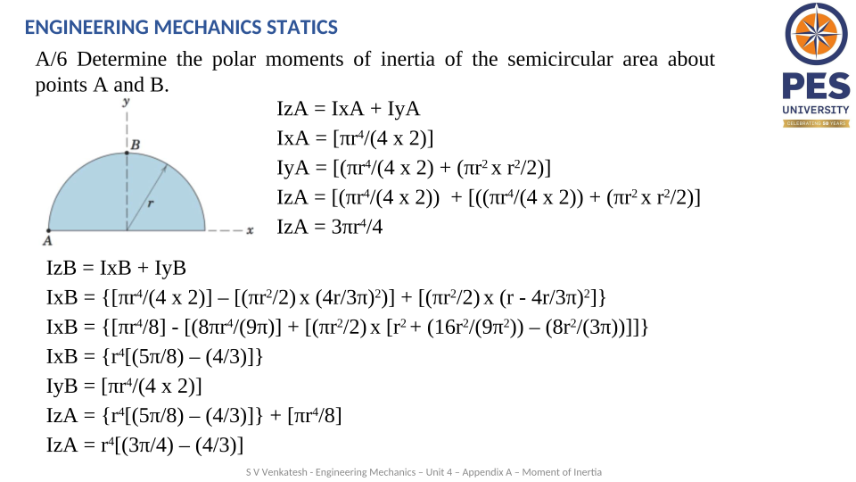

Important points and why
- Source slide page 1: no readable `.slides.md` text was extracted. The original rendered page is included as the adjacent source figure for visual inspection. EV0000190 · EV0000191 · EV0000192
- Source slide page 2 (extracted text): Engineering Mechanics Statics EIGHTH Edition SI Version J. L. Meriam and L. G. Kraige Unit 4 Moment of Inertia & Friction Appendix A Moment of inertia Copyright © 2012 by John Wiley & Sons, Inc. All rights reserved. S V Venkatesh - Engineering Mechanics – Unit 4 – Appendix A – Moment of Inertia EV0000193 · EV0000194 · EV0000195
- Source slide page 3 (extracted text): ENGINEERING MECHANICS STATICS S V Venkatesh - Engineering Mechanics – Unit 4 – Appendix A – Moment of Inertia EV0000196 · EV0000197 · EV0000198
- Source slide page 4 (extracted text): ENGINEERING MECHANICS STATICS S V Venkatesh - Engineering Mechanics – Unit 4 – Appendix A – Moment of Inertia EV0000199 · EV0000200 · EV0000201
- Source slide page 5 (extracted text): ENGINEERING MECHANICS STATICS S V Venkatesh - Engineering Mechanics – Unit 4 – Appendix A – Moment of Inertia EV0000202 · EV0000203 · EV0000204
- Source slide page 6 (extracted text): ENGINEERING MECHANICS STATICS Determine the moments of inertia of the Z-section about its centroid x0- and y0-axes. The top and bottom flange are symmetric with uniform thickness of 20 mm. S V Venkatesh - Engineering Mechanics – Unit 4 – Appendix A – Moment of Inertia EV0000205 · EV0000206 · EV0000207
- Source slide page 7 (extracted text): ENGINEERING MECHANICS STATICS A/6 Determine the polar moments of inertia of the semicircular area about points A and B. IzA = IxA + IyA IxA = [πr4/(4 x 2)] IyA = [(πr4/(4 x 2) + (πr2 x r2/2)] IzA = [(πr4/(4 x 2)) + [((πr4/(4 x 2)) + (πr2 x r2/2)] IzA = 3πr4/4 IzB = IxB + IyB IxB = {[πr4/(4 x 2)] – [(πr2/2) x (4r/3π)2)] + [(πr2/2) x (r - 4r/3π)2]} IxB = {[πr4/8] - [(8πr4/(9π)] + [(πr2/2) x [r2 + (16r2/(9π2)) – (8r2/(3π))]]} IxB = {r4[(5π/8) – (4/3)]} IyB = [πr4/(4 x 2)] S V Venkatesh - Engineering Mechanics – Unit 4 – Appendix A – Moment of Inertia IzA = {r4[(5π/8) – (4/3)]} + [πr4/8] ## Page / slide 8 (OCR) THANK YOU Dr. S V PES Venkatesh Civil Engineering Department of S & H UNIVERSITY CELEBRATING 5O YEARS EV0000208
- Source slide page 8: no readable `.slides.md` text was extracted. The original rendered page is included as the adjacent source figure for visual inspection. EV0000209
3CLASS 38 Moment of Inertia_ Numerical
This lesson is indexed from the source video titled CLASS 38 Moment of Inertia_ Numerical. Its complete timestamped transcript is preserved below in segment order. The original video path and content hash are recorded in datasets/lecture-corpus.json. Transcript text is source wording; it has not been silently corrected or rewritten. A candidate slide deck is grouped here according to the current matching score; the exact path and page locators are listed in the source evidence. EV0000018 · EV0000019
Graphs and diagrams

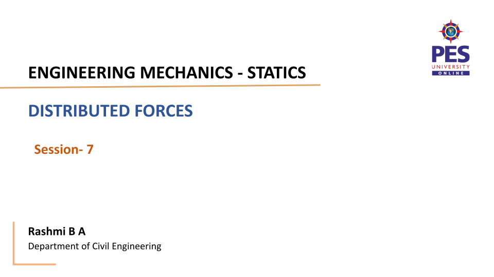
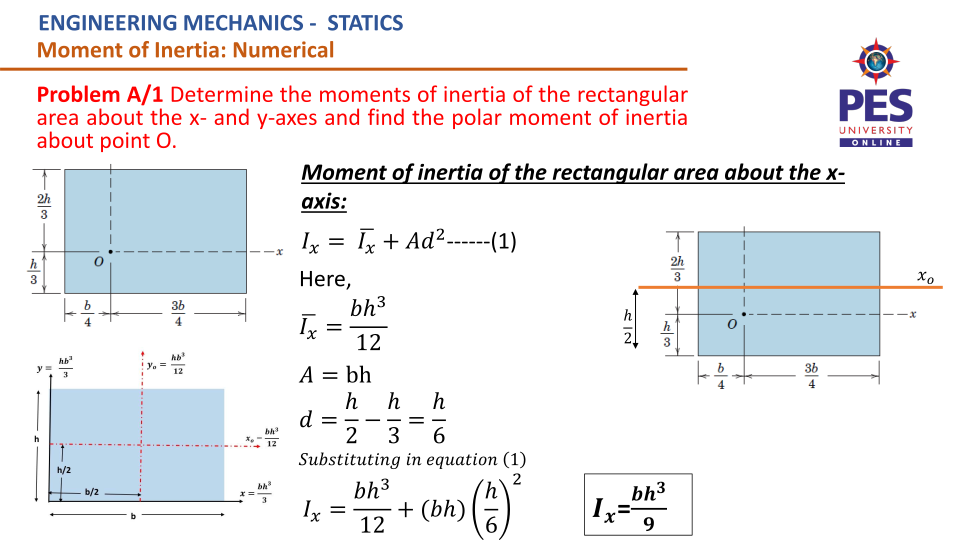
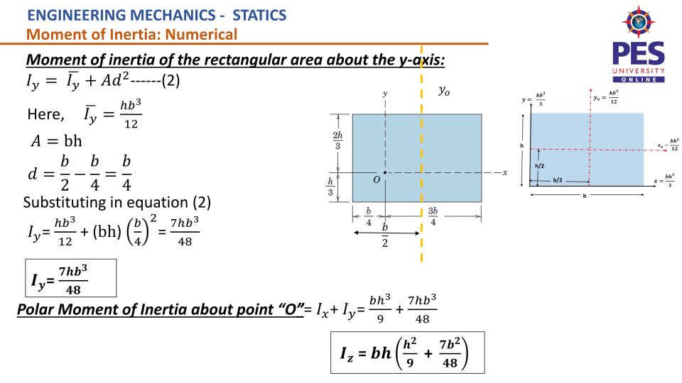
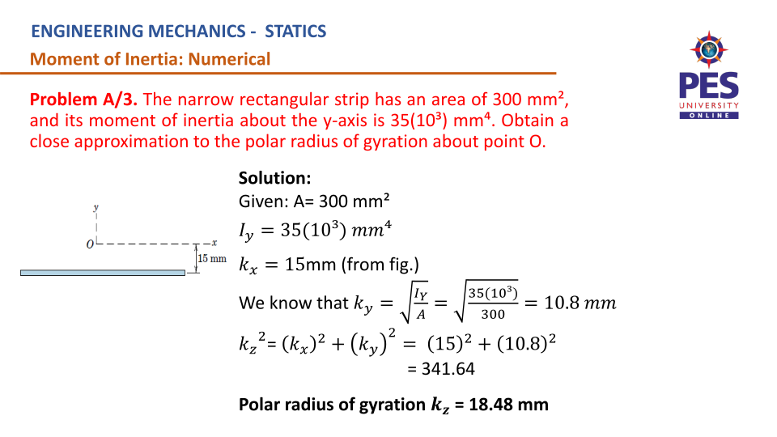
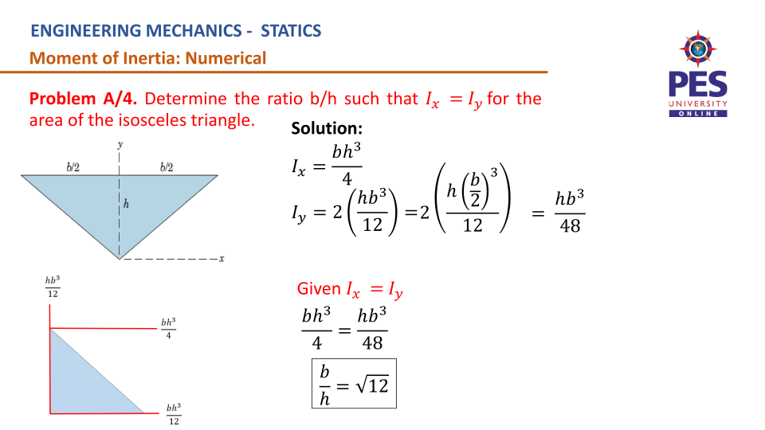

Important points and why
- Source slide page 1 (extracted text): ENGINEERING MECHANICS - STATICS Rashmi B A Department of Civil Engineering EV0000333 · EV0000334 · EV0000335
- Source slide page 2 (extracted text): ENGINEERING MECHANICS - STATICS DISTRIBUTED FORCES Session- 7 Rashmi B A Department of Civil Engineering EV0000336 · EV0000337 · EV0000338
- Source slide page 3 (extracted text): ENGINEERING MECHANICS - STATICS Moment of Inertia: Numerical Problem A/1 Determine the moments of inertia of the rectangular area about the x- and y-axes and find the polar moment of inertia about point O. Moment of inertia of the rectangular area about the x- axis: 𝐼𝑥= ഥ𝐼𝑥+ 𝐴𝑑2------(1) Here, 𝑥𝑜 𝑏ℎ3 ℎ ഥ𝐼𝑥= 12 2 𝐴= bh ℎ ℎ 𝑑= −ℎ = 2 3 6 𝑆𝑢𝑏𝑠𝑡𝑖𝑡𝑢𝑡𝑖𝑛𝑔𝑖𝑛𝑒𝑞𝑢𝑎𝑡𝑖𝑜𝑛1 2 𝑏ℎ3 ℎ 𝒃𝒉𝟑 𝐼𝑥= + (𝑏ℎ) 𝑰𝒙= 12 6 𝟗 EV0000339 · EV0000340 · EV0000341
- Source slide page 4 (extracted text): ENGINEERING MECHANICS - STATICS Moment of Inertia: Numerical Moment of inertia of the rectangular area about the y-axis: 𝐼𝑦= ഥ𝐼𝑦+ 𝐴𝑑2------(2) 𝑦𝑜 ℎ𝑏3 Here, ഥ𝐼𝑦= 12 𝐴= bh 𝑏 𝑏 𝑑= −𝑏 = 2 4 4 Substituting in equation (2) 2 ℎ𝑏3 𝑏 7ℎ𝑏3 𝐼𝑦= + (bh) = 𝑏 12 4 48 2 𝟕𝒉𝒃𝟑 𝑰𝒚= 𝟒𝟖 𝑏ℎ3 7ℎ𝑏3 Polar Moment of Inertia about point “O”= 𝐼𝑥+ 𝐼𝑦= + 9 48 𝒉𝟐 𝟕𝒃𝟐 𝑰𝒛= 𝒃𝒉 𝟗+ 𝟒𝟖 EV0000342 · EV0000343 · EV0000344
- Source slide page 5 (extracted text): ENGINEERING MECHANICS - STATICS Moment of Inertia: Numerical Problem A/3. The narrow rectangular strip has an area of 300 mm², and its moment of inertia about the y-axis is 35(10³) mm⁴. Obtain a close approximation to the polar radius of gyration about point O. Solution: Given: A= 300 mm² 𝐼𝑦= 35(10³) 𝑚𝑚⁴ 𝑘𝑥= 15mm (from fig.) 𝐼𝑌 35(10³) We know that 𝑘𝑦= 𝐴= 300 = 10.8 𝑚𝑚 2 2 2 𝑘𝑧 2= 𝑘𝑥2 + 𝑘𝑦 = 15 + 10.8 = 341.64 Polar radius of gyration 𝒌𝒛= 18.48 mm EV0000345 · EV0000346 · EV0000347
- Source slide page 6 (extracted text): ENGINEERING MECHANICS - STATICS Moment of Inertia: Numerical Problem A/4. Determine the ratio b/h such that 𝐼𝑥= 𝐼𝑦for the area of the isosceles triangle. Solution: 𝑏ℎ3 𝐼𝑥= 3 4 ℎ𝑏 ℎ𝑏3 2 ℎ𝑏3 𝐼𝑦= 2 = 2 = 12 12 48 Given 𝐼𝑥= 𝐼𝑦 𝑏ℎ3 ℎ𝑏3 = 4 48 𝑏 ℎ= 12 EV0000348 · EV0000349 · EV0000350
- Source slide page 7 (extracted text): THANK YOU Rashmi B A Department of Civil Engineering rashmiba@pes.edu EV0000351 · EV0000352 · EV0000353
4CLASS 39 Moment of Inertia_ Numerical
This lesson is indexed from the source video titled CLASS 39 Moment of Inertia_ Numerical. Its complete timestamped transcript is preserved below in segment order. The original video path and content hash are recorded in datasets/lecture-corpus.json. Transcript text is source wording; it has not been silently corrected or rewritten. A candidate slide deck is grouped here according to the current matching score; the exact path and page locators are listed in the source evidence. EV0000030 · EV0000031
Graphs and diagrams

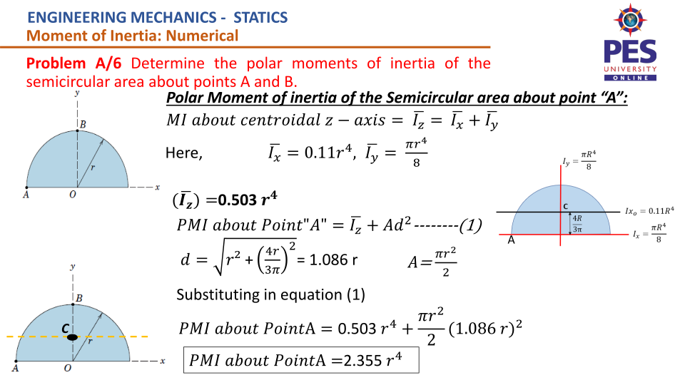
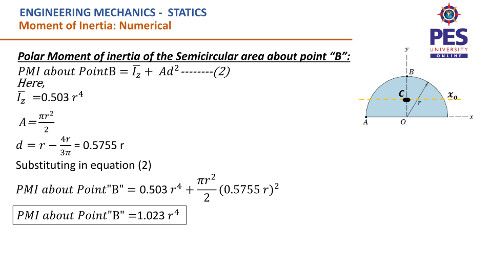
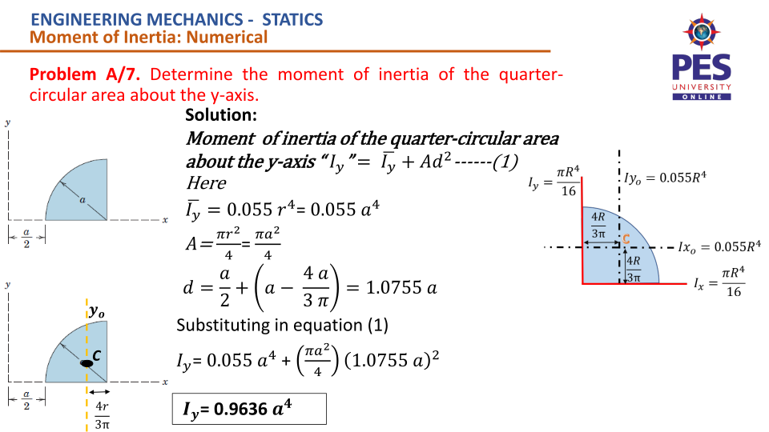
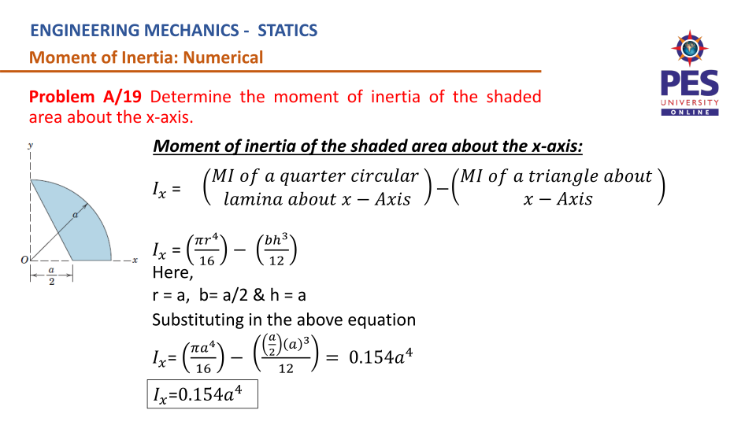

Important points and why
- Source slide page 1 (extracted text): ENGINEERING MECHANICS - STATICS Rashmi B A Department of Civil Engineering EV0000354 · EV0000355 · EV0000356
- Source slide page 2 (extracted text): ENGINEERING MECHANICS - STATICS DISTRIBUTED FORCES Session- 8 Rashmi B A Department of Civil Engineering EV0000357 · EV0000358 · EV0000359
- Source slide page 3 (extracted text): ENGINEERING MECHANICS - STATICS Moment of Inertia: Numerical Problem A/6 Determine the polar moments of inertia of the semicircular area about points A and B. Polar Moment of inertia of the Semicircular area about point “A”: 𝑀𝐼𝑎𝑏𝑜𝑢𝑡𝑐𝑒𝑛𝑡𝑟𝑜𝑖𝑑𝑎𝑙𝑧−𝑎𝑥𝑖𝑠= ഥ𝐼𝑧= ഥ𝐼𝑥+ ഥ𝐼𝑦 𝜋𝑟4 Here, ഥ𝐼𝑥= 0.11𝑟4, ഥ𝐼𝑦= 8 (ഥ𝑰𝒛) =0.503 𝒓𝟒 𝑃𝑀𝐼𝑎𝑏𝑜𝑢𝑡𝑃𝑜𝑖𝑛𝑡"𝐴" = ഥ𝐼𝑧+ 𝐴𝑑2--------(1) A 2 4𝑟 𝜋𝑟2 𝑑= 𝑟² + = 1.086 r 𝐴= 3𝜋 2 Substituting in equation (1) 𝜋𝑟2 C 𝑃𝑀𝐼𝑎𝑏𝑜𝑢𝑡𝑃𝑜𝑖𝑛𝑡A = 0.503 𝑟4 + (1.086 𝑟)2 2 𝑃𝑀𝐼𝑎𝑏𝑜𝑢𝑡𝑃𝑜𝑖𝑛𝑡A =2.355 𝑟4 EV0000360 · EV0000361 · EV0000362
- Source slide page 4 (extracted text): ENGINEERING MECHANICS - STATICS Moment of Inertia: Numerical Polar Moment of inertia of the Semicircular area about point “B”: 𝑃𝑀𝐼𝑎𝑏𝑜𝑢𝑡𝑃𝑜𝑖𝑛𝑡B = ഥ𝐼𝑧+ 𝐴𝑑2--------(2) Here, ഥ𝐼𝑧=0.503 𝑟4 C 𝒙𝒐 𝜋𝑟2 𝐴= 2 4𝑟 𝑑= 𝑟− 3𝜋= 0.5755 r Substituting in equation (2) 𝜋𝑟2 𝑃𝑀𝐼𝑎𝑏𝑜𝑢𝑡𝑃𝑜𝑖𝑛𝑡"B" = 0.503 𝑟4 + (0.5755 𝑟)2 2 𝑃𝑀𝐼𝑎𝑏𝑜𝑢𝑡𝑃𝑜𝑖𝑛𝑡"B" =1.023 𝑟4 EV0000363 · EV0000364 · EV0000365
- Source slide page 5 (extracted text): ENGINEERING MECHANICS - STATICS Moment of Inertia: Numerical Problem A/7. Determine the moment of inertia of the quarter- circular area about the y-axis. Solution: Moment ofinertiaofthequarter-circulararea aboutthey-axis“ = 𝐴𝑑2------(1) 𝐼𝑦” ഥ𝐼𝑦+ Here 0.055 𝑟4= 0.055 𝑎4 ഥ𝐼𝑦= 𝜋𝑟2 𝜋𝑎2 𝐴= = 4 4 𝑎 𝑎 𝑑= + 𝑎−4 = 1.0755 𝑎 2 3 𝜋 𝒚𝒐 Substituting in equation (1) 𝜋𝑎2 C 𝑎4 + 1.0755 𝑎2 𝐼𝑦= 0.055 4 𝒂𝟒 4𝑟 𝑰𝒚= 0.9636 3π EV0000366 · EV0000367 · EV0000368
- Source slide page 6 (extracted text): ENGINEERING MECHANICS - STATICS Moment of Inertia: Numerical Problem A/19 Determine the moment of inertia of the shaded area about the x-axis. Moment of inertia of the shaded area about the x-axis: 𝑀𝐼𝑜𝑓𝑎𝑞𝑢𝑎𝑟𝑡𝑒𝑟𝑐𝑖𝑟𝑐𝑢𝑙𝑎𝑟 𝑀𝐼𝑜𝑓𝑎𝑡𝑟𝑖𝑎𝑛𝑔𝑙𝑒𝑎𝑏𝑜𝑢𝑡 𝐼𝑥= − 𝑙𝑎𝑚𝑖𝑛𝑎𝑎𝑏𝑜𝑢𝑡𝑥−𝐴𝑥𝑖𝑠 𝑥−𝐴𝑥𝑖𝑠 𝜋𝑟4 𝑏ℎ3 𝐼𝑥= − 16 12 Here, r = a, b= a/2 & h = a Substituting in the above equation 𝑎 𝑎3 𝜋𝑎4 − 2 = 0.154𝑎4 𝐼𝑥= 16 12 𝐼𝑥=0.154𝑎4 EV0000369 · EV0000370 · EV0000371
- Source slide page 7 (extracted text): THANK YOU Rashmi B A Department of Civil Engineering rashmiba@pes.edu EV0000372 · EV0000373 · EV0000374
5CLASS 40 Moment of Inertia_ Numerical
This lesson is indexed from the source video titled CLASS 40 Moment of Inertia_ Numerical. Its complete timestamped transcript is preserved below in segment order. The original video path and content hash are recorded in datasets/lecture-corpus.json. Transcript text is source wording; it has not been silently corrected or rewritten. A candidate slide deck is grouped here according to the current matching score; the exact path and page locators are listed in the source evidence. EV0000042 · EV0000043
Graphs and diagrams

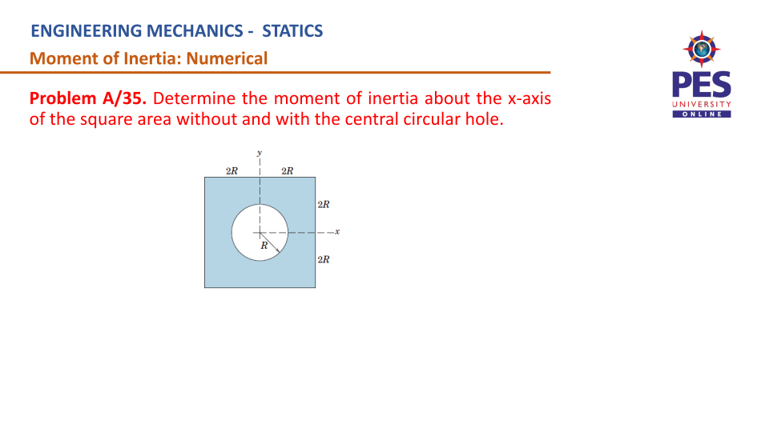
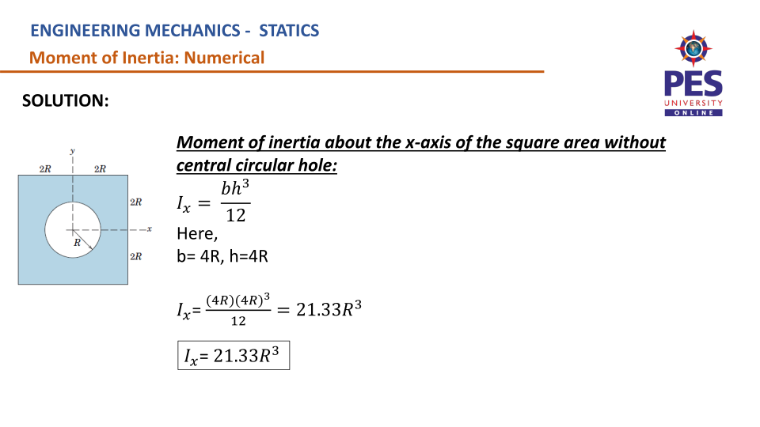
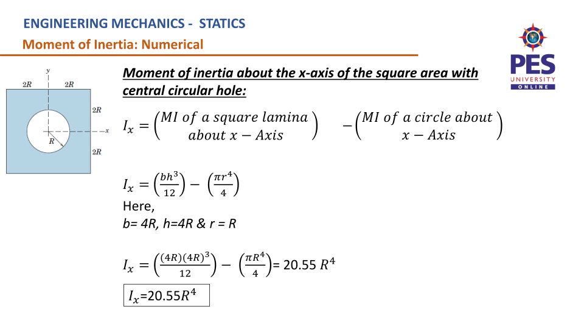
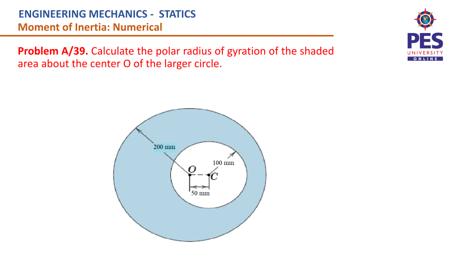
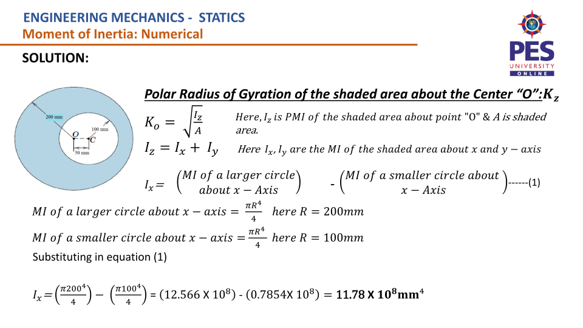
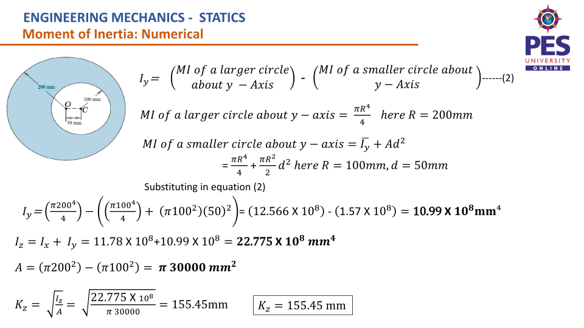

Important points and why
- Source slide page 1 (extracted text): ENGINEERING MECHANICS - STATICS Rashmi B A Department of Civil Engineering EV0000375 · EV0000376 · EV0000377
- Source slide page 2 (extracted text): ENGINEERING MECHANICS - STATICS DISTRIBUTED FORCES Session- 9 Rashmi B A Department of Civil Engineering EV0000378 · EV0000379 · EV0000380
- Source slide page 3 (extracted text): ENGINEERING MECHANICS - STATICS Moment of Inertia: Numerical Problem A/35. Determine the moment of inertia about the x-axis of the square area without and with the central circular hole. EV0000381 · EV0000382 · EV0000383
- Source slide page 4 (extracted text): ENGINEERING MECHANICS - STATICS Moment of Inertia: Numerical SOLUTION: Moment of inertia about the x-axis of the square area without central circular hole: 𝑏ℎ3 𝐼𝑥= 12 Here, b= 4R, h=4R (4𝑅)(4𝑅)3 = 21.33𝑅3 𝐼𝑥= 12 21.33𝑅3 𝐼𝑥= EV0000384 · EV0000385 · EV0000386
- Source slide page 5 (extracted text): ENGINEERING MECHANICS - STATICS Moment of Inertia: Numerical Moment of inertia about the x-axis of the square area with central circular hole: 𝑀𝐼𝑜𝑓𝑎𝑠𝑞𝑢𝑎𝑟𝑒𝑙𝑎𝑚𝑖𝑛𝑎 𝑀𝐼𝑜𝑓𝑎𝑐𝑖𝑟𝑐𝑙𝑒𝑎𝑏𝑜𝑢𝑡 𝐼𝑥= − 𝑎𝑏𝑜𝑢𝑡𝑥−𝐴𝑥𝑖𝑠 𝑥−𝐴𝑥𝑖𝑠 𝑏ℎ3 𝜋𝑟4 𝐼𝑥= − 12 4 Here, b= 4R, h=4R & r = R (4𝑅)(4𝑅)3 𝜋𝑅4 𝑅4 𝐼𝑥= − = 20.55 12 4 𝐼𝑥=20.55𝑅4 EV0000387 · EV0000388 · EV0000389
- Source slide page 6 (extracted text): ENGINEERING MECHANICS - STATICS Moment of Inertia: Numerical Problem A/39. Calculate the polar radius of gyration of the shaded area about the center O of the larger circle. EV0000390 · EV0000391 · EV0000392
- Source slide page 7 (extracted text): ENGINEERING MECHANICS - STATICS Moment of Inertia: Numerical SOLUTION: Polar Radius of Gyration of the shaded area about the Center “O”:𝑲𝒛 𝐼𝑧 𝐻𝑒𝑟𝑒, 𝐼𝑧𝑖𝑠𝑃𝑀𝐼𝑜𝑓𝑡ℎ𝑒𝑠ℎ𝑎𝑑𝑒𝑑𝑎𝑟𝑒𝑎𝑎𝑏𝑜𝑢𝑡𝑝𝑜𝑖𝑛𝑡"O" & Aisshaded 𝐾𝑜= 𝐴 area. Here 𝐼𝑥,𝐼𝑦𝑎𝑟𝑒𝑡ℎ𝑒𝑀𝐼𝑜𝑓𝑡ℎ𝑒𝑠ℎ𝑎𝑑𝑒𝑑𝑎𝑟𝑒𝑎𝑎𝑏𝑜𝑢𝑡𝑥𝑎𝑛𝑑𝑦−𝑎𝑥𝑖𝑠 𝐼𝑧= 𝐼𝑥+ 𝐼𝑦 𝑀𝐼𝑜𝑓𝑎𝑙𝑎𝑟𝑔𝑒𝑟𝑐𝑖𝑟𝑐𝑙𝑒 𝑀𝐼𝑜𝑓𝑎𝑠𝑚𝑎𝑙𝑙𝑒𝑟𝑐𝑖𝑟𝑐𝑙𝑒𝑎𝑏𝑜𝑢𝑡 𝐼𝑥= - ------(1) 𝑎𝑏𝑜𝑢𝑡𝑥−𝐴𝑥𝑖𝑠 𝑥−𝐴𝑥𝑖𝑠 𝜋𝑅4 𝑀𝐼𝑜𝑓𝑎𝑙𝑎𝑟𝑔𝑒𝑟𝑐𝑖𝑟𝑐𝑙𝑒𝑎𝑏𝑜𝑢𝑡𝑥−𝑎𝑥𝑖𝑠= ℎ𝑒𝑟𝑒𝑅= 200𝑚𝑚 4 𝜋𝑅4 𝑀𝐼𝑜𝑓𝑎𝑠𝑚𝑎𝑙𝑙𝑒𝑟𝑐𝑖𝑟𝑐𝑙𝑒𝑎𝑏𝑜𝑢𝑡𝑥−𝑎𝑥𝑖𝑠= ℎ𝑒𝑟𝑒𝑅= 100𝑚𝑚 4 Substituting in equation (1) 𝜋2004 𝜋1004 𝐼𝑥= − = 12.566 X 108 - 0.7854X 108 = 11.78 X 𝟏𝟎𝟖𝐦𝐦⁴ 4 4 EV0000393 · EV0000394 · EV0000395
- Source slide page 8 (extracted text): ENGINEERING MECHANICS - STATICS Moment of Inertia: Numerical 𝑀𝐼𝑜𝑓𝑎𝑙𝑎𝑟𝑔𝑒𝑟𝑐𝑖𝑟𝑐𝑙𝑒 𝑀𝐼𝑜𝑓𝑎𝑠𝑚𝑎𝑙𝑙𝑒𝑟𝑐𝑖𝑟𝑐𝑙𝑒𝑎𝑏𝑜𝑢𝑡 ------(2) 𝐼𝑦= - 𝑎𝑏𝑜𝑢𝑡𝑦−𝐴𝑥𝑖𝑠 𝑦−𝐴𝑥𝑖𝑠 𝜋𝑅4 𝑀𝐼𝑜𝑓𝑎𝑙𝑎𝑟𝑔𝑒𝑟𝑐𝑖𝑟𝑐𝑙𝑒𝑎𝑏𝑜𝑢𝑡𝑦−𝑎𝑥𝑖𝑠= ℎ𝑒𝑟𝑒𝑅= 200𝑚𝑚 4 𝑀𝐼𝑜𝑓𝑎𝑠𝑚𝑎𝑙𝑙𝑒𝑟𝑐𝑖𝑟𝑐𝑙𝑒𝑎𝑏𝑜𝑢𝑡𝑦−𝑎𝑥𝑖𝑠= ഥ𝐼𝑦+ 𝐴𝑑2 𝜋𝑅4 𝜋𝑅2 = + 𝑑2 ℎ𝑒𝑟𝑒𝑅= 100𝑚𝑚, 𝑑= 50𝑚𝑚 4 2 Substituting in equation (2) 𝜋2004 𝜋1004 2 𝐼𝑦= − + 𝜋1002 50 = 12.566 X 108 - 1.57 X 108 = 10.99 X 𝟏𝟎𝟖𝐦𝐦⁴ 4 4 𝐼𝑧= 𝐼𝑥+ 𝐼𝑦= 11.78 X 108+10.99 X 108 = 𝟐2.775 X 𝟏𝟎𝟖𝒎𝒎𝟒 𝐴= 𝜋2002 −𝜋1002 = 𝝅𝟑𝟎𝟎𝟎𝟎𝒎𝒎𝟐 𝐼𝑧 22.775 X 108 𝐾𝑧= 𝐴= 𝜋30000 = 155.45mm 𝐾𝑧= 155.45 mm EV0000396 · EV0000397 · EV0000398
- Source slide page 9 (extracted text): THANK YOU Rashmi B A Department of Civil Engineering rashmiba@pes.edu EV0000399 · EV0000400 · EV0000401
6CLASS 41 Moment of Inertia_ Numerical
This lesson is indexed from the source video titled CLASS 41 Moment of Inertia_ Numerical. Its complete timestamped transcript is preserved below in segment order. The original video path and content hash are recorded in datasets/lecture-corpus.json. Transcript text is source wording; it has not been silently corrected or rewritten. A candidate slide deck is grouped here according to the current matching score; the exact path and page locators are listed in the source evidence. EV0000058 · EV0000059
Graphs and diagrams

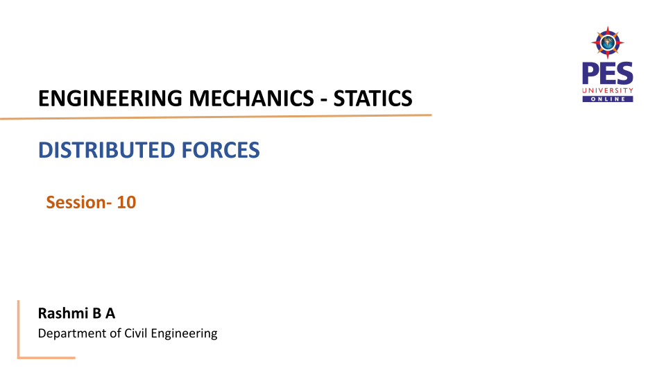
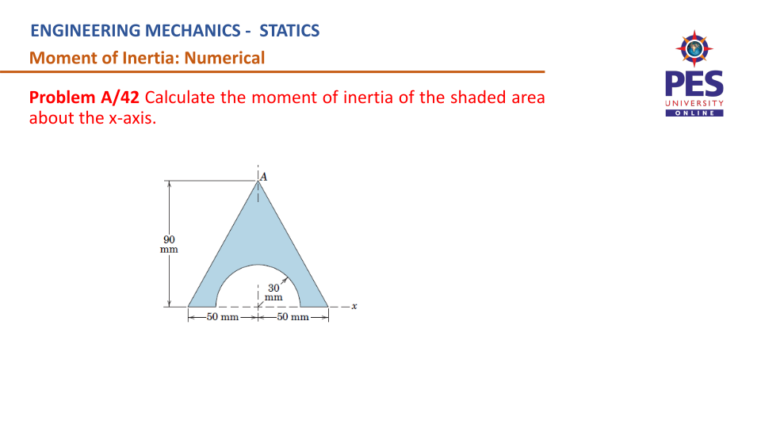
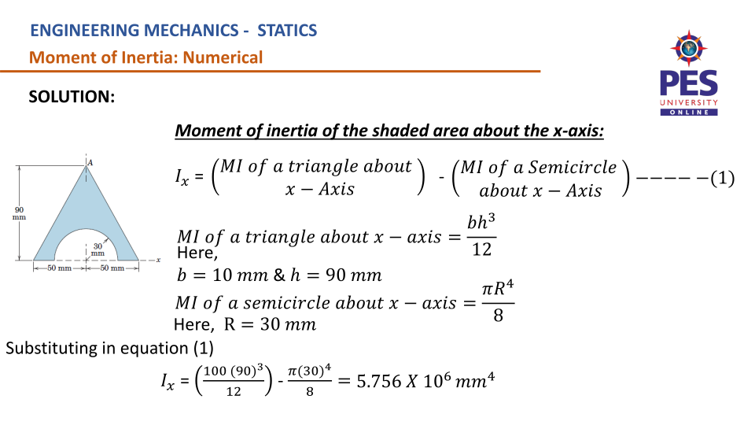
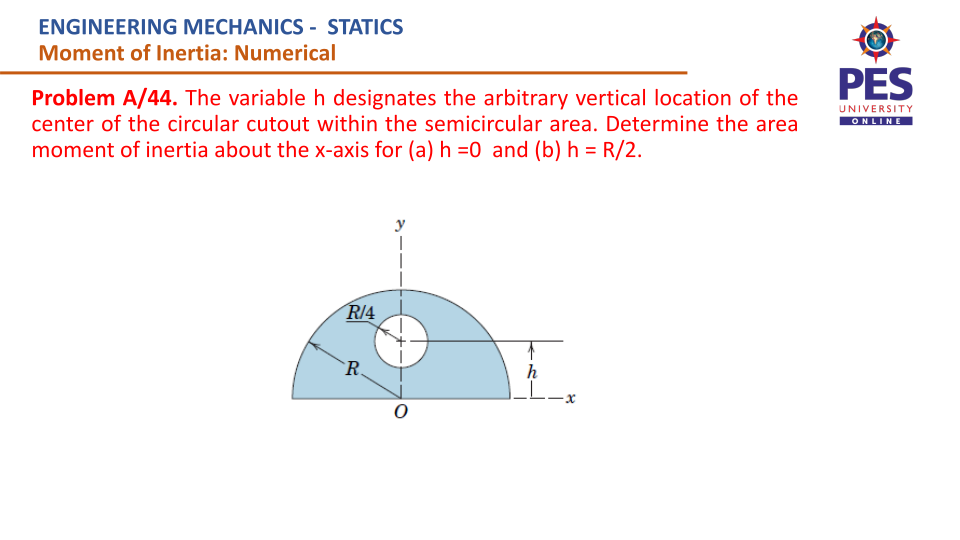
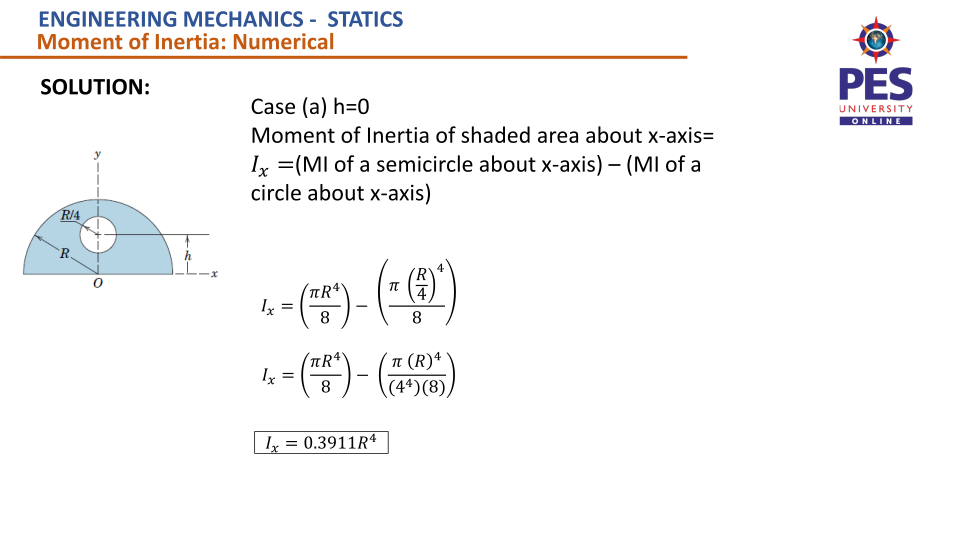
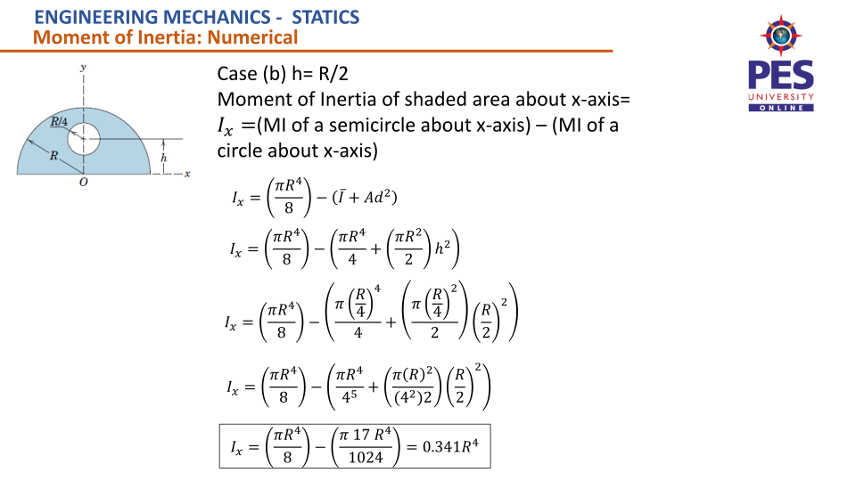

Important points and why
- Source slide page 1 (extracted text): ENGINEERING MECHANICS - STATICS Rashmi B A Department of Civil Engineering EV0000420 · EV0000421 · EV0000422
- Source slide page 2 (extracted text): ENGINEERING MECHANICS - STATICS DISTRIBUTED FORCES Session- 10 Rashmi B A Department of Civil Engineering EV0000423 · EV0000424 · EV0000425
- Source slide page 3 (extracted text): ENGINEERING MECHANICS - STATICS Moment of Inertia: Numerical Problem A/42 Calculate the moment of inertia of the shaded area about the x-axis. EV0000426 · EV0000427 · EV0000428
- Source slide page 4 (extracted text): ENGINEERING MECHANICS - STATICS Moment of Inertia: Numerical SOLUTION: Moment of inertia of the shaded area about the x-axis: 𝑀𝐼𝑜𝑓𝑎𝑡𝑟𝑖𝑎𝑛𝑔𝑙𝑒𝑎𝑏𝑜𝑢𝑡 𝑀𝐼𝑜𝑓𝑎𝑆𝑒𝑚𝑖𝑐𝑖𝑟𝑐𝑙𝑒 𝐼𝑥= - −−−−−(1) 𝑥−𝐴𝑥𝑖𝑠 𝑎𝑏𝑜𝑢𝑡𝑥−𝐴𝑥𝑖𝑠 𝑏ℎ3 𝑀𝐼𝑜𝑓𝑎𝑡𝑟𝑖𝑎𝑛𝑔𝑙𝑒𝑎𝑏𝑜𝑢𝑡𝑥−𝑎𝑥𝑖𝑠= 12 Here, 𝑏= 10 𝑚𝑚& ℎ= 90 𝑚𝑚 𝜋𝑅4 𝑀𝐼𝑜𝑓𝑎𝑠𝑒𝑚𝑖𝑐𝑖𝑟𝑐𝑙𝑒𝑎𝑏𝑜𝑢𝑡𝑥−𝑎𝑥𝑖𝑠= 8 Here, R = 30 𝑚𝑚 Substituting in equation (1) 100 (90)3 𝜋(30)4 𝐼𝑥= - = 5.756 𝑋106 𝑚𝑚4 12 8 EV0000429 · EV0000430 · EV0000431
- Source slide page 5 (extracted text): ENGINEERING MECHANICS - STATICS Moment of Inertia: Numerical Problem A/44. The variable h designates the arbitrary vertical location of the center of the circular cutout within the semicircular area. Determine the area moment of inertia about the x-axis for (a) h =0 and (b) h = R/2. EV0000432 · EV0000433 · EV0000434
- Source slide page 6 (extracted text): ENGINEERING MECHANICS - STATICS Moment of Inertia: Numerical SOLUTION: Case (a) h=0 Moment of Inertia of shaded area about x-axis= 𝐼𝑥=(MI of a semicircle about x-axis) – (MI of a circle about x-axis) 4 𝑅 𝜋 𝜋𝑅4 4 𝐼𝑥= − 8 8 𝜋𝑅4 𝜋𝑅4 𝐼𝑥= − 8 (44)(8) 𝐼𝑥= 0.3911𝑅4 EV0000435 · EV0000436 · EV0000437
- Source slide page 7 (extracted text): ENGINEERING MECHANICS - STATICS Moment of Inertia: Numerical Case (b) h= R/2 Moment of Inertia of shaded area about x-axis= 𝐼𝑥=(MI of a semicircle about x-axis) – (MI of a circle about x-axis) 𝜋𝑅4 𝐼𝑥= − ҧ𝐼+ 𝐴𝑑2 8 𝜋𝑅4 −𝜋𝑅4 + 𝜋𝑅2 ℎ2 𝐼𝑥= 8 4 2 4 2 2 𝜋𝑅 𝜋𝑅 𝜋𝑅4 4 4 𝑅 𝐼𝑥= − + 8 4 2 2 2 𝜋𝑅4 𝜋𝑅4 𝜋𝑅2 𝑅 𝐼𝑥= − + 8 45 (42)2 2 𝜋𝑅4 −𝜋17 𝑅4 = 0.341𝑅4 𝐼𝑥= 8 1024 EV0000438 · EV0000439 · EV0000440
- Source slide page 8 (extracted text): THANK YOU Rashmi B A Department of Civil Engineering rashmiba@pes.edu EV0000441 · EV0000442 · EV0000443
7CLASS 51.1 Moment of Inertia_ Numerical
This lesson is indexed from the source video titled CLASS 51.1 Moment of Inertia_ Numerical. Its complete timestamped transcript is preserved below in segment order. The original video path and content hash are recorded in datasets/lecture-corpus.json. Transcript text is source wording; it has not been silently corrected or rewritten. A candidate slide deck is grouped here according to the current matching score; the exact path and page locators are listed in the source evidence. EV0000074 · EV0000075
8CLASS 51.2 Moment of Inertia_ Numerical
This lesson is indexed from the source video titled CLASS 51.2 Moment of Inertia_ Numerical. Its complete timestamped transcript is preserved below in segment order. The original video path and content hash are recorded in datasets/lecture-corpus.json. Transcript text is source wording; it has not been silently corrected or rewritten. A candidate slide deck is grouped here according to the current matching score; the exact path and page locators are listed in the source evidence. EV0000090 · EV0000091
9CLASS 51.2 Moment of Inertia_ Numerical
This lesson is indexed from the source video titled CLASS 51.2 Moment of Inertia_ Numerical. Its complete timestamped transcript is preserved below in segment order. The original video path and content hash are recorded in datasets/lecture-corpus.json. Transcript text is source wording; it has not been silently corrected or rewritten. A candidate slide deck is grouped here according to the current matching score; the exact path and page locators are listed in the source evidence. EV0000106 · EV0000107
10CLASS 47 Friction_ Numerical
This lesson is indexed from the source video titled CLASS 47 Friction_ Numerical. Its complete timestamped transcript is preserved below in segment order. The original video path and content hash are recorded in datasets/lecture-corpus.json. Transcript text is source wording; it has not been silently corrected or rewritten. A candidate slide deck is grouped here according to the current matching score; the exact path and page locators are listed in the source evidence. EV0000122 · EV0000123
Graphs and diagrams

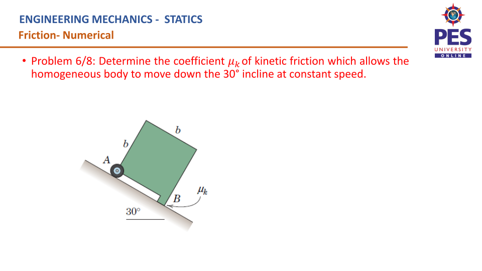
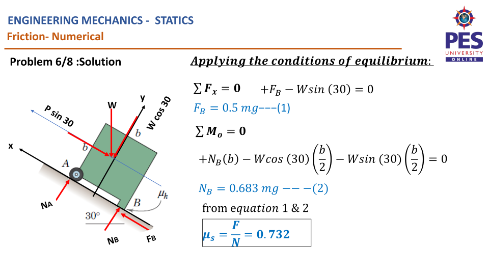
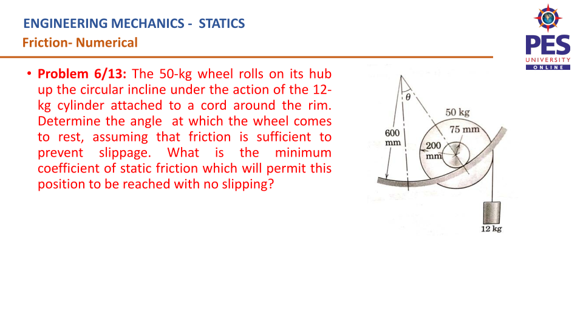
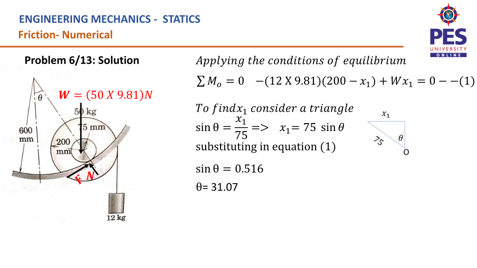
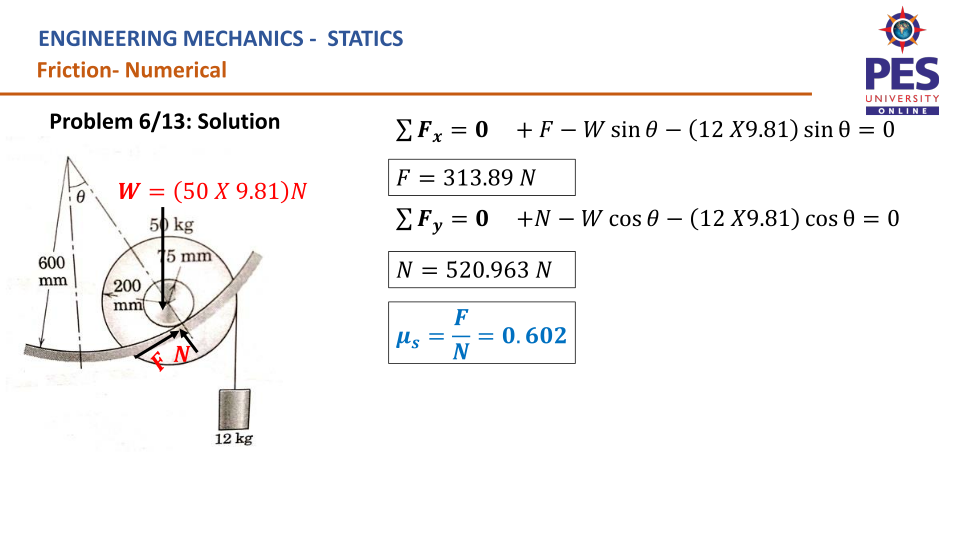

Important points and why
- Source slide page 1 (extracted text): ENGINEERING MECHANICS - STATICS Rashmi B A Department of Civil Engineering EV0000539 · EV0000540 · EV0000541
- Source slide page 2 (extracted text): ENGINEERING MECHANICS - STATICS FRICTION Session- 4 Rashmi B A Department of Civil Engineering EV0000542 · EV0000543 · EV0000544
- Source slide page 3 (extracted text): ENGINEERING MECHANICS - STATICS Friction- Numerical • Problem 6/8: Determine the coefficient 𝜇𝑘of kinetic friction which allows the homogeneous body to move down the 30° incline at constant speed. EV0000545 · EV0000546 · EV0000547
- Source slide page 4 (extracted text): ENGINEERING MECHANICS - STATICS Friction- Numerical Problem 6/8 :Solution 𝑨𝒑𝒑𝒍𝒚𝒊𝒏𝒈𝒕𝒉𝒆𝒄𝒐𝒏𝒅𝒊𝒕𝒊𝒐𝒏𝒔𝒐𝒇𝒆𝒒𝒖𝒊𝒍𝒊𝒃𝒓𝒊𝒖𝒎: = 0 σ 𝑭𝒙= 𝟎 +𝐹𝐵−𝑊𝑠𝑖𝑛30 y W 𝐹𝐵= 0.5 𝑚𝑔−−−(1) σ 𝑴𝒐= 𝟎 x 𝑏 𝑏 +𝑁𝐵𝑏−𝑊𝑐𝑜𝑠30 −𝑊𝑠𝑖𝑛(30) = 0 2 2 𝑁𝐵= 0.683 𝑚𝑔−−−(2) from e𝑞𝑢𝑎𝑡𝑖𝑜𝑛1 & 2 𝑭 𝝁𝒔= 𝑵= 𝟎. 𝟕𝟑𝟐 EV0000548 · EV0000549 · EV0000550
- Source slide page 5 (extracted text): ENGINEERING MECHANICS - STATICS Friction- Numerical • Problem 6/13: The 50-kg wheel rolls on its hub up the circular incline under the action of the 12- kg cylinder attached to a cord around the rim. Determine the angle at which the wheel comes to rest, assuming that friction is sufficient to prevent slippage. What is the minimum coefficient of static friction which will permit this position to be reached with no slipping? EV0000551 · EV0000552 · EV0000553
- Source slide page 6 (extracted text): ENGINEERING MECHANICS - STATICS Friction- Numerical Problem 6/13: Solution 𝐴𝑝𝑝𝑙𝑦𝑖𝑛𝑔𝑡ℎ𝑒𝑐𝑜𝑛𝑑𝑖𝑡𝑖𝑜𝑛𝑠𝑜𝑓𝑒𝑞𝑢𝑖𝑙𝑖𝑏𝑟𝑖𝑢𝑚 σ 𝑀𝑜= 0 −(12 X 9.81)(200 −𝑥1) + 𝑊𝑥1 = 0 −−(1) 𝑾= 50 𝑋9.81 𝑁 𝑇𝑜𝑓𝑖𝑛𝑑𝑥1 𝑐𝑜𝑛𝑠𝑖𝑑𝑒𝑟𝑎𝑡𝑟𝑖𝑎𝑛𝑔𝑙𝑒 𝑥1 𝑥1 sin θ = => 𝑥1= 75 sin 𝜃 75 𝜃 substituting in equation (1) O sin θ = 0.516 𝑵 θ= 31.07 EV0000554 · EV0000555 · EV0000556
- Source slide page 7 (extracted text): ENGINEERING MECHANICS - STATICS Friction- Numerical Problem 6/13: Solution σ 𝑭𝒙= 𝟎 + 𝐹−𝑊sin 𝜃−12 𝑋9.81 sin θ = 0 𝐹= 313.89 𝑁 𝑾= 50 𝑋9.81 𝑁 σ 𝑭𝒚= 𝟎 +𝑁−𝑊cos 𝜃−12 𝑋9.81 cos θ = 0 𝑁= 520.963 𝑁 𝑭 𝝁𝒔= 𝑵= 𝟎. 𝟔𝟎𝟐 𝑵 EV0000557 · EV0000558 · EV0000559
- Source slide page 8 (extracted text): THANK YOU Rashmi B A Department of Civil Engineering rashmiba@pes.edu EV0000560 · EV0000561 · EV0000562
11CLASS 48 Friction_ Numerical
This lesson is indexed from the source video titled CLASS 48 Friction_ Numerical. Its complete timestamped transcript is preserved below in segment order. The original video path and content hash are recorded in datasets/lecture-corpus.json. Transcript text is source wording; it has not been silently corrected or rewritten. A candidate slide deck is grouped here according to the current matching score; the exact path and page locators are listed in the source evidence. EV0000138 · EV0000139
Graphs and diagrams

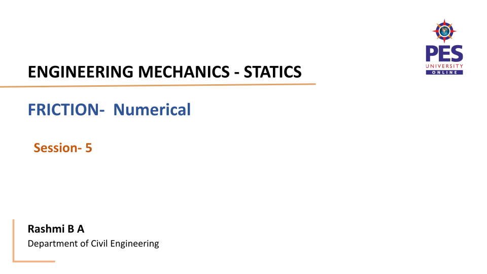
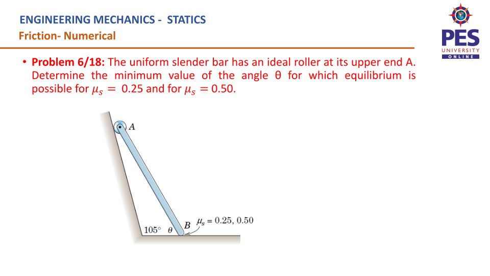
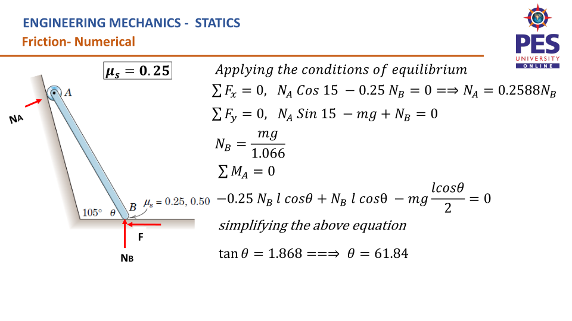
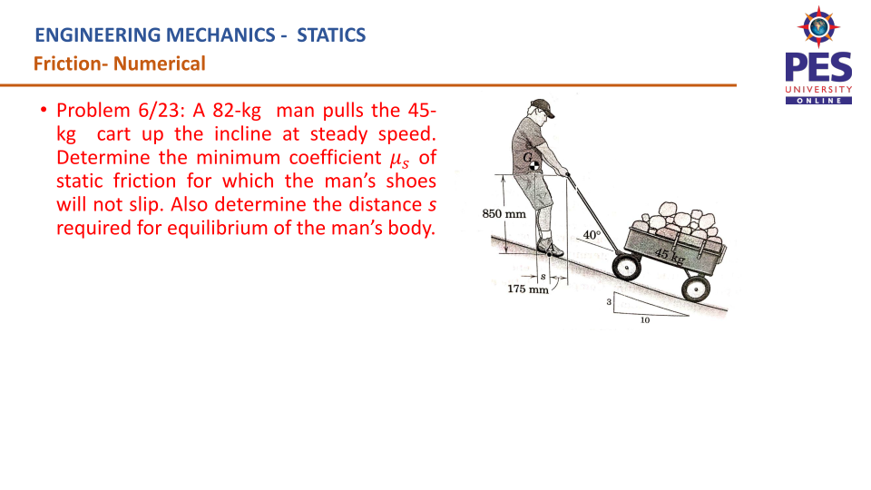
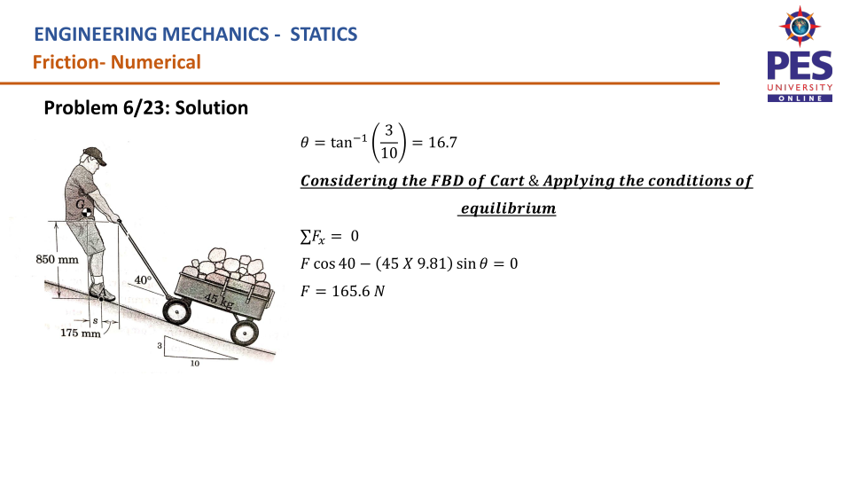
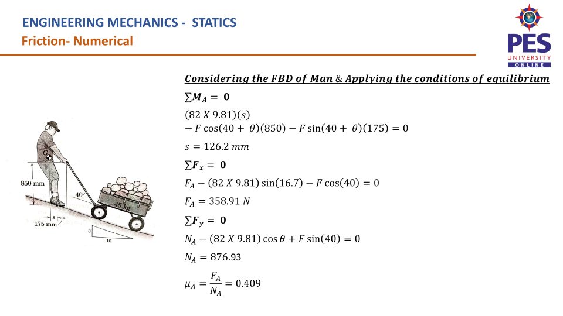

Important points and why
- Source slide page 1 (extracted text): ENGINEERING MECHANICS - STATICS Rashmi B A Department of Civil Engineering EV0000593 · EV0000594 · EV0000595
- Source slide page 2 (extracted text): ENGINEERING MECHANICS - STATICS FRICTION- Numerical Session- 5 Rashmi B A Department of Civil Engineering EV0000596 · EV0000597 · EV0000598
- Source slide page 3 (extracted text): ENGINEERING MECHANICS - STATICS Friction- Numerical • Problem 6/18: The uniform slender bar has an ideal roller at its upper end A. Determine the minimum value of the angle θ for which equilibrium is possible for 𝜇𝑠= 0.25 and for 𝜇𝑠= 0.50. EV0000599 · EV0000600 · EV0000601
- Source slide page 4 (extracted text): ENGINEERING MECHANICS - STATICS Friction- Numerical 𝝁𝒔= 𝟎. 𝟐𝟓 𝐴𝑝𝑝𝑙𝑦𝑖𝑛𝑔𝑡ℎ𝑒𝑐𝑜𝑛𝑑𝑖𝑡𝑖𝑜𝑛𝑠𝑜𝑓𝑒𝑞𝑢𝑖𝑙𝑖𝑏𝑟𝑖𝑢𝑚 σ 𝐹𝑥= 0, 𝑁𝐴𝐶𝑜𝑠15 −0.25 𝑁𝐵= 0 =⇒𝑁𝐴= 0.2588𝑁𝐵 σ 𝐹𝑦= 0, 𝑁𝐴𝑆𝑖𝑛15 −𝑚𝑔+ 𝑁𝐵= 0 𝑚𝑔 𝑁𝐵= 1.066 σ 𝑀𝐴= 0 −0.25 −𝑚𝑔𝑙𝑐𝑜𝑠𝜃 = 0 𝑁𝐵𝑙𝑐𝑜𝑠𝜃+ 𝑁𝐵𝑙𝑐𝑜𝑠θ 2 simplifyingtheaboveequation F tan 𝜃= 1.868 ==⇒𝜃= 61.84 NB EV0000602 · EV0000603 · EV0000604
- Source slide page 5 (extracted text): ENGINEERING MECHANICS - STATICS Friction- Numerical • Problem 6/23: A 82-kg man pulls the 45- kg cart up the incline at steady speed. Determine the minimum coefficient 𝜇𝑠of static friction for which the man’s shoes will not slip. Also determine the distance s required for equilibrium of the man’s body. EV0000605 · EV0000606 · EV0000607
- Source slide page 6 (extracted text): ENGINEERING MECHANICS - STATICS Friction- Numerical Problem 6/23: Solution 3 𝜃= tan−1 = 16.7 10 𝑪𝒐𝒏𝒔𝒊𝒅𝒆𝒓𝒊𝒏𝒈𝒕𝒉𝒆𝑭𝑩𝑫𝒐𝒇𝑪𝒂𝒓𝒕& 𝑨𝒑𝒑𝒍𝒚𝒊𝒏𝒈𝒕𝒉𝒆𝒄𝒐𝒏𝒅𝒊𝒕𝒊𝒐𝒏𝒔𝒐𝒇 𝒆𝒒𝒖𝒊𝒍𝒊𝒃𝒓𝒊𝒖𝒎 σ𝐹𝑥= 0 𝐹cos 40 −45 𝑋9.81 sin 𝜃= 0 𝐹= 165.6 𝑁 EV0000608 · EV0000609 · EV0000610
- Source slide page 7 (extracted text): ENGINEERING MECHANICS - STATICS Friction- Numerical 𝑪𝒐𝒏𝒔𝒊𝒅𝒆𝒓𝒊𝒏𝒈𝒕𝒉𝒆𝑭𝑩𝑫𝒐𝒇𝑴𝒂𝒏& 𝑨𝒑𝒑𝒍𝒚𝒊𝒏𝒈𝒕𝒉𝒆𝒄𝒐𝒏𝒅𝒊𝒕𝒊𝒐𝒏𝒔𝒐𝒇𝒆𝒒𝒖𝒊𝒍𝒊𝒃𝒓𝒊𝒖𝒎 σ𝑴𝑨= 𝟎 82 𝑋9.81 𝑠 −𝐹cos 40 + 𝜃 850 −𝐹sin 40 + 𝜃 175 = 0 𝑠= 126.2 𝑚𝑚 σ𝑭𝒙= 𝟎 𝐹𝐴−82 𝑋9.81 sin 16.7 −𝐹cos 40 = 0 𝐹𝐴= 358.91 𝑁 σ𝑭𝒚= 𝟎 𝑁𝐴−82 𝑋9.81 cos 𝜃+ 𝐹sin 40 = 0 𝑁𝐴= 876.93 𝐹𝐴 𝜇𝐴= = 0.409 𝑁𝐴 EV0000611 · EV0000612 · EV0000613
- Source slide page 8 (extracted text): THANK YOU Rashmi B A Department of Civil Engineering rashmiba@pes.edu EV0000614 · EV0000615 · EV0000616
12CLASS 56.1 Friction_ Numerical
This lesson is indexed from the source video titled CLASS 56.1 Friction_ Numerical. Its complete timestamped transcript is preserved below in segment order. The original video path and content hash are recorded in datasets/lecture-corpus.json. Transcript text is source wording; it has not been silently corrected or rewritten. A candidate slide deck is grouped here according to the current matching score; the exact path and page locators are listed in the source evidence. EV0000158 · EV0000159
13CLASS 56.2 Friction_ Numerical
This lesson is indexed from the source video titled CLASS 56.2 Friction_ Numerical. Its complete timestamped transcript is preserved below in segment order. The original video path and content hash are recorded in datasets/lecture-corpus.json. Transcript text is source wording; it has not been silently corrected or rewritten. A candidate slide deck is grouped here according to the current matching score; the exact path and page locators are listed in the source evidence. EV0000174 · EV0000175
14Source slide deck: Moment of Inertia
This entry preserves the complete slide deck titled Moment of Inertia as searchable extracted page text and page-faithful rendered images. Its association with a particular video is not confirmed; it remains a separate topic under Engineering Mechanics 1, Unit_04, to avoid an unsupported match. EV0000210 · EV0000211
Graphs and diagrams
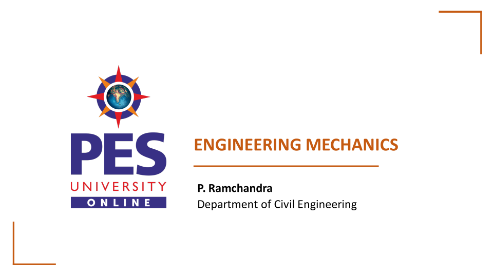
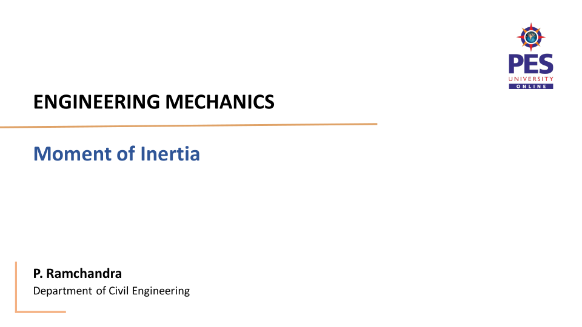
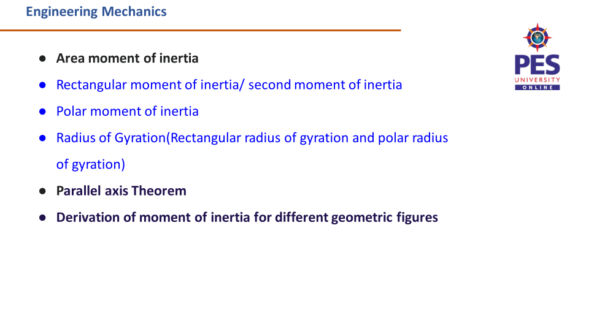
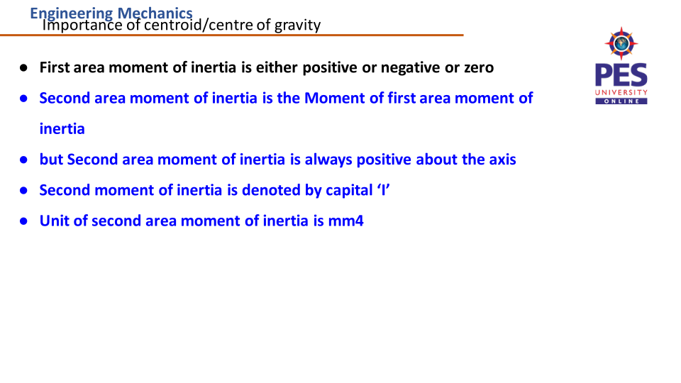
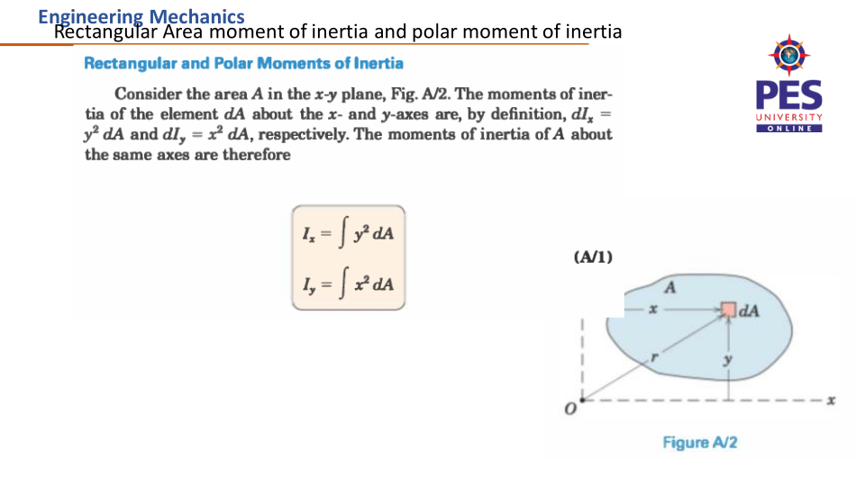
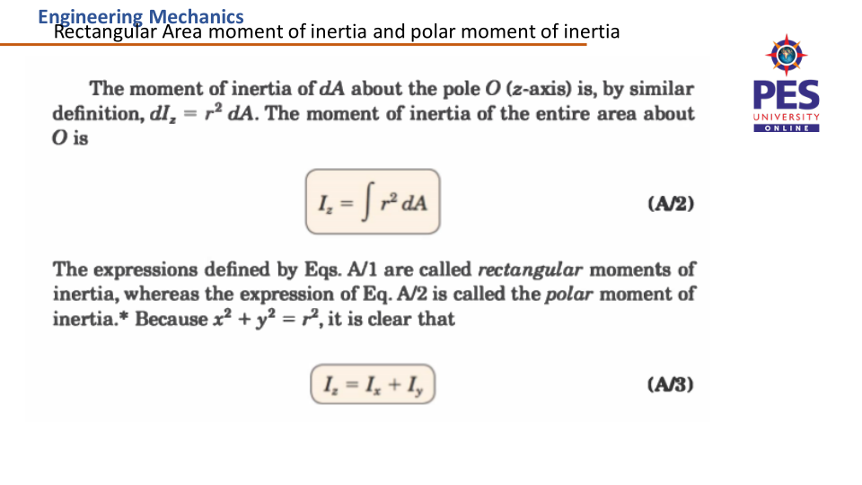
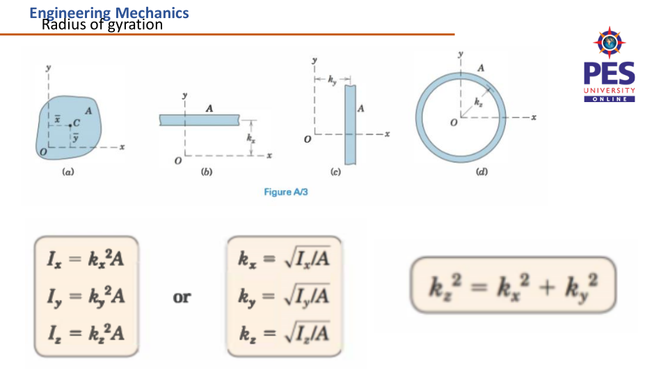
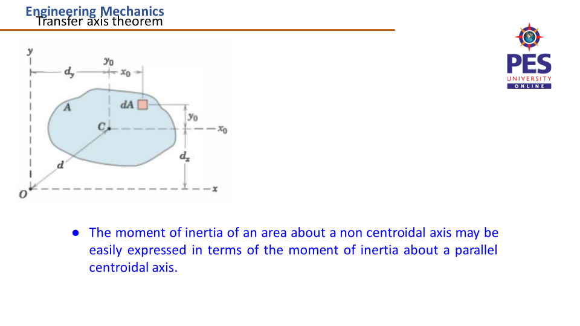
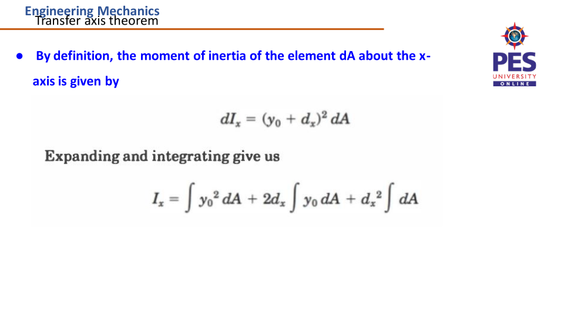

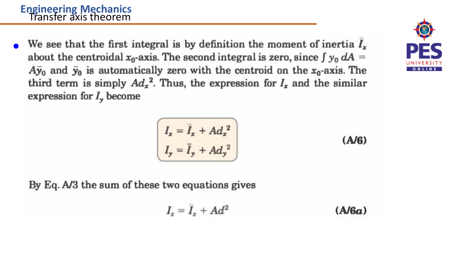
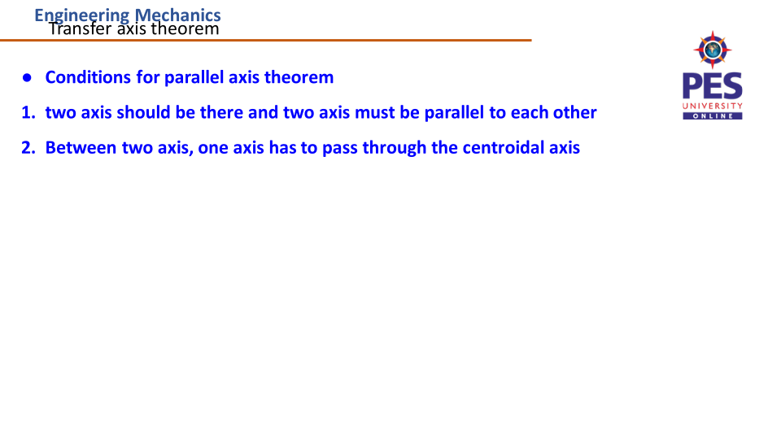
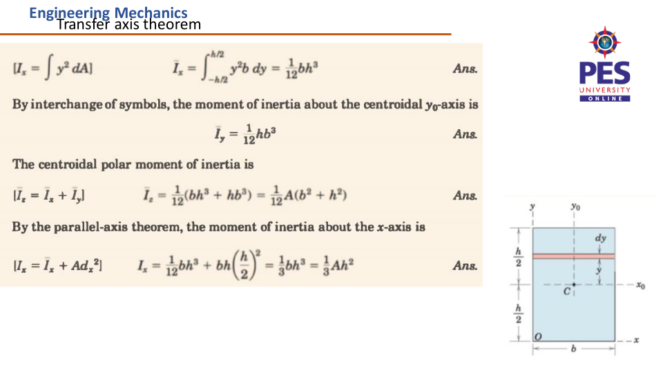
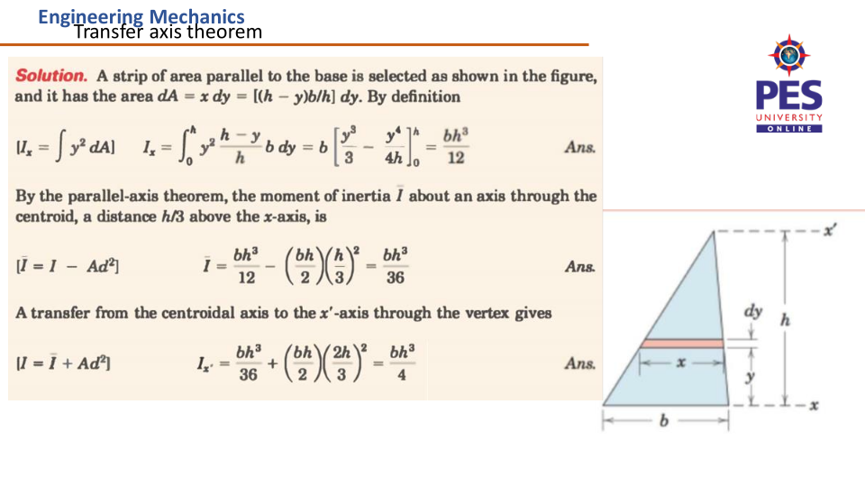

Important points and why
- Source slide page 1 (extracted text): ENGINEERING MECHANICS P. Ramchandra Department of Civil Engineering EV0000210 · EV0000211 · EV0000212
- Source slide page 2 (extracted text): ENGINEERING MECHANICS Moment of Inertia P. Ramchandra Department of Civil Engineering EV0000213 · EV0000214 · EV0000215
- Source slide page 3 (extracted text): Engineering Mechanics ●Area moment of inertia ●Rectangular moment of inertia/ second moment of inertia ●Polar moment of inertia ●Radius of Gyration(Rectangular radius of gyration and polar radius of gyration) ●Parallel axis Theorem ●Derivation of moment of inertia for different geometric figures EV0000216 · EV0000217 · EV0000218
- Source slide page 4 (extracted text): Engineering Mechanics Importance of centroid/centre of gravity ●First area moment of inertia is either positive or negative or zero ●Second area moment of inertia is the Moment of first area moment of inertia ●but Second area moment of inertia is always positive about the axis ●Second moment of inertia is denoted by capital ‘I’ ●Unit of second area moment of inertia is mm4 EV0000219 · EV0000220 · EV0000221
- Source slide page 5 (extracted text): Engineering Mechanics Rectangular Area moment of inertia and polar moment of inertia EV0000222 · EV0000223 · EV0000224
- Source slide page 6 (extracted text): Engineering Mechanics Rectangular Area moment of inertia and polar moment of inertia EV0000225 · EV0000226 · EV0000227
- Source slide page 7 (extracted text): Engineering Mechanics Radius of gyration EV0000228 · EV0000229 · EV0000230
- Source slide page 8 (extracted text): Engineering Mechanics Transfer axis theorem ●The moment of inertia of an area about a non centroidal axis may be easily expressed in terms of the moment of inertia about a parallel centroidal axis. EV0000231 · EV0000232 · EV0000233
- Source slide page 9 (extracted text): Engineering Mechanics Transfer axis theorem ● By definition, the moment of inertia of the element dA about the x- axis is given by EV0000234 · EV0000235 · EV0000236
- Source slide page 10 (extracted text): Engineering Mechanics Transfer axis theorem ● EV0000237 · EV0000238 · EV0000239
- Source slide page 11 (extracted text): Engineering Mechanics Transfer axis theorem ● EV0000240 · EV0000241 · EV0000242
- Source slide page 12 (extracted text): Engineering Mechanics Transfer axis theorem ●Conditions for parallel axis theorem 1. two axis should be there and two axis must be parallel to each other 2. Between two axis, one axis has to pass through the centroidal axis EV0000243 · EV0000244 · EV0000245
- Source slide page 13 (extracted text): Engineering Mechanics Transfer axis theorem EV0000246 · EV0000247 · EV0000248
- Source slide page 14 (extracted text): Engineering Mechanics Transfer axis theorem EV0000249 · EV0000250 · EV0000251
- Source slide page 15 (extracted text): Engineering Mechanics Transfer axis theorem EV0000252 · EV0000253 · EV0000254
- Source slide page 16 (extracted text): ENGINEERING MECHANICS Moment of Inertia EV0000255 · EV0000256 · EV0000257
- Source slide page 17 (extracted text): ENGINEERING MECHANICS Moment of Inertia A/1 Determine the moments of inertia of the rectangular area about the x- and y- axes and find the polar moment of inertia about point 0. EV0000258 · EV0000259 · EV0000260
- Source slide page 18 (extracted text): ENGINEERING MECHANICS Moment of Inertia EV0000261 · EV0000262 · EV0000263
- Source slide page 19 (extracted text): ENGINEERING MECHANICS Moment of Inertia A/3 The narrow rectangular strip has an area of 300 mm2, and its moment of inertia about the y-axis is 35(103) mm4. Obtain a close approximation to the polar radius of gyration about point 0. EV0000264 · EV0000265 · EV0000266
- Source slide page 20 (extracted text): ENGINEERING MECHANICS Moment of Inertia A/4 Determine the ratio b/h such that Ix = Iy for the area of the isosceles triangle. EV0000267 · EV0000268 · EV0000269
- Source slide page 21 (extracted text): ENGINEERING MECHANICS Moment of Inertia A/6 Determine the polar moments of inertia of the semicircular area about points A and B. EV0000270 · EV0000271 · EV0000272
- Source slide page 22 (extracted text): ENGINEERING MECHANICS Moment of Inertia EV0000273 · EV0000274 · EV0000275
- Source slide page 23 (extracted text): ENGINEERING MECHANICS Moment of Inertia A/7 Determine the moment of inertia of the quarter circular area about the y-axis. EV0000276 · EV0000277 · EV0000278
- Source slide page 24 (extracted text): ENGINEERING MECHANICS Moment of Inertia EV0000279 · EV0000280 · EV0000281
- Source slide page 25 (extracted text): ENGINEERING MECHANICS Moment of Inertia A/9 The moments of inertia of the area A about the parallel p- and p'-axes differ by 15(106) mm4. Compute the area A, which has its centroid at C. EV0000282 · EV0000283 · EV0000284
- Source slide page 26 (extracted text): ENGINEERING MECHANICS Moment of Inertia A/35 Determine the moment of inertia about the x-axis of the square area without and with the central circular hole. EV0000285 · EV0000286 · EV0000287
- Source slide page 27 (extracted text): ENGINEERING MECHANICS Moment of Inertia A/36 Determine the polar moment of inertia of the circular area without and with the central square hole. EV0000288 · EV0000289 · EV0000290
- Source slide page 28 (extracted text): ENGINEERING MECHANICS Moment of Inertia A/37 Calculate the polar radius of gyration of the area of the angle section about point A Note that the width of the legs is small compared with the length of each leg. EV0000291 · EV0000292 · EV0000293
- Source slide page 29 (extracted text): ENGINEERING MECHANICS Moment of Inertia A/38 Calculate the polar radius of gyration of the area of the angle section about point A Note that the width of the legs is small compared with the length of each leg. EV0000294 · EV0000295 · EV0000296
- Source slide page 30 (extracted text): ENGINEERING MECHANICS Moment of Inertia A/39 Calculate the polar radius of gyration of the shaded area about the center 0 of the larger circle. EV0000297 · EV0000298 · EV0000299
- Source slide page 31 (extracted text): ENGINEERING MECHANICS Moment of Inertia A/40 Determine the percent reductions in both area and area moment of inertia about the y-axis caused by removal of the rectangular cutout from the rectangular plate of baseband height h. EV0000300 · EV0000301 · EV0000302
- Source slide page 32 (extracted text): ENGINEERING MECHANICS Moment of Inertia EV0000303 · EV0000304 · EV0000305
- Source slide page 33 (extracted text): ENGINEERING MECHANICS Moment of Inertia A/41 The cross-sectional area of an I-beam has the dimensions shown. Obtain a close approximation to the handbook value of Ix = 385( 106) mm4 by treating the section as being composed of three rectangles. EV0000306 · EV0000307 · EV0000308
- Source slide page 34 (extracted text): ENGINEERING MECHANICS Moment of Inertia A/42 Calculate the moment of inertia of the shaded area about the x-axis. EV0000309 · EV0000310 · EV0000311
- Source slide page 35 (extracted text): ENGINEERING MECHANICS Moment of Inertia A/43 The variable h designates the arbitrary vertical location of the bottom of the rectangular cutout within the rectangular area. Determine the area moment of inertia about the x-axis for (a) h = 1000 mm and (b) h = 1500 mm. EV0000312 · EV0000313 · EV0000314
- Source slide page 36 (extracted text): ENGINEERING MECHANICS Moment of Inertia A/44 The variable h designates the arbitrary vertical location of the center of the circular cutout within the semicircular area. Determine the area moment of inertia about the x-axis for (a) h = 0 and (b) h = R/2. EV0000315 · EV0000316 · EV0000317
- Source slide page 37 (extracted text): ENGINEERING MECHANICS Moment of Inertia A/45 Calculate the moment of inertia of the shaded area about the x-axis. EV0000318 · EV0000319 · EV0000320
- Source slide page 38 (extracted text): ENGINEERING MECHANICS Moment of Inertia A/46 Determine the moments of inertia of the shaded area about the x- and y-axes. EV0000321 · EV0000322 · EV0000323
- Source slide page 39 (extracted text): ENGINEERING MECHANICS Moment of Inertia A/48 Determine the moments of inertia of the Z-section about its centroidal xo- and yo-axes. EV0000324 · EV0000325 · EV0000326
- Source slide page 40 (extracted text): ENGINEERING MECHANICS Moment of Inertia A/49 Determine the moment of inertia of the shaded area about the x-axis in two different ways. EV0000327 · EV0000328 · EV0000329
- Source slide page 41 (extracted text): THANK YOU P. Ramchandra Department of Civil Engineering ramachandrap@pes.edu +91 9845347257 Extn 736 EV0000330 · EV0000331 · EV0000332
15Source slide deck: UE20CV101 UNIT 4 SESSION 6
This entry preserves the complete slide deck titled UE20CV101 UNIT 4 SESSION 6 as searchable extracted page text and page-faithful rendered images. Its association with a particular video is not confirmed; it remains a separate topic under Engineering Mechanics 1, Unit_04, to avoid an unsupported match. EV0000402 · EV0000403
Graphs and diagrams

Important points and why
- Source slide page 1 (extracted text): ENGINEERING MECHANICS - STATICS Rashmi B A Department of Civil Engineering EV0000402 · EV0000403 · EV0000404
- Source slide page 2 (extracted text): ENGINEERING MECHANICS - STATICS DISTRIBUTED FORCES Session- 6 Rashmi B A Department of Civil Engineering EV0000405 · EV0000406 · EV0000407
- Source slide page 3 (extracted text): ENGINEERING MECHANICS - STATICS Moment of Inertia Moment of Inertia of a rectangular lamina about its centroidal axis EV0000408 · EV0000409 · EV0000410
- Source slide page 4 (extracted text): ENGINEERING MECHANICS - STATICS Moment of Inertia Moment of Inertia of a semi Circle about its centroidal axis EV0000411 · EV0000412 · EV0000413
- Source slide page 5 (extracted text): ENGINEERING MECHANICS - STATICS Moment of Inertia Moment of Inertia of a Quarter Circle about its centroidal axis EV0000414 · EV0000415 · EV0000416
- Source slide page 6 (extracted text): THANK YOU Rashmi B A Department of Civil Engineering rashmiba@pes.edu EV0000417 · EV0000418 · EV0000419
16Source slide deck: UE20CV101 UNIT 4 SESSION 11
This entry preserves the complete slide deck titled UE20CV101 UNIT 4 SESSION 11 as searchable extracted page text and page-faithful rendered images. Its association with a particular video is not confirmed; it remains a separate topic under Engineering Mechanics 1, Unit_04, to avoid an unsupported match. EV0000444 · EV0000445
Graphs and diagrams

Important points and why
- Source slide page 1 (extracted text): ENGINEERING MECHANICS - STATICS Rashmi B A Department of Civil Engineering EV0000444 · EV0000445 · EV0000446
- Source slide page 2 (extracted text): ENGINEERING MECHANICS - STATICS DISTRIBUTED FORCES Session- 11 Rashmi B A Department of Civil Engineering EV0000447 · EV0000448 · EV0000449
- Source slide page 3 (extracted text): ENGINEERING MECHANICS - STATICS Moment of Inertia: Numerical Problem A/44. Determine the moments of inertia of the Z-section about its centroidal 𝑥𝑜- and 𝑦𝑜-axes. EV0000450 · EV0000451 · EV0000452
- Source slide page 4 (extracted text): ENGINEERING MECHANICS - STATICS Moment of Inertia: Numerical SOLUTION: Moment of Inertia about centroidal x-axis: = MI of rectangle (1) + MI of rectangle (2) + MI of rectangle (3) 𝑏ℎ3 𝑏ℎ3 𝑏ℎ3 = + 𝑎𝑑2 + + + 𝑎𝑑2 12 12 12 80(20)3 20(160)3 = + 80 𝑋20 (70)2 + + 12 12 80(20)3 + 80 𝑋20 (70)2 12 = 7893333 + 6826666 + 7893333 = 22613332 𝑚𝑚4 𝑚𝑚4 𝐼𝑥𝑜= 22613332 EV0000453 · EV0000454 · EV0000455
- Source slide page 5 (extracted text): ENGINEERING MECHANICS - STATICS Moment of Inertia: Numerical SOLUTION: Moment of Inertia about centroidal y -axis: = MI of rectangle (1) + MI of rectangle (2) + MI of rectangle (3) ℎ𝑏3 ℎ𝑏3 ℎ𝑏3 = + 𝑎𝑑2 + + + 𝑎𝑑2 12 12 12 20(80)3 160(20)3 = + 80 𝑋20 (50)2 + + 12 12 20(80)3 + 80 𝑋20 (50)2 12 = 4853333.33 + 106666.67 + 4853333.33 = 22613332 𝑚𝑚4 𝑚𝑚4 𝐼𝑥𝑜= 9813333 EV0000456 · EV0000457 · EV0000458
- Source slide page 6 (extracted text): THANK YOU Rashmi B A Department of Civil Engineering rashmiba@pes.edu EV0000459 · EV0000460 · EV0000461
17Source slide deck: UE20CV101 UNIT 4 SESSION 12
This entry preserves the complete slide deck titled UE20CV101 UNIT 4 SESSION 12 as searchable extracted page text and page-faithful rendered images. Its association with a particular video is not confirmed; it remains a separate topic under Engineering Mechanics 1, Unit_04, to avoid an unsupported match. EV0000462 · EV0000463
Graphs and diagrams

Important points and why
- Source slide page 1 (extracted text): ENGINEERING MECHANICS - STATICS Rashmi B A Department of Civil Engineering EV0000462 · EV0000463 · EV0000464
- Source slide page 2 (extracted text): ENGINEERING MECHANICS - STATICS DISTRIBUTED FORCES Session- 12 Rashmi B A Department of Civil Engineering EV0000465 · EV0000466 · EV0000467
- Source slide page 3 (extracted text): ENGINEERING MECHANICS - STATICS Moment of Inertia: Numerical Problem A/60. Calculate the polar radius of gyration of the shaded area about its centroid C. EV0000468 · EV0000469 · EV0000470
- Source slide page 4 (extracted text): ENGINEERING MECHANICS - STATICS Moment of Inertia: Numerical Problem A/60. Calculate the polar radius of gyration of the shaded area about its centroid C. Solution: Due to symmetry ҧ𝑥= 250 𝑚𝑚 σ 𝑎𝑖𝑦𝑖 ത𝑦= = 250 𝑚𝑚 𝐴 51.26 × 108 𝑚𝑚4 𝐼𝑥𝑜= 51.26 × 108 𝑚𝑚4 𝐼𝑦𝑜= 102.52 × 108 𝑚𝑚4 𝐼𝑧𝑜= 𝐴= 150000 𝑚𝑚2 𝐾𝑧= 𝐼𝑧/𝐴= 261.43 𝑚𝑚 EV0000471 · EV0000472 · EV0000473
- Source slide page 5 (extracted text): THANK YOU Rashmi B A Department of Civil Engineering rashmiba@pes.edu EV0000474 · EV0000475 · EV0000476
18Source slide deck: UE26ME142A Unit 4 class 53 Lecture PPT
This entry preserves the complete slide deck titled UE26ME142A Unit 4 class 53 Lecture PPT as searchable extracted page text and page-faithful rendered images. Its association with a particular video is not confirmed; it remains a separate topic under Engineering Mechanics 1, Unit_04, to avoid an unsupported match. EV0000477 · EV0000478
Graphs and diagrams
Important points and why
- Source slide page 1: no readable `.slides.md` text was extracted. The original rendered page is included as the adjacent source figure for visual inspection. EV0000477 · EV0000478 · EV0000479
- Source slide page 2 (extracted text): Engineering Mechanics Statics EIGHTH Edition SI Version J. L. Meriam and L. G. Kraige Unit 4 Moment of Inertia & Friction Chapter 6 Friction Copyright © 2012 by John Wiley & Sons, Inc. All rights reserved. S V Venkatesh - Engineering Mechanics – Unit 4 – Chapter 6– Friction EV0000480 · EV0000481 · EV0000482
- Source slide page 3 (extracted text): Engineering Mechanics Statics Course Contents: UNIT 4 : Friction Introduction, Frictional Phenomena - Types of Friction, Dry Friction, Fluid Friction, Internal Friction, Mechanism of Dry Friction, Static Friction, Kinetic Friction, Friction Angles, Factors Affecting Friction, Numerical involving bodies placed on Horizontal surfaces and inclined Surface, 3 S V Venkatesh - Engineering Mechanics – Unit 4 – Chapter 6– Friction EV0000483 · EV0000484 · EV0000485
- Source slide page 4 (extracted text): Engineering Mechanics Statics Syllabus – Text book : UNIT IV Page No – 331 - 337 CHAPTER 6 (Text book): 6/1, 6/2, 6/3, 6/8 4 S V Venkatesh - Engineering Mechanics – Unit 4 – Chapter 6– Friction Numerical problems. EV0000486 · EV0000487 · EV0000488
- Source slide page 5 (extracted text): Engineering Mechanics Statics Introduction: Frictional Phenomena Types of Friction •Dry Friction – Unlubricated – two solids –Coulomb friction •Fluid Friction – adjacent layers in a fluid •Internal Friction – solids subjected to cyclical loading 5 S V Venkatesh - Engineering Mechanics – Unit 4 – Chapter 6– Friction EV0000489 · EV0000490 · EV0000491
- Source slide page 6 (extracted text): Engineering Mechanics Statics Dry Friction: Dry Friction Angle of Friction tanα = F/N µs = Fmax / N µk = Fk / N 6 S V Venkatesh - Engineering Mechanics – Unit 4 – Chapter 6– Friction EV0000492 · EV0000493 · EV0000494
- Source slide page 7 (extracted text): Engineering Mechanics Statics Cone of friction: 7 S V Venkatesh - Engineering Mechanics – Unit 4 – Chapter 6– Friction EV0000495 · EV0000496 · EV0000497
- Source slide page 8 (extracted text): Engineering Mechanics Statics Types of Friction Problems: Types of Friction Problems – 3 types 1.In the firsttypeofproblem, The condition of impending motion is known to exist. Here a body which is in equilibrium is on the verge of slipping, and the friction force equals the limiting static friction Fmax = µsN. The equations of equilibrium will, of course, alsohold. 8 S V Venkatesh - Engineering Mechanics – Unit 4 – Chapter 6– Friction EV0000498 · EV0000499 · EV0000500
- Source slide page 9 (extracted text): Engineering Mechanics Statics Types of Friction Problems: 2. In the secondtypeofproblem, Neither the condition of impending motion nor the condition of motion is known to exist. To determine the actual friction conditions, we first assume static equilibrium and then solve for the friction force F necessary for equilibrium. Three outcomes are possible: (a) F < (Fmax = µsN): Here the friction force necessary for equilibrium can be supported, and therefore the body is in static equilibrium as assumed. One has to emphasize that the actual 9 S V Venkatesh - Engineering Mechanics – Unit 4 – Chapter 6– Friction friction force FislessthanthelimitingvalueFmax EV0000501 · EV0000502 · EV0000503
- Source slide page 10 (extracted text): Engineering Mechanics Statics Types of Friction Problems: 2. In the second type of problem (Cont…) (b)F =(Fmax=µsN):Sincethefrictionforce F is at its maximum value Fmax, motion impends, as discussed in problem type (1). The assumption of static equilibrium is valid. (c)F>(Fmax=µsN):Clearlythisconditionis impossible, because the surfaces cannot support more force than the maximum µsN. The assumption of equilibrium is therefore 10 S V Venkatesh - Engineering Mechanics – Unit 4 – Chapter 6– Friction invalid and motion occurs The friction force EV0000504 · EV0000505 · EV0000506
- Source slide page 11 (extracted text): Engineering Mechanics Statics Types of Friction Problems: 3. In the thirdtypeofproblem, Relative motion is known to exist between the contacting surfaces, and thus the kinetic coefficient of friction clearly applies. For this problem type, Fk = µkN always gives the kinetic friction force directly. 11 S V Venkatesh - Engineering Mechanics – Unit 4 – Chapter 6– Friction EV0000507 · EV0000508 · EV0000509
- Source slide page 12 (extracted text): Engineering Mechanics Statics Angle of Repose : Angle of repose Engineering Mechanics Statics - S V Venkatesh - Department of Civil 12 Engineering, PESU ## Page / slide 13 (OCR) THANK YOU Dr. S V PES Venkatesh Civil Engineering Department of S & H UNIVERSITY CELEBRATING 5O YEARS EV0000510
- Source slide page 13: no readable `.slides.md` text was extracted. The original rendered page is included as the adjacent source figure for visual inspection. EV0000511
19Source slide deck: UE20CV101 UNIT 5 SESSION 2
This entry preserves the complete slide deck titled UE20CV101 UNIT 5 SESSION 2 as searchable extracted page text and page-faithful rendered images. Its association with a particular video is not confirmed; it remains a separate topic under Engineering Mechanics 1, Unit_04, to avoid an unsupported match. EV0000512 · EV0000513
Graphs and diagrams


Important points and why
- Source slide page 1 (extracted text): ENGINEERING MECHANICS - STATICS Rashmi B A Department of Civil Engineering EV0000512 · EV0000513 · EV0000514
- Source slide page 2 (extracted text): ENGINEERING MECHANICS - STATICS FRICTION Session- 2 Rashmi B A Department of Civil Engineering EV0000515 · EV0000516 · EV0000517
- Source slide page 3 (extracted text): ENGINEERING MECHANICS - STATICS Friction Angle of repose 𝜽 EV0000518 · EV0000519 · EV0000520
- Source slide page 4 (extracted text): ENGINEERING MECHANICS - STATICS Friction 𝑾 𝜽 Angle of repose 𝒚 𝒙 Applying the conditions of equilibrium: σ 𝐹𝑥= 0 −𝑊sin 𝜃+ 𝐹= 0 𝑭 𝑵 𝐹= 𝑊sin 𝜃−−−(1) σ 0 −𝑊cos 𝜃+𝑁= 0 𝐹𝑦= 𝜽 𝑁= 𝑊𝑐𝑜𝑠𝜃−−−(2) 𝑤ℎ𝑒𝑛𝑡ℎ𝑒𝑚𝑜𝑡𝑖𝑜𝑛𝑖𝑠𝑖𝑚𝑝𝑒𝑛𝑑𝑖𝑛𝑔𝐹𝑟𝑖𝑐𝑡𝑖𝑜𝑛𝑎𝑙𝑓𝑜𝑟𝑐𝑒𝑤𝑖𝑙𝑙𝑏𝑒 𝐹𝑚𝑎𝑥= 𝜇𝑠𝑁( 𝑠𝑢𝑏𝑠𝑡𝑖𝑡𝑢𝑡𝑖𝑛𝑔𝑖𝑛1 𝜇𝑠𝑁= 𝑊sin 𝜃 from (2) 𝜇𝑠𝑊𝑐𝑜𝑠(𝜃) = 𝑊sin 𝜃 𝜇𝑠= tan(𝜃𝑚𝑎𝑥) 𝜃𝑚𝑎𝑥= tan−1(𝜇𝑠) EV0000521 · EV0000522 · EV0000523
- Source slide page 5 (extracted text): ENGINEERING MECHANICS - STATICS Friction Problem 6/1: The force P is applied to the 90-kg crate, which is stationary before the force is applied. Determine the magnitude and direction of the friction force F exerted by the horizontal surface on the crate if (a) P = 300 N, (b) P = 400 N, and (c) P = 500 N. EV0000524 · EV0000525 · EV0000526
- Source slide page 6 (extracted text): ENGINEERING MECHANICS - STATICS Friction Problem 6/1: Solution (a) When P = 300 N σ 𝐹𝑥= 0 𝑃−𝐹= 0 𝐹= 300 𝑁 W= 90 X 9.81 N σ 𝐹𝑦= 0 −90 × 9.81 + 𝑁= 0 𝑁= 882.9 𝑁 𝐹𝑚𝑎𝑥= 𝜇𝑠𝑁 = 0.5 𝑁= 441.45 𝑁 S𝑖𝑛𝑐𝑒𝐹< 𝐹𝑚𝑎𝑥, F 𝑭= 𝟑𝟎𝟎𝑵𝑳𝒆𝒇𝒕 N EV0000527 · EV0000528 · EV0000529
- Source slide page 7 (extracted text): ENGINEERING MECHANICS - STATICS Friction Problem 6/1: Solution (b) P = 400 N σ 𝐹𝑥= 0 𝑃−𝐹= 0 𝐹= 400 𝑁 W= 90 X 9.81 N σ 𝐹𝑦= 0 −90 × 9.81 + 𝑁= 0 𝑁= 882.9 𝑁 𝐹𝑚𝑎𝑥= 𝜇𝑠𝑁 = 0.5 𝑁= 441.45 𝑁 F S𝑖𝑛𝑐𝑒𝐹< 𝐹𝑚𝑎𝑥 𝑭= 𝟒𝟎𝟎𝑵𝑳𝒆𝒇𝒕 N EV0000530 · EV0000531 · EV0000532
- Source slide page 8 (extracted text): ENGINEERING MECHANICS - STATICS Friction Problem 6/1: Solution (c) P = 500 N σ 𝐹𝑥= 0 𝑃−𝐹= 0 𝐹= 500 𝑁 W= 90 X 9.81 N σ 𝐹𝑦= 0 −90 × 9.81 + 𝑁= 0 𝑁= 882.9 𝑁 𝐹𝑚𝑎𝑥= 𝜇𝑠𝑁 = 0.5 𝑁= 441.45 𝑁 S𝑖𝑛𝑐𝑒𝐹> 𝐹𝑚𝑎𝑥, clearly the condition is impossible,themotionoccurs F The frictional force F = 𝜇𝑘𝑁= 0.4 882.9 N 𝑭= 𝟑𝟓𝟑. 𝟐𝑵𝒍𝒆𝒇𝒕 EV0000533 · EV0000534 · EV0000535
- Source slide page 9 (extracted text): THANK YOU Rashmi B A Department of Civil Engineering rashmiba@pes.edu EV0000536 · EV0000537 · EV0000538
20Source slide deck: UE20CV101 UNIT 5 SESSION 3
This entry preserves the complete slide deck titled UE20CV101 UNIT 5 SESSION 3 as searchable extracted page text and page-faithful rendered images. Its association with a particular video is not confirmed; it remains a separate topic under Engineering Mechanics 1, Unit_04, to avoid an unsupported match. EV0000563 · EV0000564
Graphs and diagrams


Important points and why
- Source slide page 1 (extracted text): ENGINEERING MECHANICS - STATICS Rashmi B A Department of Civil Engineering EV0000563 · EV0000564 · EV0000565
- Source slide page 2 (extracted text): ENGINEERING MECHANICS - STATICS FRICTION Session- 3 Rashmi B A Department of Civil Engineering EV0000566 · EV0000567 · EV0000568
- Source slide page 3 (extracted text): ENGINEERING MECHANICS - STATICS Friction- Numerical Problem 6/3: The force P is applied to the 50-kg block when it is at rest. Determine the magnitude and direction of the friction force exerted by the surface on the block if (a) P = 0, (b) P = 200 N, and (c) P = 250 N. (d) What value of P is required to initiate motion up the incline? The coefficients of static and kinetic friction between the block and the incline are 𝜇𝑠= 0.25 and 𝜇𝐾= 0.20, respectively. EV0000569 · EV0000570 · EV0000571
- Source slide page 4 (extracted text): ENGINEERING MECHANICS - STATICS Friction- Numerical Problem 6/3:Solution (a) when P=0 σ 𝐹𝑦= 0 −50 × 9.81 cos 15 + 𝑁= 0 𝑁= 473.78 𝑁 W σ 𝐹𝑥= 0 −50 × 9.81 sin(15) + 𝐹= 0 𝐹= 126.95 𝑁 𝐹𝑚𝑎𝑥= 𝜇𝑠𝑁= 0.25 𝑁= 118.44 𝑁 S𝑖𝑛𝑐𝑒𝐹> 𝐹𝑚𝑎𝑥, clearlytheconditionisimpossible,themotionoccurs downtheplane. The frictional force F = 𝜇𝑘𝑁= 0.2 473.78 𝐅= 𝟗𝟒. 𝟕𝟓𝑵𝒖𝒑𝒕𝒉𝒆𝒑𝒍𝒂𝒏𝒆 EV0000572 · EV0000573 · EV0000574
- Source slide page 5 (extracted text): ENGINEERING MECHANICS - STATICS Friction- Numerical Problem 6/3:Solution (b) when P=200 N σ 𝐹𝑦= 0 −50 × 9.81 cos 15 + 𝑁+ 𝑃sin(20) = 0 𝑁= 542.2 𝑁 W −50 × 9.81 sin 15 −𝐹+ 𝑃cos(20) = 0 σ 𝐹𝑥= 0 𝐹= 60.99 𝑁 𝑊𝐾𝑇, 𝐹𝑚𝑎𝑥= 𝜇𝑠𝑁= 0.25 𝑁= 135.55 𝑁 𝑠𝑖𝑛𝑐𝑒𝐹< 𝐹𝑚𝑎𝑥, bodyisunderrest. 𝑭= 𝟔𝟎. 𝟗𝟗𝑵𝒅𝒐𝒘𝒏𝒕𝒉𝒆𝒑𝒍𝒂𝒏𝒆 EV0000575 · EV0000576 · EV0000577
- Source slide page 6 (extracted text): ENGINEERING MECHANICS - STATICS Friction- Numerical Problem 6/3:Solution (C) when P=250 N σ 𝐹𝑦= 0 −50 × 9.81 cos 15 + 𝑁+ 𝑃sin(20) = 0 𝑁= 559.3 𝑁 W σ 𝐹𝑥= 0 −50 × 9.81 sin 15 −𝐹+ 𝑃cos(20) = 0 𝐹= 107.97 𝑁 𝑊𝐾𝑇, 𝐹𝑚𝑎𝑥= 𝜇𝑠𝑁= 0.25 𝑁= 135.55 𝑁 𝑠𝑖𝑛𝑐𝑒𝐹< 𝐹𝑚𝑎𝑥, bodyisunderrest. 𝑭= 𝟏𝟎𝟕. 𝟗𝟓𝑵𝒅𝒐𝒘𝒏𝒕𝒉𝒆𝒑𝒍𝒂𝒏𝒆 EV0000578 · EV0000579 · EV0000580
- Source slide page 7 (extracted text): ENGINEERING MECHANICS - STATICS Friction- Numerical Problem 6/3:Solution (d) when P=? Motion up the incline σ 𝐹𝑦= 0 −50 × 9.81 cos 15 + 𝑁+ 𝑃sin(20) = 0 𝑁+ 0.342𝑃−473.78 = 0 −−−(1) W σ 𝐹𝑥= 0 −50 × 9.81 sin 15 −𝐹+ 𝑃cos(20) = 0 −0.2 𝑁+ 0.94𝑃−126.95 = 0 −−−(2) from e𝑞𝑢𝑎𝑡𝑖𝑜𝑛1 & 2 𝑷= 𝟐𝟑𝟗. 𝟑𝑵 EV0000581 · EV0000582 · EV0000583
- Source slide page 8 (extracted text): ENGINEERING MECHANICS - STATICS Friction- Numerical • Problem 6/6: Determine the minimum coefficient of static friction μ𝑠which will allow the drum with fixed inner hub to be rolled up the 15° incline at a steady speed without slipping. What are the corresponding values of the force P and the friction force F? EV0000584 · EV0000585 · EV0000586
- Source slide page 9 (extracted text): ENGINEERING MECHANICS - STATICS Friction- Numerical Problem 6/6: Solution 𝑨𝒑𝒑𝒍𝒚𝒊𝒏𝒈𝒕𝒉𝒆𝒄𝒐𝒏𝒅𝒊𝒕𝒊𝒐𝒏𝒔𝒐𝒇𝒆𝒒𝒖𝒊𝒍𝒊𝒃𝒓𝒊𝒖𝒎 𝑟 σ 0 + 𝐹(𝑟) −𝑃𝑐𝑜𝑠15 = 0 W 𝑀𝑜= 2 F = 0.483 𝑃 σ 𝐹𝑥= 0 + 𝐹−𝑊𝑠𝑖𝑛15 + 𝑃cos(15) = 0 P = 0.1786 𝑚𝑔 σ 𝐹𝑦= 0 −W cos 15 + 𝑁+ 𝑃sin(15) = 0 𝑁= 0.919 𝑚𝑔 𝑭 𝝁𝒔= 𝑵= 𝟎. 𝟎𝟗𝟒 EV0000587 · EV0000588 · EV0000589
- Source slide page 10 (extracted text): THANK YOU Rashmi B A Department of Civil Engineering rashmiba@pes.edu EV0000590 · EV0000591 · EV0000592
21Source slide deck: UE20CV101 UNIT 5 SESSION 6
This entry preserves the complete slide deck titled UE20CV101 UNIT 5 SESSION 6 as searchable extracted page text and page-faithful rendered images. Its association with a particular video is not confirmed; it remains a separate topic under Engineering Mechanics 1, Unit_04, to avoid an unsupported match. EV0000617 · EV0000618
Graphs and diagrams


Important points and why
- Source slide page 1 (extracted text): ENGINEERING MECHANICS - STATICS Rashmi B A Department of Civil Engineering EV0000617 · EV0000618 · EV0000619
- Source slide page 2 (extracted text): ENGINEERING MECHANICS - STATICS FRICTION- Numerical Session- 6 Rashmi B A Department of Civil Engineering EV0000620 · EV0000621 · EV0000622
- Source slide page 3 (extracted text): ENGINEERING MECHANICS - STATICS Friction- Numerical • 6/33 Determine the distance s to which the 90-kg painter can climb without causing the 4-m ladder to slip at its lower end A. The top of the 15-kg ladder has a small roller, and at the ground the coefficient of static friction is 0.25. The mass center of the painter is directly above her feet. EV0000623 · EV0000624 · EV0000625
- Source slide page 4 (extracted text): ENGINEERING MECHANICS - STATICS Friction- Numerical 1.5 𝜃= cos −1 = 67.97 NB 4 𝐶𝐵= 3.708 𝑚𝑚 𝑪𝒐𝒏𝒔𝒊𝒅𝒆𝒓𝒊𝒏𝒈𝒕𝒉𝒆𝑭𝑩𝑫𝒐𝒇𝒍𝒂𝒅𝒅𝒆𝒓& 𝑨𝒑𝒑𝒍𝒚𝒊𝒏𝒈𝒕𝒉𝒆𝒄𝒐𝒏𝒅𝒊𝒕𝒊𝒐𝒏𝒔𝒐𝒇𝒆𝒒𝒖𝒊𝒍𝒊𝒃𝒓𝒊𝒖𝒎 𝑤𝑒𝑖𝑔ℎ𝑡𝑜𝑓𝑡ℎ𝑒𝑙𝑎𝑑𝑑𝑒𝑟𝑊𝑙= 15 𝑋9.81 = 147.15 𝑁 ∑𝐹𝑥= 0 0.25𝑁𝐴= 𝑁𝐵-------(1) ∑𝐹𝑦= 0 FA C 𝑁𝐴= 𝑊𝑙+ 𝑊𝑚= 1030.05 𝑁 𝑓𝑟𝑜𝑚𝑒𝑞𝑢𝑎𝑡𝑖𝑜𝑛1 𝑁𝐵= 257.512 𝑁 NA ∑𝑀𝐴= 0 −𝑊𝑚(𝑠cos 𝜃) −𝑊𝑙( 2 cos 𝜃) + 𝑁𝐵𝐵𝐶= 0 𝑠= 2.55 𝑚𝑚 EV0000626 · EV0000627 · EV0000628
- Source slide page 5 (extracted text): ENGINEERING MECHANICS - STATICS Friction- Numerical • 6/36. The homogeneous square body is positioned as shown. If the coefficient of static friction at B is 0.40, determine the critical value of the angle θ below which slipping will occur. Neglect friction at A. EV0000629 · EV0000630 · EV0000631
- Source slide page 6 (extracted text): ENGINEERING MECHANICS - STATICS Friction- Numerical Problem 6/36: Solution ∑𝐹𝑥= 0 ∑𝑀𝐵= 0 + 𝑁𝐴cos 30 −0.4 𝑁𝐵= 0 𝑠 𝑠 −𝑚𝑔sin 𝜃 + 𝑚𝑔cos 𝜃 𝑁𝐵= 2.165 𝑁𝐴 2 2 −𝑁𝐴cos 30 𝑠sin 𝜃−𝑁𝐴sin 30 𝑠cos 𝜃= 0 ∑𝐹𝑦= 0 Simplifying the above equation 𝑁𝐴sin 30 + 𝑁𝐵−𝑚𝑔= 0 tan 𝜃= 0.3785 𝑚𝑔 𝑁𝐴= 𝜃= 20.73 2.664 EV0000632 · EV0000633 · EV0000634
- Source slide page 7 (extracted text): THANK YOU Rashmi B A Department of Civil Engineering rashmiba@pes.edu EV0000635 · EV0000636 · EV0000637
ASymbol glossary
| Symbol | Name | Meaning | Appears in |
|---|
BSources, coverage and gaps
| Source | Path | Use |
|---|---|---|
| Official unit catalogue | https://huggingface.co/buckets/alvin3y10/data/tree/pesuc/PESU_Materials/units.json | Official course/unit title and index. |
| CLASS 46 Introduction to Moment of Inertia transcript (JSON) | https://huggingface.co/buckets/alvin3y10/data/tree/pesuc/PESU_Materials/Sem-1/UE26ME142A_Engineering_Mechanics_1/Unit_04/AV_Summaries/046_CLASS_46_Introduction_to_Moment_of_Inertia__f7841a68b028a2d1.transcript.json | Full JSON sidecar. Normalized text similarity to canonical JSON: 1.0000; only the JSON segmentation supplies the displayed timestamps. |
| CLASS 46 Introduction to Moment of Inertia transcript (Markdown) | https://huggingface.co/buckets/alvin3y10/data/tree/pesuc/PESU_Materials/Sem-1/UE26ME142A_Engineering_Mechanics_1/Unit_04/AV_Summaries/046_CLASS_46_Introduction_to_Moment_of_Inertia__f7841a68b028a2d1.transcript.md | Full Markdown sidecar. Normalized text similarity to canonical JSON: 1.0000; only the JSON segmentation supplies the displayed timestamps. |
| CLASS 46 Introduction to Moment of Inertia transcript (plain text) | https://huggingface.co/buckets/alvin3y10/data/tree/pesuc/PESU_Materials/Sem-1/UE26ME142A_Engineering_Mechanics_1/Unit_04/AV_Summaries/046_CLASS_46_Introduction_to_Moment_of_Inertia__f7841a68b028a2d1.transcript.txt | Full plain text sidecar. Normalized text similarity to canonical JSON: 0.9988; only the JSON segmentation supplies the displayed timestamps. |
| CLASS 46 Introduction to Moment of Inertia transcript (SRT) | https://huggingface.co/buckets/alvin3y10/data/tree/pesuc/PESU_Materials/Sem-1/UE26ME142A_Engineering_Mechanics_1/Unit_04/AV_Summaries/046_CLASS_46_Introduction_to_Moment_of_Inertia__f7841a68b028a2d1.srt | Full SRT sidecar. Normalized text similarity to canonical JSON: 1.0000; only the JSON segmentation supplies the displayed timestamps. |
| CLASS 38 Moment of Inertia_ Numerical transcript (JSON) | https://huggingface.co/buckets/alvin3y10/data/tree/pesuc/PESU_Materials/Sem-1/UE26ME142A_Engineering_Mechanics_1/Unit_04/AV_Summaries/048_CLASS_38_Moment_of_Inertia__Numerical__77ab2c76fcd84290.transcript.json | Full JSON sidecar. Normalized text similarity to canonical JSON: 1.0000; only the JSON segmentation supplies the displayed timestamps. |
| CLASS 38 Moment of Inertia_ Numerical transcript (Markdown) | https://huggingface.co/buckets/alvin3y10/data/tree/pesuc/PESU_Materials/Sem-1/UE26ME142A_Engineering_Mechanics_1/Unit_04/AV_Summaries/048_CLASS_38_Moment_of_Inertia__Numerical__77ab2c76fcd84290.transcript.md | Full Markdown sidecar. Normalized text similarity to canonical JSON: 1.0000; only the JSON segmentation supplies the displayed timestamps. |
| CLASS 38 Moment of Inertia_ Numerical transcript (plain text) | https://huggingface.co/buckets/alvin3y10/data/tree/pesuc/PESU_Materials/Sem-1/UE26ME142A_Engineering_Mechanics_1/Unit_04/AV_Summaries/048_CLASS_38_Moment_of_Inertia__Numerical__77ab2c76fcd84290.transcript.txt | Full plain text sidecar. Normalized text similarity to canonical JSON: 0.9985; only the JSON segmentation supplies the displayed timestamps. |
| CLASS 38 Moment of Inertia_ Numerical transcript (SRT) | https://huggingface.co/buckets/alvin3y10/data/tree/pesuc/PESU_Materials/Sem-1/UE26ME142A_Engineering_Mechanics_1/Unit_04/AV_Summaries/048_CLASS_38_Moment_of_Inertia__Numerical__77ab2c76fcd84290.srt | Full SRT sidecar. Normalized text similarity to canonical JSON: 1.0000; only the JSON segmentation supplies the displayed timestamps. |
| CLASS 39 Moment of Inertia_ Numerical transcript (JSON) | https://huggingface.co/buckets/alvin3y10/data/tree/pesuc/PESU_Materials/Sem-1/UE26ME142A_Engineering_Mechanics_1/Unit_04/AV_Summaries/049_CLASS_39_Moment_of_Inertia__Numerical__b51a45df3dcf2238.transcript.json | Full JSON sidecar. Normalized text similarity to canonical JSON: 1.0000; only the JSON segmentation supplies the displayed timestamps. |
| CLASS 39 Moment of Inertia_ Numerical transcript (Markdown) | https://huggingface.co/buckets/alvin3y10/data/tree/pesuc/PESU_Materials/Sem-1/UE26ME142A_Engineering_Mechanics_1/Unit_04/AV_Summaries/049_CLASS_39_Moment_of_Inertia__Numerical__b51a45df3dcf2238.transcript.md | Full Markdown sidecar. Normalized text similarity to canonical JSON: 1.0000; only the JSON segmentation supplies the displayed timestamps. |
| CLASS 39 Moment of Inertia_ Numerical transcript (plain text) | https://huggingface.co/buckets/alvin3y10/data/tree/pesuc/PESU_Materials/Sem-1/UE26ME142A_Engineering_Mechanics_1/Unit_04/AV_Summaries/049_CLASS_39_Moment_of_Inertia__Numerical__b51a45df3dcf2238.transcript.txt | Full plain text sidecar. Normalized text similarity to canonical JSON: 0.9984; only the JSON segmentation supplies the displayed timestamps. |
| CLASS 39 Moment of Inertia_ Numerical transcript (SRT) | https://huggingface.co/buckets/alvin3y10/data/tree/pesuc/PESU_Materials/Sem-1/UE26ME142A_Engineering_Mechanics_1/Unit_04/AV_Summaries/049_CLASS_39_Moment_of_Inertia__Numerical__b51a45df3dcf2238.srt | Full SRT sidecar. Normalized text similarity to canonical JSON: 1.0000; only the JSON segmentation supplies the displayed timestamps. |
| CLASS 40 Moment of Inertia_ Numerical transcript (JSON) | https://huggingface.co/buckets/alvin3y10/data/tree/pesuc/PESU_Materials/Sem-1/UE26ME142A_Engineering_Mechanics_1/Unit_04/AV_Summaries/050_CLASS_40_Moment_of_Inertia__Numerical__0e23de7b877dd375.transcript.json | Full JSON sidecar. Normalized text similarity to canonical JSON: 1.0000; only the JSON segmentation supplies the displayed timestamps. |
| CLASS 40 Moment of Inertia_ Numerical transcript (Markdown) | https://huggingface.co/buckets/alvin3y10/data/tree/pesuc/PESU_Materials/Sem-1/UE26ME142A_Engineering_Mechanics_1/Unit_04/AV_Summaries/050_CLASS_40_Moment_of_Inertia__Numerical__0e23de7b877dd375.transcript.md | Full Markdown sidecar. Normalized text similarity to canonical JSON: 1.0000; only the JSON segmentation supplies the displayed timestamps. |
| CLASS 40 Moment of Inertia_ Numerical transcript (plain text) | https://huggingface.co/buckets/alvin3y10/data/tree/pesuc/PESU_Materials/Sem-1/UE26ME142A_Engineering_Mechanics_1/Unit_04/AV_Summaries/050_CLASS_40_Moment_of_Inertia__Numerical__0e23de7b877dd375.transcript.txt | Full plain text sidecar. Normalized text similarity to canonical JSON: 0.9984; only the JSON segmentation supplies the displayed timestamps. |
| CLASS 40 Moment of Inertia_ Numerical transcript (SRT) | https://huggingface.co/buckets/alvin3y10/data/tree/pesuc/PESU_Materials/Sem-1/UE26ME142A_Engineering_Mechanics_1/Unit_04/AV_Summaries/050_CLASS_40_Moment_of_Inertia__Numerical__0e23de7b877dd375.srt | Full SRT sidecar. Normalized text similarity to canonical JSON: 1.0000; only the JSON segmentation supplies the displayed timestamps. |
| CLASS 41 Moment of Inertia_ Numerical transcript (JSON) | https://huggingface.co/buckets/alvin3y10/data/tree/pesuc/PESU_Materials/Sem-1/UE26ME142A_Engineering_Mechanics_1/Unit_04/AV_Summaries/051_CLASS_41_Moment_of_Inertia__Numerical__465b60d43e569bb9.transcript.json | Full JSON sidecar. Normalized text similarity to canonical JSON: 1.0000; only the JSON segmentation supplies the displayed timestamps. |
| CLASS 41 Moment of Inertia_ Numerical transcript (Markdown) | https://huggingface.co/buckets/alvin3y10/data/tree/pesuc/PESU_Materials/Sem-1/UE26ME142A_Engineering_Mechanics_1/Unit_04/AV_Summaries/051_CLASS_41_Moment_of_Inertia__Numerical__465b60d43e569bb9.transcript.md | Full Markdown sidecar. Normalized text similarity to canonical JSON: 1.0000; only the JSON segmentation supplies the displayed timestamps. |
| CLASS 41 Moment of Inertia_ Numerical transcript (plain text) | https://huggingface.co/buckets/alvin3y10/data/tree/pesuc/PESU_Materials/Sem-1/UE26ME142A_Engineering_Mechanics_1/Unit_04/AV_Summaries/051_CLASS_41_Moment_of_Inertia__Numerical__465b60d43e569bb9.transcript.txt | Full plain text sidecar. Normalized text similarity to canonical JSON: 0.9984; only the JSON segmentation supplies the displayed timestamps. |
| CLASS 41 Moment of Inertia_ Numerical transcript (SRT) | https://huggingface.co/buckets/alvin3y10/data/tree/pesuc/PESU_Materials/Sem-1/UE26ME142A_Engineering_Mechanics_1/Unit_04/AV_Summaries/051_CLASS_41_Moment_of_Inertia__Numerical__465b60d43e569bb9.srt | Full SRT sidecar. Normalized text similarity to canonical JSON: 1.0000; only the JSON segmentation supplies the displayed timestamps. |
| CLASS 51.1 Moment of Inertia_ Numerical transcript (JSON) | https://huggingface.co/buckets/alvin3y10/data/tree/pesuc/PESU_Materials/Sem-1/UE26ME142A_Engineering_Mechanics_1/Unit_04/AV_Summaries/051_CLASS_51.1_Moment_of_Inertia__Numerical__5c991feecd17a895.transcript.json | Full JSON sidecar. Normalized text similarity to canonical JSON: 1.0000; only the JSON segmentation supplies the displayed timestamps. |
| CLASS 51.1 Moment of Inertia_ Numerical transcript (Markdown) | https://huggingface.co/buckets/alvin3y10/data/tree/pesuc/PESU_Materials/Sem-1/UE26ME142A_Engineering_Mechanics_1/Unit_04/AV_Summaries/051_CLASS_51.1_Moment_of_Inertia__Numerical__5c991feecd17a895.transcript.md | Full Markdown sidecar. Normalized text similarity to canonical JSON: 1.0000; only the JSON segmentation supplies the displayed timestamps. |
| CLASS 51.1 Moment of Inertia_ Numerical transcript (plain text) | https://huggingface.co/buckets/alvin3y10/data/tree/pesuc/PESU_Materials/Sem-1/UE26ME142A_Engineering_Mechanics_1/Unit_04/AV_Summaries/051_CLASS_51.1_Moment_of_Inertia__Numerical__5c991feecd17a895.transcript.txt | Full plain text sidecar. Normalized text similarity to canonical JSON: 0.9985; only the JSON segmentation supplies the displayed timestamps. |
| CLASS 51.1 Moment of Inertia_ Numerical transcript (SRT) | https://huggingface.co/buckets/alvin3y10/data/tree/pesuc/PESU_Materials/Sem-1/UE26ME142A_Engineering_Mechanics_1/Unit_04/AV_Summaries/051_CLASS_51.1_Moment_of_Inertia__Numerical__5c991feecd17a895.srt | Full SRT sidecar. Normalized text similarity to canonical JSON: 1.0000; only the JSON segmentation supplies the displayed timestamps. |
| CLASS 51.2 Moment of Inertia_ Numerical transcript (JSON) | https://huggingface.co/buckets/alvin3y10/data/tree/pesuc/PESU_Materials/Sem-1/UE26ME142A_Engineering_Mechanics_1/Unit_04/AV_Summaries/051_CLASS_51.2_Moment_of_Inertia__Numerical__662a876b25afb423.transcript.json | Full JSON sidecar. Normalized text similarity to canonical JSON: 1.0000; only the JSON segmentation supplies the displayed timestamps. |
| CLASS 51.2 Moment of Inertia_ Numerical transcript (Markdown) | https://huggingface.co/buckets/alvin3y10/data/tree/pesuc/PESU_Materials/Sem-1/UE26ME142A_Engineering_Mechanics_1/Unit_04/AV_Summaries/051_CLASS_51.2_Moment_of_Inertia__Numerical__662a876b25afb423.transcript.md | Full Markdown sidecar. Normalized text similarity to canonical JSON: 1.0000; only the JSON segmentation supplies the displayed timestamps. |
| CLASS 51.2 Moment of Inertia_ Numerical transcript (plain text) | https://huggingface.co/buckets/alvin3y10/data/tree/pesuc/PESU_Materials/Sem-1/UE26ME142A_Engineering_Mechanics_1/Unit_04/AV_Summaries/051_CLASS_51.2_Moment_of_Inertia__Numerical__662a876b25afb423.transcript.txt | Full plain text sidecar. Normalized text similarity to canonical JSON: 0.9987; only the JSON segmentation supplies the displayed timestamps. |
| CLASS 51.2 Moment of Inertia_ Numerical transcript (SRT) | https://huggingface.co/buckets/alvin3y10/data/tree/pesuc/PESU_Materials/Sem-1/UE26ME142A_Engineering_Mechanics_1/Unit_04/AV_Summaries/051_CLASS_51.2_Moment_of_Inertia__Numerical__662a876b25afb423.srt | Full SRT sidecar. Normalized text similarity to canonical JSON: 1.0000; only the JSON segmentation supplies the displayed timestamps. |
| CLASS 51.2 Moment of Inertia_ Numerical transcript (JSON) | https://huggingface.co/buckets/alvin3y10/data/tree/pesuc/PESU_Materials/Sem-1/UE26ME142A_Engineering_Mechanics_1/Unit_04/AV_Summaries/051_CLASS_51.2_Moment_of_Inertia__Numerical__91dc2d538980f355.transcript.json | Full JSON sidecar. Normalized text similarity to canonical JSON: 1.0000; only the JSON segmentation supplies the displayed timestamps. |
| CLASS 51.2 Moment of Inertia_ Numerical transcript (Markdown) | https://huggingface.co/buckets/alvin3y10/data/tree/pesuc/PESU_Materials/Sem-1/UE26ME142A_Engineering_Mechanics_1/Unit_04/AV_Summaries/051_CLASS_51.2_Moment_of_Inertia__Numerical__91dc2d538980f355.transcript.md | Full Markdown sidecar. Normalized text similarity to canonical JSON: 1.0000; only the JSON segmentation supplies the displayed timestamps. |
| CLASS 51.2 Moment of Inertia_ Numerical transcript (plain text) | https://huggingface.co/buckets/alvin3y10/data/tree/pesuc/PESU_Materials/Sem-1/UE26ME142A_Engineering_Mechanics_1/Unit_04/AV_Summaries/051_CLASS_51.2_Moment_of_Inertia__Numerical__91dc2d538980f355.transcript.txt | Full plain text sidecar. Normalized text similarity to canonical JSON: 0.9984; only the JSON segmentation supplies the displayed timestamps. |
| CLASS 51.2 Moment of Inertia_ Numerical transcript (SRT) | https://huggingface.co/buckets/alvin3y10/data/tree/pesuc/PESU_Materials/Sem-1/UE26ME142A_Engineering_Mechanics_1/Unit_04/AV_Summaries/051_CLASS_51.2_Moment_of_Inertia__Numerical__91dc2d538980f355.srt | Full SRT sidecar. Normalized text similarity to canonical JSON: 1.0000; only the JSON segmentation supplies the displayed timestamps. |
| CLASS 47 Friction_ Numerical transcript (JSON) | https://huggingface.co/buckets/alvin3y10/data/tree/pesuc/PESU_Materials/Sem-1/UE26ME142A_Engineering_Mechanics_1/Unit_04/AV_Summaries/055_CLASS_47_Friction__Numerical__f6035152d6e2eca8.transcript.json | Full JSON sidecar. Normalized text similarity to canonical JSON: 1.0000; only the JSON segmentation supplies the displayed timestamps. |
| CLASS 47 Friction_ Numerical transcript (Markdown) | https://huggingface.co/buckets/alvin3y10/data/tree/pesuc/PESU_Materials/Sem-1/UE26ME142A_Engineering_Mechanics_1/Unit_04/AV_Summaries/055_CLASS_47_Friction__Numerical__f6035152d6e2eca8.transcript.md | Full Markdown sidecar. Normalized text similarity to canonical JSON: 1.0000; only the JSON segmentation supplies the displayed timestamps. |
| CLASS 47 Friction_ Numerical transcript (plain text) | https://huggingface.co/buckets/alvin3y10/data/tree/pesuc/PESU_Materials/Sem-1/UE26ME142A_Engineering_Mechanics_1/Unit_04/AV_Summaries/055_CLASS_47_Friction__Numerical__f6035152d6e2eca8.transcript.txt | Full plain text sidecar. Normalized text similarity to canonical JSON: 0.9992; only the JSON segmentation supplies the displayed timestamps. |
| CLASS 47 Friction_ Numerical transcript (SRT) | https://huggingface.co/buckets/alvin3y10/data/tree/pesuc/PESU_Materials/Sem-1/UE26ME142A_Engineering_Mechanics_1/Unit_04/AV_Summaries/055_CLASS_47_Friction__Numerical__f6035152d6e2eca8.srt | Full SRT sidecar. Normalized text similarity to canonical JSON: 1.0000; only the JSON segmentation supplies the displayed timestamps. |
| CLASS 48 Friction_ Numerical transcript (JSON) | https://huggingface.co/buckets/alvin3y10/data/tree/pesuc/PESU_Materials/Sem-1/UE26ME142A_Engineering_Mechanics_1/Unit_04/AV_Summaries/056_CLASS_48_Friction__Numerical__6985dd7e23b106ba.transcript.json | Full JSON sidecar. Normalized text similarity to canonical JSON: 1.0000; only the JSON segmentation supplies the displayed timestamps. |
| CLASS 48 Friction_ Numerical transcript (Markdown) | https://huggingface.co/buckets/alvin3y10/data/tree/pesuc/PESU_Materials/Sem-1/UE26ME142A_Engineering_Mechanics_1/Unit_04/AV_Summaries/056_CLASS_48_Friction__Numerical__6985dd7e23b106ba.transcript.md | Full Markdown sidecar. Normalized text similarity to canonical JSON: 1.0000; only the JSON segmentation supplies the displayed timestamps. |
| CLASS 48 Friction_ Numerical transcript (plain text) | https://huggingface.co/buckets/alvin3y10/data/tree/pesuc/PESU_Materials/Sem-1/UE26ME142A_Engineering_Mechanics_1/Unit_04/AV_Summaries/056_CLASS_48_Friction__Numerical__6985dd7e23b106ba.transcript.txt | Full plain text sidecar. Normalized text similarity to canonical JSON: 0.9993; only the JSON segmentation supplies the displayed timestamps. |
| CLASS 48 Friction_ Numerical transcript (SRT) | https://huggingface.co/buckets/alvin3y10/data/tree/pesuc/PESU_Materials/Sem-1/UE26ME142A_Engineering_Mechanics_1/Unit_04/AV_Summaries/056_CLASS_48_Friction__Numerical__6985dd7e23b106ba.srt | Full SRT sidecar. Normalized text similarity to canonical JSON: 1.0000; only the JSON segmentation supplies the displayed timestamps. |
| CLASS 56.1 Friction_ Numerical transcript (JSON) | https://huggingface.co/buckets/alvin3y10/data/tree/pesuc/PESU_Materials/Sem-1/UE26ME142A_Engineering_Mechanics_1/Unit_04/AV_Summaries/056_CLASS_56.1_Friction__Numerical__816881a9ab73e7db.transcript.json | Full JSON sidecar. Normalized text similarity to canonical JSON: 1.0000; only the JSON segmentation supplies the displayed timestamps. |
| CLASS 56.1 Friction_ Numerical transcript (Markdown) | https://huggingface.co/buckets/alvin3y10/data/tree/pesuc/PESU_Materials/Sem-1/UE26ME142A_Engineering_Mechanics_1/Unit_04/AV_Summaries/056_CLASS_56.1_Friction__Numerical__816881a9ab73e7db.transcript.md | Full Markdown sidecar. Normalized text similarity to canonical JSON: 1.0000; only the JSON segmentation supplies the displayed timestamps. |
| CLASS 56.1 Friction_ Numerical transcript (plain text) | https://huggingface.co/buckets/alvin3y10/data/tree/pesuc/PESU_Materials/Sem-1/UE26ME142A_Engineering_Mechanics_1/Unit_04/AV_Summaries/056_CLASS_56.1_Friction__Numerical__816881a9ab73e7db.transcript.txt | Full plain text sidecar. Normalized text similarity to canonical JSON: 0.9991; only the JSON segmentation supplies the displayed timestamps. |
| CLASS 56.1 Friction_ Numerical transcript (SRT) | https://huggingface.co/buckets/alvin3y10/data/tree/pesuc/PESU_Materials/Sem-1/UE26ME142A_Engineering_Mechanics_1/Unit_04/AV_Summaries/056_CLASS_56.1_Friction__Numerical__816881a9ab73e7db.srt | Full SRT sidecar. Normalized text similarity to canonical JSON: 1.0000; only the JSON segmentation supplies the displayed timestamps. |
| CLASS 56.2 Friction_ Numerical transcript (JSON) | https://huggingface.co/buckets/alvin3y10/data/tree/pesuc/PESU_Materials/Sem-1/UE26ME142A_Engineering_Mechanics_1/Unit_04/AV_Summaries/056_CLASS_56.2_Friction__Numerical__59b393edf5066db5.transcript.json | Full JSON sidecar. Normalized text similarity to canonical JSON: 1.0000; only the JSON segmentation supplies the displayed timestamps. |
| CLASS 56.2 Friction_ Numerical transcript (Markdown) | https://huggingface.co/buckets/alvin3y10/data/tree/pesuc/PESU_Materials/Sem-1/UE26ME142A_Engineering_Mechanics_1/Unit_04/AV_Summaries/056_CLASS_56.2_Friction__Numerical__59b393edf5066db5.transcript.md | Full Markdown sidecar. Normalized text similarity to canonical JSON: 1.0000; only the JSON segmentation supplies the displayed timestamps. |
| CLASS 56.2 Friction_ Numerical transcript (plain text) | https://huggingface.co/buckets/alvin3y10/data/tree/pesuc/PESU_Materials/Sem-1/UE26ME142A_Engineering_Mechanics_1/Unit_04/AV_Summaries/056_CLASS_56.2_Friction__Numerical__59b393edf5066db5.transcript.txt | Full plain text sidecar. Normalized text similarity to canonical JSON: 0.9991; only the JSON segmentation supplies the displayed timestamps. |
| CLASS 56.2 Friction_ Numerical transcript (SRT) | https://huggingface.co/buckets/alvin3y10/data/tree/pesuc/PESU_Materials/Sem-1/UE26ME142A_Engineering_Mechanics_1/Unit_04/AV_Summaries/056_CLASS_56.2_Friction__Numerical__59b393edf5066db5.srt | Full SRT sidecar. Normalized text similarity to canonical JSON: 1.0000; only the JSON segmentation supplies the displayed timestamps. |
| Slide page text: UE26ME142A Unit 4 Class 46 Lecture PPT | https://huggingface.co/buckets/alvin3y10/data/tree/pesuc/PESU_Materials/Sem-1/UE26ME142A_Engineering_Mechanics_1/Unit_04/Slides/046_UE26ME142A_Unit_4_Class_46_Lecture_PPT__d02ef87253dca769.slides.md | Complete extracted page text from the bucket's .slides.md sidecar. |
| Alternate extracted slide page text: UE26ME142A Unit 4 Class 46 Lecture PPT | https://huggingface.co/buckets/alvin3y10/data/tree/pesuc/PESU_Materials/Sem-1/UE26ME142A_Engineering_Mechanics_1/Unit_04/Slides/046_UE26ME142A_Unit_4_Class_46_Lecture_PPT__d02ef87253dca769.slides.txt | The bucket's alternate .slides.txt text sidecar; content differences are kept as separate page points. |
| Page-render source for UE26ME142A Unit 4 Class 46 Lecture PPT (converted PDF; original hash ca1b309f28b6be9ea205fed6ee7774af27f38d77c453fa0b5a65e3f2d23a897c) | https://huggingface.co/buckets/alvin3y10/data/tree/pesuc/PESU_Materials/Sem-1/UE26ME142A_Engineering_Mechanics_1/Unit_04/Slides/046_UE26ME142A_Unit_4_Class_46_Lecture_PPT__d02ef87253dca769.ppt | Page inventory and visual source for the rendered original deck; figure pages are derived from this local PDF. The original bucket path/hash are retained in datasets/content-index.json. |
| Slide page text: Moment of Inertia | https://huggingface.co/buckets/alvin3y10/data/tree/pesuc/PESU_Materials/Sem-1/UE26ME142A_Engineering_Mechanics_1/Unit_04/Slides/047_Moment_of_Inertia__e26ad086e9c031a8.slides.md | Complete extracted page text from the bucket's .slides.md sidecar. |
| Alternate extracted slide page text: Moment of Inertia | https://huggingface.co/buckets/alvin3y10/data/tree/pesuc/PESU_Materials/Sem-1/UE26ME142A_Engineering_Mechanics_1/Unit_04/Slides/047_Moment_of_Inertia__e26ad086e9c031a8.slides.txt | The bucket's alternate .slides.txt text sidecar; content differences are kept as separate page points. |
| Page-render source for Moment of Inertia (converted PDF; original hash ef55e97507bbf9e623a96a1497d4f5b6794b13107ee60544f779debc752597d6) | https://huggingface.co/buckets/alvin3y10/data/tree/pesuc/PESU_Materials/Sem-1/UE26ME142A_Engineering_Mechanics_1/Unit_04/Slides/047_Moment_of_Inertia__e26ad086e9c031a8.pdf | Page inventory and visual source for the rendered original deck; figure pages are derived from this local PDF. The original bucket path/hash are retained in datasets/content-index.json. |
| Slide page text: UE20CV101 UNIT 4 SESSION 7 | https://huggingface.co/buckets/alvin3y10/data/tree/pesuc/PESU_Materials/Sem-1/UE26ME142A_Engineering_Mechanics_1/Unit_04/Slides/048_UE20CV101_UNIT_4__SESSION-7__f2f50a6e6cd22401.slides.md | Complete extracted page text from the bucket's .slides.md sidecar. |
| Alternate extracted slide page text: UE20CV101 UNIT 4 SESSION 7 | https://huggingface.co/buckets/alvin3y10/data/tree/pesuc/PESU_Materials/Sem-1/UE26ME142A_Engineering_Mechanics_1/Unit_04/Slides/048_UE20CV101_UNIT_4__SESSION-7__f2f50a6e6cd22401.slides.txt | The bucket's alternate .slides.txt text sidecar; content differences are kept as separate page points. |
| Page-render source for UE20CV101 UNIT 4 SESSION 7 (converted PDF; original hash 7665256b5e60d1a1be44d07d4530addac006f38fb4733be728f3ce43bd09dded) | https://huggingface.co/buckets/alvin3y10/data/tree/pesuc/PESU_Materials/Sem-1/UE26ME142A_Engineering_Mechanics_1/Unit_04/Slides/048_UE20CV101_UNIT_4__SESSION-7__f2f50a6e6cd22401.pdf | Page inventory and visual source for the rendered original deck; figure pages are derived from this local PDF. The original bucket path/hash are retained in datasets/content-index.json. |
| Slide page text: UE20CV101 UNIT 4 SESSION 8 | https://huggingface.co/buckets/alvin3y10/data/tree/pesuc/PESU_Materials/Sem-1/UE26ME142A_Engineering_Mechanics_1/Unit_04/Slides/049_UE20CV101_UNIT_4__SESSION-8__5fafe633aad8a088.slides.md | Complete extracted page text from the bucket's .slides.md sidecar. |
| Alternate extracted slide page text: UE20CV101 UNIT 4 SESSION 8 | https://huggingface.co/buckets/alvin3y10/data/tree/pesuc/PESU_Materials/Sem-1/UE26ME142A_Engineering_Mechanics_1/Unit_04/Slides/049_UE20CV101_UNIT_4__SESSION-8__5fafe633aad8a088.slides.txt | The bucket's alternate .slides.txt text sidecar; content differences are kept as separate page points. |
| Page-render source for UE20CV101 UNIT 4 SESSION 8 (converted PDF; original hash 4dfa190774c94f173d3f82dd2e5df5780141f82e2c71c4843c044a9359c5deb1) | https://huggingface.co/buckets/alvin3y10/data/tree/pesuc/PESU_Materials/Sem-1/UE26ME142A_Engineering_Mechanics_1/Unit_04/Slides/049_UE20CV101_UNIT_4__SESSION-8__5fafe633aad8a088.pdf | Page inventory and visual source for the rendered original deck; figure pages are derived from this local PDF. The original bucket path/hash are retained in datasets/content-index.json. |
| Slide page text: UE20CV101 UNIT 4 SESSION 9 | https://huggingface.co/buckets/alvin3y10/data/tree/pesuc/PESU_Materials/Sem-1/UE26ME142A_Engineering_Mechanics_1/Unit_04/Slides/050_UE20CV101_UNIT_4__SESSION-9__9ddd0b077d481238.slides.md | Complete extracted page text from the bucket's .slides.md sidecar. |
| Alternate extracted slide page text: UE20CV101 UNIT 4 SESSION 9 | https://huggingface.co/buckets/alvin3y10/data/tree/pesuc/PESU_Materials/Sem-1/UE26ME142A_Engineering_Mechanics_1/Unit_04/Slides/050_UE20CV101_UNIT_4__SESSION-9__9ddd0b077d481238.slides.txt | The bucket's alternate .slides.txt text sidecar; content differences are kept as separate page points. |
| Page-render source for UE20CV101 UNIT 4 SESSION 9 (converted PDF; original hash f14d351c141cd10666496c339542589875fdbada8cc7893421832885325cba39) | https://huggingface.co/buckets/alvin3y10/data/tree/pesuc/PESU_Materials/Sem-1/UE26ME142A_Engineering_Mechanics_1/Unit_04/Slides/050_UE20CV101_UNIT_4__SESSION-9__9ddd0b077d481238.pdf | Page inventory and visual source for the rendered original deck; figure pages are derived from this local PDF. The original bucket path/hash are retained in datasets/content-index.json. |
| Slide page text: UE20CV101 UNIT 4 SESSION 6 | https://huggingface.co/buckets/alvin3y10/data/tree/pesuc/PESU_Materials/Sem-1/UE26ME142A_Engineering_Mechanics_1/Unit_04/Slides/051_UE20CV101_UNIT-4__SESSION-6__f8707bcb8798967a.slides.md | Complete extracted page text from the bucket's .slides.md sidecar. |
| Alternate extracted slide page text: UE20CV101 UNIT 4 SESSION 6 | https://huggingface.co/buckets/alvin3y10/data/tree/pesuc/PESU_Materials/Sem-1/UE26ME142A_Engineering_Mechanics_1/Unit_04/Slides/051_UE20CV101_UNIT-4__SESSION-6__f8707bcb8798967a.slides.txt | The bucket's alternate .slides.txt text sidecar; content differences are kept as separate page points. |
| Page-render source for UE20CV101 UNIT 4 SESSION 6 (converted PDF; original hash d58ed7ece2c1005f874e755008057e82e8920f4ddc0764aa78dba4e65d57fceb) | https://huggingface.co/buckets/alvin3y10/data/tree/pesuc/PESU_Materials/Sem-1/UE26ME142A_Engineering_Mechanics_1/Unit_04/Slides/051_UE20CV101_UNIT-4__SESSION-6__f8707bcb8798967a.pdf | Page inventory and visual source for the rendered original deck; figure pages are derived from this local PDF. The original bucket path/hash are retained in datasets/content-index.json. |
| Slide page text: UE20CV101 UNIT 4 SESSION 10 | https://huggingface.co/buckets/alvin3y10/data/tree/pesuc/PESU_Materials/Sem-1/UE26ME142A_Engineering_Mechanics_1/Unit_04/Slides/051_UE20CV101_UNIT_4__SESSION-10__12f7ad3eb0e14cdc.slides.md | Complete extracted page text from the bucket's .slides.md sidecar. |
| Alternate extracted slide page text: UE20CV101 UNIT 4 SESSION 10 | https://huggingface.co/buckets/alvin3y10/data/tree/pesuc/PESU_Materials/Sem-1/UE26ME142A_Engineering_Mechanics_1/Unit_04/Slides/051_UE20CV101_UNIT_4__SESSION-10__12f7ad3eb0e14cdc.slides.txt | The bucket's alternate .slides.txt text sidecar; content differences are kept as separate page points. |
| Page-render source for UE20CV101 UNIT 4 SESSION 10 (converted PDF; original hash 316ff20663c7298b8309dd52cce2181452f92de8de8674062db0522946822a89) | https://huggingface.co/buckets/alvin3y10/data/tree/pesuc/PESU_Materials/Sem-1/UE26ME142A_Engineering_Mechanics_1/Unit_04/Slides/051_UE20CV101_UNIT_4__SESSION-10__12f7ad3eb0e14cdc.pdf | Page inventory and visual source for the rendered original deck; figure pages are derived from this local PDF. The original bucket path/hash are retained in datasets/content-index.json. |
| Slide page text: UE20CV101 UNIT 4 SESSION 11 | https://huggingface.co/buckets/alvin3y10/data/tree/pesuc/PESU_Materials/Sem-1/UE26ME142A_Engineering_Mechanics_1/Unit_04/Slides/051_UE20CV101_UNIT_4__SESSION-11__5012d0aadf26d705.slides.md | Complete extracted page text from the bucket's .slides.md sidecar. |
| Alternate extracted slide page text: UE20CV101 UNIT 4 SESSION 11 | https://huggingface.co/buckets/alvin3y10/data/tree/pesuc/PESU_Materials/Sem-1/UE26ME142A_Engineering_Mechanics_1/Unit_04/Slides/051_UE20CV101_UNIT_4__SESSION-11__5012d0aadf26d705.slides.txt | The bucket's alternate .slides.txt text sidecar; content differences are kept as separate page points. |
| Page-render source for UE20CV101 UNIT 4 SESSION 11 (converted PDF; original hash a71de0e31f23e83e0787551bd98ca1bd39cb7b21d0448651b154a8e0ea2477a2) | https://huggingface.co/buckets/alvin3y10/data/tree/pesuc/PESU_Materials/Sem-1/UE26ME142A_Engineering_Mechanics_1/Unit_04/Slides/051_UE20CV101_UNIT_4__SESSION-11__5012d0aadf26d705.pdf | Page inventory and visual source for the rendered original deck; figure pages are derived from this local PDF. The original bucket path/hash are retained in datasets/content-index.json. |
| Slide page text: UE20CV101 UNIT 4 SESSION 12 | https://huggingface.co/buckets/alvin3y10/data/tree/pesuc/PESU_Materials/Sem-1/UE26ME142A_Engineering_Mechanics_1/Unit_04/Slides/051_UE20CV101_UNIT_4__SESSION-12__b705719c21d2c8f4.slides.md | Complete extracted page text from the bucket's .slides.md sidecar. |
| Alternate extracted slide page text: UE20CV101 UNIT 4 SESSION 12 | https://huggingface.co/buckets/alvin3y10/data/tree/pesuc/PESU_Materials/Sem-1/UE26ME142A_Engineering_Mechanics_1/Unit_04/Slides/051_UE20CV101_UNIT_4__SESSION-12__b705719c21d2c8f4.slides.txt | The bucket's alternate .slides.txt text sidecar; content differences are kept as separate page points. |
| Page-render source for UE20CV101 UNIT 4 SESSION 12 (converted PDF; original hash 9d36774190aac4b8a5689a0965af3aea3acd2a27165f4abaec9a21a209ce4fc0) | https://huggingface.co/buckets/alvin3y10/data/tree/pesuc/PESU_Materials/Sem-1/UE26ME142A_Engineering_Mechanics_1/Unit_04/Slides/051_UE20CV101_UNIT_4__SESSION-12__b705719c21d2c8f4.pdf | Page inventory and visual source for the rendered original deck; figure pages are derived from this local PDF. The original bucket path/hash are retained in datasets/content-index.json. |
| Slide page text: UE26ME142A Unit 4 class 53 Lecture PPT | https://huggingface.co/buckets/alvin3y10/data/tree/pesuc/PESU_Materials/Sem-1/UE26ME142A_Engineering_Mechanics_1/Unit_04/Slides/053_UE26ME142A_Unit_4_class_53-Lecture_PPT__980f9dd97d5e9157.slides.md | Complete extracted page text from the bucket's .slides.md sidecar. |
| Alternate extracted slide page text: UE26ME142A Unit 4 class 53 Lecture PPT | https://huggingface.co/buckets/alvin3y10/data/tree/pesuc/PESU_Materials/Sem-1/UE26ME142A_Engineering_Mechanics_1/Unit_04/Slides/053_UE26ME142A_Unit_4_class_53-Lecture_PPT__980f9dd97d5e9157.slides.txt | The bucket's alternate .slides.txt text sidecar; content differences are kept as separate page points. |
| Page-render source for UE26ME142A Unit 4 class 53 Lecture PPT (converted PDF; original hash 742906e1e1b2d3d2534379c883f30a16d6e881ca1044e876a4042effa759d096) | https://huggingface.co/buckets/alvin3y10/data/tree/pesuc/PESU_Materials/Sem-1/UE26ME142A_Engineering_Mechanics_1/Unit_04/Slides/053_UE26ME142A_Unit_4_class_53-Lecture_PPT__980f9dd97d5e9157.ppt | Page inventory and visual source for the rendered original deck; figure pages are derived from this local PDF. The original bucket path/hash are retained in datasets/content-index.json. |
| Slide page text: UE20CV101 UNIT 5 SESSION 2 | https://huggingface.co/buckets/alvin3y10/data/tree/pesuc/PESU_Materials/Sem-1/UE26ME142A_Engineering_Mechanics_1/Unit_04/Slides/054_UE20CV101_UNIT-5__SESSION-2__65d202baa1c9be91.slides.md | Complete extracted page text from the bucket's .slides.md sidecar. |
| Alternate extracted slide page text: UE20CV101 UNIT 5 SESSION 2 | https://huggingface.co/buckets/alvin3y10/data/tree/pesuc/PESU_Materials/Sem-1/UE26ME142A_Engineering_Mechanics_1/Unit_04/Slides/054_UE20CV101_UNIT-5__SESSION-2__65d202baa1c9be91.slides.txt | The bucket's alternate .slides.txt text sidecar; content differences are kept as separate page points. |
| Page-render source for UE20CV101 UNIT 5 SESSION 2 (converted PDF; original hash 434a3671d2282b9341027f0a6bf8b159030c3daa324760d5cd72fbd4690b1dc6) | https://huggingface.co/buckets/alvin3y10/data/tree/pesuc/PESU_Materials/Sem-1/UE26ME142A_Engineering_Mechanics_1/Unit_04/Slides/054_UE20CV101_UNIT-5__SESSION-2__65d202baa1c9be91.pdf | Page inventory and visual source for the rendered original deck; figure pages are derived from this local PDF. The original bucket path/hash are retained in datasets/content-index.json. |
| Slide page text: UE20CV101 UNIT 5 SESSION 4 | https://huggingface.co/buckets/alvin3y10/data/tree/pesuc/PESU_Materials/Sem-1/UE26ME142A_Engineering_Mechanics_1/Unit_04/Slides/055_UE20CV101_UNIT-5__SESSION-4__e7632168d688ab28.slides.md | Complete extracted page text from the bucket's .slides.md sidecar. |
| Alternate extracted slide page text: UE20CV101 UNIT 5 SESSION 4 | https://huggingface.co/buckets/alvin3y10/data/tree/pesuc/PESU_Materials/Sem-1/UE26ME142A_Engineering_Mechanics_1/Unit_04/Slides/055_UE20CV101_UNIT-5__SESSION-4__e7632168d688ab28.slides.txt | The bucket's alternate .slides.txt text sidecar; content differences are kept as separate page points. |
| Page-render source for UE20CV101 UNIT 5 SESSION 4 (converted PDF; original hash defd460c19a5a7a0156848f7216b87686028436758cec4aba7f952dee1e326ff) | https://huggingface.co/buckets/alvin3y10/data/tree/pesuc/PESU_Materials/Sem-1/UE26ME142A_Engineering_Mechanics_1/Unit_04/Slides/055_UE20CV101_UNIT-5__SESSION-4__e7632168d688ab28.pdf | Page inventory and visual source for the rendered original deck; figure pages are derived from this local PDF. The original bucket path/hash are retained in datasets/content-index.json. |
| Slide page text: UE20CV101 UNIT 5 SESSION 3 | https://huggingface.co/buckets/alvin3y10/data/tree/pesuc/PESU_Materials/Sem-1/UE26ME142A_Engineering_Mechanics_1/Unit_04/Slides/056_UE20CV101_UNIT-5__SESSION-3__f5f42ae0569674bb.slides.md | Complete extracted page text from the bucket's .slides.md sidecar. |
| Alternate extracted slide page text: UE20CV101 UNIT 5 SESSION 3 | https://huggingface.co/buckets/alvin3y10/data/tree/pesuc/PESU_Materials/Sem-1/UE26ME142A_Engineering_Mechanics_1/Unit_04/Slides/056_UE20CV101_UNIT-5__SESSION-3__f5f42ae0569674bb.slides.txt | The bucket's alternate .slides.txt text sidecar; content differences are kept as separate page points. |
| Page-render source for UE20CV101 UNIT 5 SESSION 3 (converted PDF; original hash 9e8880bf871d0e58a2b76c25bf1abdcb842bb6ee1c4e5ef947e5ed3f2c7b17fd) | https://huggingface.co/buckets/alvin3y10/data/tree/pesuc/PESU_Materials/Sem-1/UE26ME142A_Engineering_Mechanics_1/Unit_04/Slides/056_UE20CV101_UNIT-5__SESSION-3__f5f42ae0569674bb.pdf | Page inventory and visual source for the rendered original deck; figure pages are derived from this local PDF. The original bucket path/hash are retained in datasets/content-index.json. |
| Slide page text: UE20CV101 UNIT 5 SESSION 5 | https://huggingface.co/buckets/alvin3y10/data/tree/pesuc/PESU_Materials/Sem-1/UE26ME142A_Engineering_Mechanics_1/Unit_04/Slides/056_UE20CV101_UNIT-5__SESSION-5__03f6ff4c881c01b2.slides.md | Complete extracted page text from the bucket's .slides.md sidecar. |
| Alternate extracted slide page text: UE20CV101 UNIT 5 SESSION 5 | https://huggingface.co/buckets/alvin3y10/data/tree/pesuc/PESU_Materials/Sem-1/UE26ME142A_Engineering_Mechanics_1/Unit_04/Slides/056_UE20CV101_UNIT-5__SESSION-5__03f6ff4c881c01b2.slides.txt | The bucket's alternate .slides.txt text sidecar; content differences are kept as separate page points. |
| Page-render source for UE20CV101 UNIT 5 SESSION 5 (converted PDF; original hash d128c486eada7966fd32e9a673d62895bae54293b5a6b58e496a12c2ff11e6d7) | https://huggingface.co/buckets/alvin3y10/data/tree/pesuc/PESU_Materials/Sem-1/UE26ME142A_Engineering_Mechanics_1/Unit_04/Slides/056_UE20CV101_UNIT-5__SESSION-5__03f6ff4c881c01b2.pdf | Page inventory and visual source for the rendered original deck; figure pages are derived from this local PDF. The original bucket path/hash are retained in datasets/content-index.json. |
| Slide page text: UE20CV101 UNIT 5 SESSION 6 | https://huggingface.co/buckets/alvin3y10/data/tree/pesuc/PESU_Materials/Sem-1/UE26ME142A_Engineering_Mechanics_1/Unit_04/Slides/056_UE20CV101_UNIT-5__SESSION-6__a12f1678f32da358.slides.md | Complete extracted page text from the bucket's .slides.md sidecar. |
| Alternate extracted slide page text: UE20CV101 UNIT 5 SESSION 6 | https://huggingface.co/buckets/alvin3y10/data/tree/pesuc/PESU_Materials/Sem-1/UE26ME142A_Engineering_Mechanics_1/Unit_04/Slides/056_UE20CV101_UNIT-5__SESSION-6__a12f1678f32da358.slides.txt | The bucket's alternate .slides.txt text sidecar; content differences are kept as separate page points. |
| Page-render source for UE20CV101 UNIT 5 SESSION 6 (converted PDF; original hash 23913070dbdd60818ee3f8223fa075a73f2028509abc798885d8c546f6162a45) | https://huggingface.co/buckets/alvin3y10/data/tree/pesuc/PESU_Materials/Sem-1/UE26ME142A_Engineering_Mechanics_1/Unit_04/Slides/056_UE20CV101_UNIT-5__SESSION-6__a12f1678f32da358.pdf | Page inventory and visual source for the rendered original deck; figure pages are derived from this local PDF. The original bucket path/hash are retained in datasets/content-index.json. |
Historical question-source excerpts are shown only when a page has a strong text-based unit match. They are source references, not new solutions or exam predictions.
Known gaps, conflicts and corrections
- 2 rendered pages in 046_UE26ME142A_Unit_4_Class_46_Lecture_PPT__d02ef87253dca769.slides.md have no readable `.slides.md` text; their original page images are included.
- 2 rendered pages in 053_UE26ME142A_Unit_4_class_53-Lecture_PPT__980f9dd97d5e9157.slides.md have no readable `.slides.md` text; their original page images are included.
- No historical archive question page met the unit-match candidate threshold; all subject-level and ambiguous pages remain in datasets/question-archive.json.
- 4 transcript segments have low ASR confidence; they are flagged with timestamps in the transcript blocks and indexed in the corpus.
- This is a visibly labelled source-preservation draft. Human page-level semantic and visual review is not complete; no unsupported subject summary or formula correction is claimed.
- The 19.26 GiB MP4 files remain hosted on Hugging Face; the full video path/hash and transcript coverage are indexed. The full audio/video was not watched end-to-end.
- Formula candidates are machine-extracted text with source locators; use the adjacent original slide page and the formula index before treating a candidate as an authoritative equation.
Coverage
Every inventoried source unit has an explicit coverage decision. Covered means reviewed and mapped to content; exclusions and gaps remain visible.
| Evidence | Source unit | Status | Decision |
|---|---|---|---|
| EV0000001 | SRC00001/catalogue | covered | Unit title and index copied from the official units.json catalogue; human content review is pending. |
| EV0000002 | SRC00002/t000000-000299 | covered | Timestamp interval t000000-000299; canonical segment IDs s0001 to s0022. Sidecar variants compare at similarity 1.0000; verbatim transcript text is included in the linked note. This is a source-coverage check, not an audiovisual fact check. |
| EV0000003 | SRC00003/t000000-000299 | covered | Timestamp interval t000000-000299; canonical segment IDs s0001 to s0022. Sidecar variants compare at similarity 1.0000; verbatim transcript text is included in the linked note. This is a source-coverage check, not an audiovisual fact check. |
| EV0000004 | SRC00004/t000000-000299 | covered | Timestamp interval t000000-000299; canonical segment IDs s0001 to s0022. Sidecar variants compare at similarity 0.9988; verbatim transcript text is included in the linked note. This is a source-coverage check, not an audiovisual fact check. |
| EV0000005 | SRC00005/t000000-000299 | covered | Timestamp interval t000000-000299; canonical segment IDs s0001 to s0022. Sidecar variants compare at similarity 1.0000; verbatim transcript text is included in the linked note. This is a source-coverage check, not an audiovisual fact check. |
| EV0000006 | SRC00002/t000300-000599 | covered | Timestamp interval t000300-000599; canonical segment IDs s0023 to s0043. Sidecar variants compare at similarity 1.0000; verbatim transcript text is included in the linked note. This is a source-coverage check, not an audiovisual fact check. |
| EV0000007 | SRC00003/t000300-000599 | covered | Timestamp interval t000300-000599; canonical segment IDs s0023 to s0043. Sidecar variants compare at similarity 1.0000; verbatim transcript text is included in the linked note. This is a source-coverage check, not an audiovisual fact check. |
| EV0000008 | SRC00004/t000300-000599 | covered | Timestamp interval t000300-000599; canonical segment IDs s0023 to s0043. Sidecar variants compare at similarity 0.9988; verbatim transcript text is included in the linked note. This is a source-coverage check, not an audiovisual fact check. |
| EV0000009 | SRC00005/t000300-000599 | covered | Timestamp interval t000300-000599; canonical segment IDs s0023 to s0043. Sidecar variants compare at similarity 1.0000; verbatim transcript text is included in the linked note. This is a source-coverage check, not an audiovisual fact check. |
| EV0000010 | SRC00002/t000600-000899 | covered | Timestamp interval t000600-000899; canonical segment IDs s0044 to s0064. Sidecar variants compare at similarity 1.0000; verbatim transcript text is included in the linked note. This is a source-coverage check, not an audiovisual fact check. |
| EV0000011 | SRC00003/t000600-000899 | covered | Timestamp interval t000600-000899; canonical segment IDs s0044 to s0064. Sidecar variants compare at similarity 1.0000; verbatim transcript text is included in the linked note. This is a source-coverage check, not an audiovisual fact check. |
| EV0000012 | SRC00004/t000600-000899 | covered | Timestamp interval t000600-000899; canonical segment IDs s0044 to s0064. Sidecar variants compare at similarity 0.9988; verbatim transcript text is included in the linked note. This is a source-coverage check, not an audiovisual fact check. |
| EV0000013 | SRC00005/t000600-000899 | covered | Timestamp interval t000600-000899; canonical segment IDs s0044 to s0064. Sidecar variants compare at similarity 1.0000; verbatim transcript text is included in the linked note. This is a source-coverage check, not an audiovisual fact check. |
| EV0000014 | SRC00002/t000900-001199 | covered | Timestamp interval t000900-001199; canonical segment IDs s0065 to s0084. Sidecar variants compare at similarity 1.0000; verbatim transcript text is included in the linked note. This is a source-coverage check, not an audiovisual fact check. |
| EV0000015 | SRC00003/t000900-001199 | covered | Timestamp interval t000900-001199; canonical segment IDs s0065 to s0084. Sidecar variants compare at similarity 1.0000; verbatim transcript text is included in the linked note. This is a source-coverage check, not an audiovisual fact check. |
| EV0000016 | SRC00004/t000900-001199 | covered | Timestamp interval t000900-001199; canonical segment IDs s0065 to s0084. Sidecar variants compare at similarity 0.9988; verbatim transcript text is included in the linked note. This is a source-coverage check, not an audiovisual fact check. |
| EV0000017 | SRC00005/t000900-001199 | covered | Timestamp interval t000900-001199; canonical segment IDs s0065 to s0084. Sidecar variants compare at similarity 1.0000; verbatim transcript text is included in the linked note. This is a source-coverage check, not an audiovisual fact check. |
| EV0000018 | SRC00006/t000000-000299 | covered | Timestamp interval t000000-000299; canonical segment IDs s0001 to s0021. Sidecar variants compare at similarity 1.0000; verbatim transcript text is included in the linked note. This is a source-coverage check, not an audiovisual fact check. |
| EV0000019 | SRC00007/t000000-000299 | covered | Timestamp interval t000000-000299; canonical segment IDs s0001 to s0021. Sidecar variants compare at similarity 1.0000; verbatim transcript text is included in the linked note. This is a source-coverage check, not an audiovisual fact check. |
| EV0000020 | SRC00008/t000000-000299 | covered | Timestamp interval t000000-000299; canonical segment IDs s0001 to s0021. Sidecar variants compare at similarity 0.9985; verbatim transcript text is included in the linked note. This is a source-coverage check, not an audiovisual fact check. |
| EV0000021 | SRC00009/t000000-000299 | covered | Timestamp interval t000000-000299; canonical segment IDs s0001 to s0021. Sidecar variants compare at similarity 1.0000; verbatim transcript text is included in the linked note. This is a source-coverage check, not an audiovisual fact check. |
| EV0000022 | SRC00006/t000300-000599 | covered | Timestamp interval t000300-000599; canonical segment IDs s0022 to s0041. Sidecar variants compare at similarity 1.0000; verbatim transcript text is included in the linked note. This is a source-coverage check, not an audiovisual fact check. |
| EV0000023 | SRC00007/t000300-000599 | covered | Timestamp interval t000300-000599; canonical segment IDs s0022 to s0041. Sidecar variants compare at similarity 1.0000; verbatim transcript text is included in the linked note. This is a source-coverage check, not an audiovisual fact check. |
| EV0000024 | SRC00008/t000300-000599 | covered | Timestamp interval t000300-000599; canonical segment IDs s0022 to s0041. Sidecar variants compare at similarity 0.9985; verbatim transcript text is included in the linked note. This is a source-coverage check, not an audiovisual fact check. |
| EV0000025 | SRC00009/t000300-000599 | covered | Timestamp interval t000300-000599; canonical segment IDs s0022 to s0041. Sidecar variants compare at similarity 1.0000; verbatim transcript text is included in the linked note. This is a source-coverage check, not an audiovisual fact check. |
| EV0000026 | SRC00006/t000600-000899 | covered | Timestamp interval t000600-000899; canonical segment IDs s0042 to s0059. Sidecar variants compare at similarity 1.0000; verbatim transcript text is included in the linked note. This is a source-coverage check, not an audiovisual fact check. |
| EV0000027 | SRC00007/t000600-000899 | covered | Timestamp interval t000600-000899; canonical segment IDs s0042 to s0059. Sidecar variants compare at similarity 1.0000; verbatim transcript text is included in the linked note. This is a source-coverage check, not an audiovisual fact check. |
| EV0000028 | SRC00008/t000600-000899 | covered | Timestamp interval t000600-000899; canonical segment IDs s0042 to s0059. Sidecar variants compare at similarity 0.9985; verbatim transcript text is included in the linked note. This is a source-coverage check, not an audiovisual fact check. |
| EV0000029 | SRC00009/t000600-000899 | covered | Timestamp interval t000600-000899; canonical segment IDs s0042 to s0059. Sidecar variants compare at similarity 1.0000; verbatim transcript text is included in the linked note. This is a source-coverage check, not an audiovisual fact check. |
| EV0000030 | SRC00010/t000000-000299 | covered | Timestamp interval t000000-000299; canonical segment IDs s0001 to s0022. Sidecar variants compare at similarity 1.0000; verbatim transcript text is included in the linked note. This is a source-coverage check, not an audiovisual fact check. |
| EV0000031 | SRC00011/t000000-000299 | covered | Timestamp interval t000000-000299; canonical segment IDs s0001 to s0022. Sidecar variants compare at similarity 1.0000; verbatim transcript text is included in the linked note. This is a source-coverage check, not an audiovisual fact check. |
| EV0000032 | SRC00012/t000000-000299 | covered | Timestamp interval t000000-000299; canonical segment IDs s0001 to s0022. Sidecar variants compare at similarity 0.9984; verbatim transcript text is included in the linked note. This is a source-coverage check, not an audiovisual fact check. |
| EV0000033 | SRC00013/t000000-000299 | covered | Timestamp interval t000000-000299; canonical segment IDs s0001 to s0022. Sidecar variants compare at similarity 1.0000; verbatim transcript text is included in the linked note. This is a source-coverage check, not an audiovisual fact check. |
| EV0000034 | SRC00010/t000300-000599 | covered | Timestamp interval t000300-000599; canonical segment IDs s0023 to s0042. Sidecar variants compare at similarity 1.0000; verbatim transcript text is included in the linked note. This is a source-coverage check, not an audiovisual fact check. |
| EV0000035 | SRC00011/t000300-000599 | covered | Timestamp interval t000300-000599; canonical segment IDs s0023 to s0042. Sidecar variants compare at similarity 1.0000; verbatim transcript text is included in the linked note. This is a source-coverage check, not an audiovisual fact check. |
| EV0000036 | SRC00012/t000300-000599 | covered | Timestamp interval t000300-000599; canonical segment IDs s0023 to s0042. Sidecar variants compare at similarity 0.9984; verbatim transcript text is included in the linked note. This is a source-coverage check, not an audiovisual fact check. |
| EV0000037 | SRC00013/t000300-000599 | covered | Timestamp interval t000300-000599; canonical segment IDs s0023 to s0042. Sidecar variants compare at similarity 1.0000; verbatim transcript text is included in the linked note. This is a source-coverage check, not an audiovisual fact check. |
| EV0000038 | SRC00010/t000600-000899 | covered | Timestamp interval t000600-000899; canonical segment IDs s0043 to s0051. Sidecar variants compare at similarity 1.0000; verbatim transcript text is included in the linked note. This is a source-coverage check, not an audiovisual fact check. |
| EV0000039 | SRC00011/t000600-000899 | covered | Timestamp interval t000600-000899; canonical segment IDs s0043 to s0051. Sidecar variants compare at similarity 1.0000; verbatim transcript text is included in the linked note. This is a source-coverage check, not an audiovisual fact check. |
| EV0000040 | SRC00012/t000600-000899 | covered | Timestamp interval t000600-000899; canonical segment IDs s0043 to s0051. Sidecar variants compare at similarity 0.9984; verbatim transcript text is included in the linked note. This is a source-coverage check, not an audiovisual fact check. |
| EV0000041 | SRC00013/t000600-000899 | covered | Timestamp interval t000600-000899; canonical segment IDs s0043 to s0051. Sidecar variants compare at similarity 1.0000; verbatim transcript text is included in the linked note. This is a source-coverage check, not an audiovisual fact check. |
| EV0000042 | SRC00014/t000000-000299 | covered | Timestamp interval t000000-000299; canonical segment IDs s0001 to s0022. Sidecar variants compare at similarity 1.0000; verbatim transcript text is included in the linked note. This is a source-coverage check, not an audiovisual fact check. |
| EV0000043 | SRC00015/t000000-000299 | covered | Timestamp interval t000000-000299; canonical segment IDs s0001 to s0022. Sidecar variants compare at similarity 1.0000; verbatim transcript text is included in the linked note. This is a source-coverage check, not an audiovisual fact check. |
| EV0000044 | SRC00016/t000000-000299 | covered | Timestamp interval t000000-000299; canonical segment IDs s0001 to s0022. Sidecar variants compare at similarity 0.9984; verbatim transcript text is included in the linked note. This is a source-coverage check, not an audiovisual fact check. |
| EV0000045 | SRC00017/t000000-000299 | covered | Timestamp interval t000000-000299; canonical segment IDs s0001 to s0022. Sidecar variants compare at similarity 1.0000; verbatim transcript text is included in the linked note. This is a source-coverage check, not an audiovisual fact check. |
| EV0000046 | SRC00014/t000300-000599 | covered | Timestamp interval t000300-000599; canonical segment IDs s0023 to s0043. Sidecar variants compare at similarity 1.0000; verbatim transcript text is included in the linked note. This is a source-coverage check, not an audiovisual fact check. |
| EV0000047 | SRC00015/t000300-000599 | covered | Timestamp interval t000300-000599; canonical segment IDs s0023 to s0043. Sidecar variants compare at similarity 1.0000; verbatim transcript text is included in the linked note. This is a source-coverage check, not an audiovisual fact check. |
| EV0000048 | SRC00016/t000300-000599 | covered | Timestamp interval t000300-000599; canonical segment IDs s0023 to s0043. Sidecar variants compare at similarity 0.9984; verbatim transcript text is included in the linked note. This is a source-coverage check, not an audiovisual fact check. |
| EV0000049 | SRC00017/t000300-000599 | covered | Timestamp interval t000300-000599; canonical segment IDs s0023 to s0043. Sidecar variants compare at similarity 1.0000; verbatim transcript text is included in the linked note. This is a source-coverage check, not an audiovisual fact check. |
| EV0000050 | SRC00014/t000600-000899 | covered | Timestamp interval t000600-000899; canonical segment IDs s0044 to s0065. Sidecar variants compare at similarity 1.0000; verbatim transcript text is included in the linked note. This is a source-coverage check, not an audiovisual fact check. |
| EV0000051 | SRC00015/t000600-000899 | covered | Timestamp interval t000600-000899; canonical segment IDs s0044 to s0065. Sidecar variants compare at similarity 1.0000; verbatim transcript text is included in the linked note. This is a source-coverage check, not an audiovisual fact check. |
| EV0000052 | SRC00016/t000600-000899 | covered | Timestamp interval t000600-000899; canonical segment IDs s0044 to s0065. Sidecar variants compare at similarity 0.9984; verbatim transcript text is included in the linked note. This is a source-coverage check, not an audiovisual fact check. |
| EV0000053 | SRC00017/t000600-000899 | covered | Timestamp interval t000600-000899; canonical segment IDs s0044 to s0065. Sidecar variants compare at similarity 1.0000; verbatim transcript text is included in the linked note. This is a source-coverage check, not an audiovisual fact check. |
| EV0000054 | SRC00014/t000900-001199 | covered | Timestamp interval t000900-001199; canonical segment IDs s0066 to s0067. Sidecar variants compare at similarity 1.0000; verbatim transcript text is included in the linked note. This is a source-coverage check, not an audiovisual fact check. |
| EV0000055 | SRC00015/t000900-001199 | covered | Timestamp interval t000900-001199; canonical segment IDs s0066 to s0067. Sidecar variants compare at similarity 1.0000; verbatim transcript text is included in the linked note. This is a source-coverage check, not an audiovisual fact check. |
| EV0000056 | SRC00016/t000900-001199 | covered | Timestamp interval t000900-001199; canonical segment IDs s0066 to s0067. Sidecar variants compare at similarity 0.9984; verbatim transcript text is included in the linked note. This is a source-coverage check, not an audiovisual fact check. |
| EV0000057 | SRC00017/t000900-001199 | covered | Timestamp interval t000900-001199; canonical segment IDs s0066 to s0067. Sidecar variants compare at similarity 1.0000; verbatim transcript text is included in the linked note. This is a source-coverage check, not an audiovisual fact check. |
| EV0000058 | SRC00018/t000000-000299 | covered | Timestamp interval t000000-000299; canonical segment IDs s0001 to s0023. Sidecar variants compare at similarity 1.0000; verbatim transcript text is included in the linked note. This is a source-coverage check, not an audiovisual fact check. |
| EV0000059 | SRC00019/t000000-000299 | covered | Timestamp interval t000000-000299; canonical segment IDs s0001 to s0023. Sidecar variants compare at similarity 1.0000; verbatim transcript text is included in the linked note. This is a source-coverage check, not an audiovisual fact check. |
| EV0000060 | SRC00020/t000000-000299 | covered | Timestamp interval t000000-000299; canonical segment IDs s0001 to s0023. Sidecar variants compare at similarity 0.9984; verbatim transcript text is included in the linked note. This is a source-coverage check, not an audiovisual fact check. |
| EV0000061 | SRC00021/t000000-000299 | covered | Timestamp interval t000000-000299; canonical segment IDs s0001 to s0023. Sidecar variants compare at similarity 1.0000; verbatim transcript text is included in the linked note. This is a source-coverage check, not an audiovisual fact check. |
| EV0000062 | SRC00018/t000300-000599 | covered | Timestamp interval t000300-000599; canonical segment IDs s0024 to s0043. Sidecar variants compare at similarity 1.0000; verbatim transcript text is included in the linked note. This is a source-coverage check, not an audiovisual fact check. |
| EV0000063 | SRC00019/t000300-000599 | covered | Timestamp interval t000300-000599; canonical segment IDs s0024 to s0043. Sidecar variants compare at similarity 1.0000; verbatim transcript text is included in the linked note. This is a source-coverage check, not an audiovisual fact check. |
| EV0000064 | SRC00020/t000300-000599 | covered | Timestamp interval t000300-000599; canonical segment IDs s0024 to s0043. Sidecar variants compare at similarity 0.9984; verbatim transcript text is included in the linked note. This is a source-coverage check, not an audiovisual fact check. |
| EV0000065 | SRC00021/t000300-000599 | covered | Timestamp interval t000300-000599; canonical segment IDs s0024 to s0043. Sidecar variants compare at similarity 1.0000; verbatim transcript text is included in the linked note. This is a source-coverage check, not an audiovisual fact check. |
| EV0000066 | SRC00018/t000600-000899 | covered | Timestamp interval t000600-000899; canonical segment IDs s0044 to s0063. Sidecar variants compare at similarity 1.0000; verbatim transcript text is included in the linked note. This is a source-coverage check, not an audiovisual fact check. |
| EV0000067 | SRC00019/t000600-000899 | covered | Timestamp interval t000600-000899; canonical segment IDs s0044 to s0063. Sidecar variants compare at similarity 1.0000; verbatim transcript text is included in the linked note. This is a source-coverage check, not an audiovisual fact check. |
| EV0000068 | SRC00020/t000600-000899 | covered | Timestamp interval t000600-000899; canonical segment IDs s0044 to s0063. Sidecar variants compare at similarity 0.9984; verbatim transcript text is included in the linked note. This is a source-coverage check, not an audiovisual fact check. |
| EV0000069 | SRC00021/t000600-000899 | covered | Timestamp interval t000600-000899; canonical segment IDs s0044 to s0063. Sidecar variants compare at similarity 1.0000; verbatim transcript text is included in the linked note. This is a source-coverage check, not an audiovisual fact check. |
| EV0000070 | SRC00018/t000900-001199 | covered | Timestamp interval t000900-001199; canonical segment IDs s0064 to s0064. Sidecar variants compare at similarity 1.0000; verbatim transcript text is included in the linked note. This is a source-coverage check, not an audiovisual fact check. |
| EV0000071 | SRC00019/t000900-001199 | covered | Timestamp interval t000900-001199; canonical segment IDs s0064 to s0064. Sidecar variants compare at similarity 1.0000; verbatim transcript text is included in the linked note. This is a source-coverage check, not an audiovisual fact check. |
| EV0000072 | SRC00020/t000900-001199 | covered | Timestamp interval t000900-001199; canonical segment IDs s0064 to s0064. Sidecar variants compare at similarity 0.9984; verbatim transcript text is included in the linked note. This is a source-coverage check, not an audiovisual fact check. |
| EV0000073 | SRC00021/t000900-001199 | covered | Timestamp interval t000900-001199; canonical segment IDs s0064 to s0064. Sidecar variants compare at similarity 1.0000; verbatim transcript text is included in the linked note. This is a source-coverage check, not an audiovisual fact check. |
| EV0000074 | SRC00022/t000000-000299 | covered | Timestamp interval t000000-000299; canonical segment IDs s0001 to s0023. Sidecar variants compare at similarity 1.0000; verbatim transcript text is included in the linked note. This is a source-coverage check, not an audiovisual fact check. |
| EV0000075 | SRC00023/t000000-000299 | covered | Timestamp interval t000000-000299; canonical segment IDs s0001 to s0023. Sidecar variants compare at similarity 1.0000; verbatim transcript text is included in the linked note. This is a source-coverage check, not an audiovisual fact check. |
| EV0000076 | SRC00024/t000000-000299 | covered | Timestamp interval t000000-000299; canonical segment IDs s0001 to s0023. Sidecar variants compare at similarity 0.9985; verbatim transcript text is included in the linked note. This is a source-coverage check, not an audiovisual fact check. |
| EV0000077 | SRC00025/t000000-000299 | covered | Timestamp interval t000000-000299; canonical segment IDs s0001 to s0023. Sidecar variants compare at similarity 1.0000; verbatim transcript text is included in the linked note. This is a source-coverage check, not an audiovisual fact check. |
| EV0000078 | SRC00022/t000300-000599 | covered | Timestamp interval t000300-000599; canonical segment IDs s0024 to s0043. Sidecar variants compare at similarity 1.0000; verbatim transcript text is included in the linked note. This is a source-coverage check, not an audiovisual fact check. |
| EV0000079 | SRC00023/t000300-000599 | covered | Timestamp interval t000300-000599; canonical segment IDs s0024 to s0043. Sidecar variants compare at similarity 1.0000; verbatim transcript text is included in the linked note. This is a source-coverage check, not an audiovisual fact check. |
| EV0000080 | SRC00024/t000300-000599 | covered | Timestamp interval t000300-000599; canonical segment IDs s0024 to s0043. Sidecar variants compare at similarity 0.9985; verbatim transcript text is included in the linked note. This is a source-coverage check, not an audiovisual fact check. |
| EV0000081 | SRC00025/t000300-000599 | covered | Timestamp interval t000300-000599; canonical segment IDs s0024 to s0043. Sidecar variants compare at similarity 1.0000; verbatim transcript text is included in the linked note. This is a source-coverage check, not an audiovisual fact check. |
| EV0000082 | SRC00022/t000600-000899 | covered | Timestamp interval t000600-000899; canonical segment IDs s0044 to s0063. Sidecar variants compare at similarity 1.0000; verbatim transcript text is included in the linked note. This is a source-coverage check, not an audiovisual fact check. |
| EV0000083 | SRC00023/t000600-000899 | covered | Timestamp interval t000600-000899; canonical segment IDs s0044 to s0063. Sidecar variants compare at similarity 1.0000; verbatim transcript text is included in the linked note. This is a source-coverage check, not an audiovisual fact check. |
| EV0000084 | SRC00024/t000600-000899 | covered | Timestamp interval t000600-000899; canonical segment IDs s0044 to s0063. Sidecar variants compare at similarity 0.9985; verbatim transcript text is included in the linked note. This is a source-coverage check, not an audiovisual fact check. |
| EV0000085 | SRC00025/t000600-000899 | covered | Timestamp interval t000600-000899; canonical segment IDs s0044 to s0063. Sidecar variants compare at similarity 1.0000; verbatim transcript text is included in the linked note. This is a source-coverage check, not an audiovisual fact check. |
| EV0000086 | SRC00022/t000900-001199 | covered | Timestamp interval t000900-001199; canonical segment IDs s0064 to s0071. Sidecar variants compare at similarity 1.0000; verbatim transcript text is included in the linked note. This is a source-coverage check, not an audiovisual fact check. |
| EV0000087 | SRC00023/t000900-001199 | covered | Timestamp interval t000900-001199; canonical segment IDs s0064 to s0071. Sidecar variants compare at similarity 1.0000; verbatim transcript text is included in the linked note. This is a source-coverage check, not an audiovisual fact check. |
| EV0000088 | SRC00024/t000900-001199 | covered | Timestamp interval t000900-001199; canonical segment IDs s0064 to s0071. Sidecar variants compare at similarity 0.9985; verbatim transcript text is included in the linked note. This is a source-coverage check, not an audiovisual fact check. |
| EV0000089 | SRC00025/t000900-001199 | covered | Timestamp interval t000900-001199; canonical segment IDs s0064 to s0071. Sidecar variants compare at similarity 1.0000; verbatim transcript text is included in the linked note. This is a source-coverage check, not an audiovisual fact check. |
| EV0000090 | SRC00026/t000000-000299 | covered | Timestamp interval t000000-000299; canonical segment IDs s0001 to s0020. Sidecar variants compare at similarity 1.0000; verbatim transcript text is included in the linked note. This is a source-coverage check, not an audiovisual fact check. |
| EV0000091 | SRC00027/t000000-000299 | covered | Timestamp interval t000000-000299; canonical segment IDs s0001 to s0020. Sidecar variants compare at similarity 1.0000; verbatim transcript text is included in the linked note. This is a source-coverage check, not an audiovisual fact check. |
| EV0000092 | SRC00028/t000000-000299 | covered | Timestamp interval t000000-000299; canonical segment IDs s0001 to s0020. Sidecar variants compare at similarity 0.9987; verbatim transcript text is included in the linked note. This is a source-coverage check, not an audiovisual fact check. |
| EV0000093 | SRC00029/t000000-000299 | covered | Timestamp interval t000000-000299; canonical segment IDs s0001 to s0020. Sidecar variants compare at similarity 1.0000; verbatim transcript text is included in the linked note. This is a source-coverage check, not an audiovisual fact check. |
| EV0000094 | SRC00026/t000300-000599 | covered | Timestamp interval t000300-000599; canonical segment IDs s0021 to s0038. Sidecar variants compare at similarity 1.0000; verbatim transcript text is included in the linked note. This is a source-coverage check, not an audiovisual fact check. |
| EV0000095 | SRC00027/t000300-000599 | covered | Timestamp interval t000300-000599; canonical segment IDs s0021 to s0038. Sidecar variants compare at similarity 1.0000; verbatim transcript text is included in the linked note. This is a source-coverage check, not an audiovisual fact check. |
| EV0000096 | SRC00028/t000300-000599 | covered | Timestamp interval t000300-000599; canonical segment IDs s0021 to s0038. Sidecar variants compare at similarity 0.9987; verbatim transcript text is included in the linked note. This is a source-coverage check, not an audiovisual fact check. |
| EV0000097 | SRC00029/t000300-000599 | covered | Timestamp interval t000300-000599; canonical segment IDs s0021 to s0038. Sidecar variants compare at similarity 1.0000; verbatim transcript text is included in the linked note. This is a source-coverage check, not an audiovisual fact check. |
| EV0000098 | SRC00026/t000600-000899 | covered | Timestamp interval t000600-000899; canonical segment IDs s0039 to s0057. Sidecar variants compare at similarity 1.0000; verbatim transcript text is included in the linked note. This is a source-coverage check, not an audiovisual fact check. |
| EV0000099 | SRC00027/t000600-000899 | covered | Timestamp interval t000600-000899; canonical segment IDs s0039 to s0057. Sidecar variants compare at similarity 1.0000; verbatim transcript text is included in the linked note. This is a source-coverage check, not an audiovisual fact check. |
| EV0000100 | SRC00028/t000600-000899 | covered | Timestamp interval t000600-000899; canonical segment IDs s0039 to s0057. Sidecar variants compare at similarity 0.9987; verbatim transcript text is included in the linked note. This is a source-coverage check, not an audiovisual fact check. |
| EV0000101 | SRC00029/t000600-000899 | covered | Timestamp interval t000600-000899; canonical segment IDs s0039 to s0057. Sidecar variants compare at similarity 1.0000; verbatim transcript text is included in the linked note. This is a source-coverage check, not an audiovisual fact check. |
| EV0000102 | SRC00026/t000900-001199 | covered | Timestamp interval t000900-001199; canonical segment IDs s0058 to s0076. Sidecar variants compare at similarity 1.0000; verbatim transcript text is included in the linked note. This is a source-coverage check, not an audiovisual fact check. |
| EV0000103 | SRC00027/t000900-001199 | covered | Timestamp interval t000900-001199; canonical segment IDs s0058 to s0076. Sidecar variants compare at similarity 1.0000; verbatim transcript text is included in the linked note. This is a source-coverage check, not an audiovisual fact check. |
| EV0000104 | SRC00028/t000900-001199 | covered | Timestamp interval t000900-001199; canonical segment IDs s0058 to s0076. Sidecar variants compare at similarity 0.9987; verbatim transcript text is included in the linked note. This is a source-coverage check, not an audiovisual fact check. |
| EV0000105 | SRC00029/t000900-001199 | covered | Timestamp interval t000900-001199; canonical segment IDs s0058 to s0076. Sidecar variants compare at similarity 1.0000; verbatim transcript text is included in the linked note. This is a source-coverage check, not an audiovisual fact check. |
| EV0000106 | SRC00030/t000000-000299 | covered | Timestamp interval t000000-000299; canonical segment IDs s0001 to s0019. Sidecar variants compare at similarity 1.0000; verbatim transcript text is included in the linked note. This is a source-coverage check, not an audiovisual fact check. |
| EV0000107 | SRC00031/t000000-000299 | covered | Timestamp interval t000000-000299; canonical segment IDs s0001 to s0019. Sidecar variants compare at similarity 1.0000; verbatim transcript text is included in the linked note. This is a source-coverage check, not an audiovisual fact check. |
| EV0000108 | SRC00032/t000000-000299 | covered | Timestamp interval t000000-000299; canonical segment IDs s0001 to s0019. Sidecar variants compare at similarity 0.9984; verbatim transcript text is included in the linked note. This is a source-coverage check, not an audiovisual fact check. |
| EV0000109 | SRC00033/t000000-000299 | covered | Timestamp interval t000000-000299; canonical segment IDs s0001 to s0019. Sidecar variants compare at similarity 1.0000; verbatim transcript text is included in the linked note. This is a source-coverage check, not an audiovisual fact check. |
| EV0000110 | SRC00030/t000300-000599 | covered | Timestamp interval t000300-000599; canonical segment IDs s0020 to s0042. Sidecar variants compare at similarity 1.0000; verbatim transcript text is included in the linked note. This is a source-coverage check, not an audiovisual fact check. |
| EV0000111 | SRC00031/t000300-000599 | covered | Timestamp interval t000300-000599; canonical segment IDs s0020 to s0042. Sidecar variants compare at similarity 1.0000; verbatim transcript text is included in the linked note. This is a source-coverage check, not an audiovisual fact check. |
| EV0000112 | SRC00032/t000300-000599 | covered | Timestamp interval t000300-000599; canonical segment IDs s0020 to s0042. Sidecar variants compare at similarity 0.9984; verbatim transcript text is included in the linked note. This is a source-coverage check, not an audiovisual fact check. |
| EV0000113 | SRC00033/t000300-000599 | covered | Timestamp interval t000300-000599; canonical segment IDs s0020 to s0042. Sidecar variants compare at similarity 1.0000; verbatim transcript text is included in the linked note. This is a source-coverage check, not an audiovisual fact check. |
| EV0000114 | SRC00030/t000600-000899 | covered | Timestamp interval t000600-000899; canonical segment IDs s0043 to s0061. Sidecar variants compare at similarity 1.0000; verbatim transcript text is included in the linked note. This is a source-coverage check, not an audiovisual fact check. |
| EV0000115 | SRC00031/t000600-000899 | covered | Timestamp interval t000600-000899; canonical segment IDs s0043 to s0061. Sidecar variants compare at similarity 1.0000; verbatim transcript text is included in the linked note. This is a source-coverage check, not an audiovisual fact check. |
| EV0000116 | SRC00032/t000600-000899 | covered | Timestamp interval t000600-000899; canonical segment IDs s0043 to s0061. Sidecar variants compare at similarity 0.9984; verbatim transcript text is included in the linked note. This is a source-coverage check, not an audiovisual fact check. |
| EV0000117 | SRC00033/t000600-000899 | covered | Timestamp interval t000600-000899; canonical segment IDs s0043 to s0061. Sidecar variants compare at similarity 1.0000; verbatim transcript text is included in the linked note. This is a source-coverage check, not an audiovisual fact check. |
| EV0000118 | SRC00030/t000900-001199 | covered | Timestamp interval t000900-001199; canonical segment IDs s0062 to s0063. Sidecar variants compare at similarity 1.0000; verbatim transcript text is included in the linked note. This is a source-coverage check, not an audiovisual fact check. |
| EV0000119 | SRC00031/t000900-001199 | covered | Timestamp interval t000900-001199; canonical segment IDs s0062 to s0063. Sidecar variants compare at similarity 1.0000; verbatim transcript text is included in the linked note. This is a source-coverage check, not an audiovisual fact check. |
| EV0000120 | SRC00032/t000900-001199 | covered | Timestamp interval t000900-001199; canonical segment IDs s0062 to s0063. Sidecar variants compare at similarity 0.9984; verbatim transcript text is included in the linked note. This is a source-coverage check, not an audiovisual fact check. |
| EV0000121 | SRC00033/t000900-001199 | covered | Timestamp interval t000900-001199; canonical segment IDs s0062 to s0063. Sidecar variants compare at similarity 1.0000; verbatim transcript text is included in the linked note. This is a source-coverage check, not an audiovisual fact check. |
| EV0000122 | SRC00034/t000000-000299 | covered | Timestamp interval t000000-000299; canonical segment IDs s0001 to s0021. Sidecar variants compare at similarity 1.0000; verbatim transcript text is included in the linked note. This is a source-coverage check, not an audiovisual fact check. |
| EV0000123 | SRC00035/t000000-000299 | covered | Timestamp interval t000000-000299; canonical segment IDs s0001 to s0021. Sidecar variants compare at similarity 1.0000; verbatim transcript text is included in the linked note. This is a source-coverage check, not an audiovisual fact check. |
| EV0000124 | SRC00036/t000000-000299 | covered | Timestamp interval t000000-000299; canonical segment IDs s0001 to s0021. Sidecar variants compare at similarity 0.9992; verbatim transcript text is included in the linked note. This is a source-coverage check, not an audiovisual fact check. |
| EV0000125 | SRC00037/t000000-000299 | covered | Timestamp interval t000000-000299; canonical segment IDs s0001 to s0021. Sidecar variants compare at similarity 1.0000; verbatim transcript text is included in the linked note. This is a source-coverage check, not an audiovisual fact check. |
| EV0000126 | SRC00034/t000300-000599 | covered | Timestamp interval t000300-000599; canonical segment IDs s0022 to s0041. Sidecar variants compare at similarity 1.0000; verbatim transcript text is included in the linked note. This is a source-coverage check, not an audiovisual fact check. |
| EV0000127 | SRC00035/t000300-000599 | covered | Timestamp interval t000300-000599; canonical segment IDs s0022 to s0041. Sidecar variants compare at similarity 1.0000; verbatim transcript text is included in the linked note. This is a source-coverage check, not an audiovisual fact check. |
| EV0000128 | SRC00036/t000300-000599 | covered | Timestamp interval t000300-000599; canonical segment IDs s0022 to s0041. Sidecar variants compare at similarity 0.9992; verbatim transcript text is included in the linked note. This is a source-coverage check, not an audiovisual fact check. |
| EV0000129 | SRC00037/t000300-000599 | covered | Timestamp interval t000300-000599; canonical segment IDs s0022 to s0041. Sidecar variants compare at similarity 1.0000; verbatim transcript text is included in the linked note. This is a source-coverage check, not an audiovisual fact check. |
| EV0000130 | SRC00034/t000600-000899 | covered | Timestamp interval t000600-000899; canonical segment IDs s0042 to s0061. Sidecar variants compare at similarity 1.0000; verbatim transcript text is included in the linked note. This is a source-coverage check, not an audiovisual fact check. |
| EV0000131 | SRC00035/t000600-000899 | covered | Timestamp interval t000600-000899; canonical segment IDs s0042 to s0061. Sidecar variants compare at similarity 1.0000; verbatim transcript text is included in the linked note. This is a source-coverage check, not an audiovisual fact check. |
| EV0000132 | SRC00036/t000600-000899 | covered | Timestamp interval t000600-000899; canonical segment IDs s0042 to s0061. Sidecar variants compare at similarity 0.9992; verbatim transcript text is included in the linked note. This is a source-coverage check, not an audiovisual fact check. |
| EV0000133 | SRC00037/t000600-000899 | covered | Timestamp interval t000600-000899; canonical segment IDs s0042 to s0061. Sidecar variants compare at similarity 1.0000; verbatim transcript text is included in the linked note. This is a source-coverage check, not an audiovisual fact check. |
| EV0000134 | SRC00034/t000900-001199 | covered | Timestamp interval t000900-001199; canonical segment IDs s0062 to s0072. Sidecar variants compare at similarity 1.0000; verbatim transcript text is included in the linked note. This is a source-coverage check, not an audiovisual fact check. |
| EV0000135 | SRC00035/t000900-001199 | covered | Timestamp interval t000900-001199; canonical segment IDs s0062 to s0072. Sidecar variants compare at similarity 1.0000; verbatim transcript text is included in the linked note. This is a source-coverage check, not an audiovisual fact check. |
| EV0000136 | SRC00036/t000900-001199 | covered | Timestamp interval t000900-001199; canonical segment IDs s0062 to s0072. Sidecar variants compare at similarity 0.9992; verbatim transcript text is included in the linked note. This is a source-coverage check, not an audiovisual fact check. |
| EV0000137 | SRC00037/t000900-001199 | covered | Timestamp interval t000900-001199; canonical segment IDs s0062 to s0072. Sidecar variants compare at similarity 1.0000; verbatim transcript text is included in the linked note. This is a source-coverage check, not an audiovisual fact check. |
| EV0000138 | SRC00038/t000000-000299 | covered | Timestamp interval t000000-000299; canonical segment IDs s0001 to s0020. Sidecar variants compare at similarity 1.0000; verbatim transcript text is included in the linked note. This is a source-coverage check, not an audiovisual fact check. |
| EV0000139 | SRC00039/t000000-000299 | covered | Timestamp interval t000000-000299; canonical segment IDs s0001 to s0020. Sidecar variants compare at similarity 1.0000; verbatim transcript text is included in the linked note. This is a source-coverage check, not an audiovisual fact check. |
| EV0000140 | SRC00040/t000000-000299 | covered | Timestamp interval t000000-000299; canonical segment IDs s0001 to s0020. Sidecar variants compare at similarity 0.9993; verbatim transcript text is included in the linked note. This is a source-coverage check, not an audiovisual fact check. |
| EV0000141 | SRC00041/t000000-000299 | covered | Timestamp interval t000000-000299; canonical segment IDs s0001 to s0020. Sidecar variants compare at similarity 1.0000; verbatim transcript text is included in the linked note. This is a source-coverage check, not an audiovisual fact check. |
| EV0000142 | SRC00038/t000300-000599 | covered | Timestamp interval t000300-000599; canonical segment IDs s0021 to s0039. Sidecar variants compare at similarity 1.0000; verbatim transcript text is included in the linked note. This is a source-coverage check, not an audiovisual fact check. |
| EV0000143 | SRC00039/t000300-000599 | covered | Timestamp interval t000300-000599; canonical segment IDs s0021 to s0039. Sidecar variants compare at similarity 1.0000; verbatim transcript text is included in the linked note. This is a source-coverage check, not an audiovisual fact check. |
| EV0000144 | SRC00040/t000300-000599 | covered | Timestamp interval t000300-000599; canonical segment IDs s0021 to s0039. Sidecar variants compare at similarity 0.9993; verbatim transcript text is included in the linked note. This is a source-coverage check, not an audiovisual fact check. |
| EV0000145 | SRC00041/t000300-000599 | covered | Timestamp interval t000300-000599; canonical segment IDs s0021 to s0039. Sidecar variants compare at similarity 1.0000; verbatim transcript text is included in the linked note. This is a source-coverage check, not an audiovisual fact check. |
| EV0000146 | SRC00038/t000600-000899 | covered | Timestamp interval t000600-000899; canonical segment IDs s0040 to s0059. Sidecar variants compare at similarity 1.0000; verbatim transcript text is included in the linked note. This is a source-coverage check, not an audiovisual fact check. |
| EV0000147 | SRC00039/t000600-000899 | covered | Timestamp interval t000600-000899; canonical segment IDs s0040 to s0059. Sidecar variants compare at similarity 1.0000; verbatim transcript text is included in the linked note. This is a source-coverage check, not an audiovisual fact check. |
| EV0000148 | SRC00040/t000600-000899 | covered | Timestamp interval t000600-000899; canonical segment IDs s0040 to s0059. Sidecar variants compare at similarity 0.9993; verbatim transcript text is included in the linked note. This is a source-coverage check, not an audiovisual fact check. |
| EV0000149 | SRC00041/t000600-000899 | covered | Timestamp interval t000600-000899; canonical segment IDs s0040 to s0059. Sidecar variants compare at similarity 1.0000; verbatim transcript text is included in the linked note. This is a source-coverage check, not an audiovisual fact check. |
| EV0000150 | SRC00038/t000900-001199 | covered | Timestamp interval t000900-001199; canonical segment IDs s0060 to s0081. Sidecar variants compare at similarity 1.0000; verbatim transcript text is included in the linked note. This is a source-coverage check, not an audiovisual fact check. |
| EV0000151 | SRC00039/t000900-001199 | covered | Timestamp interval t000900-001199; canonical segment IDs s0060 to s0081. Sidecar variants compare at similarity 1.0000; verbatim transcript text is included in the linked note. This is a source-coverage check, not an audiovisual fact check. |
| EV0000152 | SRC00040/t000900-001199 | covered | Timestamp interval t000900-001199; canonical segment IDs s0060 to s0081. Sidecar variants compare at similarity 0.9993; verbatim transcript text is included in the linked note. This is a source-coverage check, not an audiovisual fact check. |
| EV0000153 | SRC00041/t000900-001199 | covered | Timestamp interval t000900-001199; canonical segment IDs s0060 to s0081. Sidecar variants compare at similarity 1.0000; verbatim transcript text is included in the linked note. This is a source-coverage check, not an audiovisual fact check. |
| EV0000154 | SRC00038/t001200-001499 | covered | Timestamp interval t001200-001499; canonical segment IDs s0082 to s0082. Sidecar variants compare at similarity 1.0000; verbatim transcript text is included in the linked note. This is a source-coverage check, not an audiovisual fact check. |
| EV0000155 | SRC00039/t001200-001499 | covered | Timestamp interval t001200-001499; canonical segment IDs s0082 to s0082. Sidecar variants compare at similarity 1.0000; verbatim transcript text is included in the linked note. This is a source-coverage check, not an audiovisual fact check. |
| EV0000156 | SRC00040/t001200-001499 | covered | Timestamp interval t001200-001499; canonical segment IDs s0082 to s0082. Sidecar variants compare at similarity 0.9993; verbatim transcript text is included in the linked note. This is a source-coverage check, not an audiovisual fact check. |
| EV0000157 | SRC00041/t001200-001499 | covered | Timestamp interval t001200-001499; canonical segment IDs s0082 to s0082. Sidecar variants compare at similarity 1.0000; verbatim transcript text is included in the linked note. This is a source-coverage check, not an audiovisual fact check. |
| EV0000158 | SRC00042/t000000-000299 | covered | Timestamp interval t000000-000299; canonical segment IDs s0001 to s0020. Sidecar variants compare at similarity 1.0000; verbatim transcript text is included in the linked note. This is a source-coverage check, not an audiovisual fact check. |
| EV0000159 | SRC00043/t000000-000299 | covered | Timestamp interval t000000-000299; canonical segment IDs s0001 to s0020. Sidecar variants compare at similarity 1.0000; verbatim transcript text is included in the linked note. This is a source-coverage check, not an audiovisual fact check. |
| EV0000160 | SRC00044/t000000-000299 | covered | Timestamp interval t000000-000299; canonical segment IDs s0001 to s0020. Sidecar variants compare at similarity 0.9991; verbatim transcript text is included in the linked note. This is a source-coverage check, not an audiovisual fact check. |
| EV0000161 | SRC00045/t000000-000299 | covered | Timestamp interval t000000-000299; canonical segment IDs s0001 to s0020. Sidecar variants compare at similarity 1.0000; verbatim transcript text is included in the linked note. This is a source-coverage check, not an audiovisual fact check. |
| EV0000162 | SRC00042/t000300-000599 | covered | Timestamp interval t000300-000599; canonical segment IDs s0021 to s0040. Sidecar variants compare at similarity 1.0000; verbatim transcript text is included in the linked note. This is a source-coverage check, not an audiovisual fact check. |
| EV0000163 | SRC00043/t000300-000599 | covered | Timestamp interval t000300-000599; canonical segment IDs s0021 to s0040. Sidecar variants compare at similarity 1.0000; verbatim transcript text is included in the linked note. This is a source-coverage check, not an audiovisual fact check. |
| EV0000164 | SRC00044/t000300-000599 | covered | Timestamp interval t000300-000599; canonical segment IDs s0021 to s0040. Sidecar variants compare at similarity 0.9991; verbatim transcript text is included in the linked note. This is a source-coverage check, not an audiovisual fact check. |
| EV0000165 | SRC00045/t000300-000599 | covered | Timestamp interval t000300-000599; canonical segment IDs s0021 to s0040. Sidecar variants compare at similarity 1.0000; verbatim transcript text is included in the linked note. This is a source-coverage check, not an audiovisual fact check. |
| EV0000166 | SRC00042/t000600-000899 | covered | Timestamp interval t000600-000899; canonical segment IDs s0041 to s0059. Sidecar variants compare at similarity 1.0000; verbatim transcript text is included in the linked note. This is a source-coverage check, not an audiovisual fact check. |
| EV0000167 | SRC00043/t000600-000899 | covered | Timestamp interval t000600-000899; canonical segment IDs s0041 to s0059. Sidecar variants compare at similarity 1.0000; verbatim transcript text is included in the linked note. This is a source-coverage check, not an audiovisual fact check. |
| EV0000168 | SRC00044/t000600-000899 | covered | Timestamp interval t000600-000899; canonical segment IDs s0041 to s0059. Sidecar variants compare at similarity 0.9991; verbatim transcript text is included in the linked note. This is a source-coverage check, not an audiovisual fact check. |
| EV0000169 | SRC00045/t000600-000899 | covered | Timestamp interval t000600-000899; canonical segment IDs s0041 to s0059. Sidecar variants compare at similarity 1.0000; verbatim transcript text is included in the linked note. This is a source-coverage check, not an audiovisual fact check. |
| EV0000170 | SRC00042/t000900-001199 | covered | Timestamp interval t000900-001199; canonical segment IDs s0060 to s0078. Sidecar variants compare at similarity 1.0000; verbatim transcript text is included in the linked note. This is a source-coverage check, not an audiovisual fact check. |
| EV0000171 | SRC00043/t000900-001199 | covered | Timestamp interval t000900-001199; canonical segment IDs s0060 to s0078. Sidecar variants compare at similarity 1.0000; verbatim transcript text is included in the linked note. This is a source-coverage check, not an audiovisual fact check. |
| EV0000172 | SRC00044/t000900-001199 | covered | Timestamp interval t000900-001199; canonical segment IDs s0060 to s0078. Sidecar variants compare at similarity 0.9991; verbatim transcript text is included in the linked note. This is a source-coverage check, not an audiovisual fact check. |
| EV0000173 | SRC00045/t000900-001199 | covered | Timestamp interval t000900-001199; canonical segment IDs s0060 to s0078. Sidecar variants compare at similarity 1.0000; verbatim transcript text is included in the linked note. This is a source-coverage check, not an audiovisual fact check. |
| EV0000174 | SRC00046/t000000-000299 | covered | Timestamp interval t000000-000299; canonical segment IDs s0001 to s0021. Sidecar variants compare at similarity 1.0000; verbatim transcript text is included in the linked note. This is a source-coverage check, not an audiovisual fact check. |
| EV0000175 | SRC00047/t000000-000299 | covered | Timestamp interval t000000-000299; canonical segment IDs s0001 to s0021. Sidecar variants compare at similarity 1.0000; verbatim transcript text is included in the linked note. This is a source-coverage check, not an audiovisual fact check. |
| EV0000176 | SRC00048/t000000-000299 | covered | Timestamp interval t000000-000299; canonical segment IDs s0001 to s0021. Sidecar variants compare at similarity 0.9991; verbatim transcript text is included in the linked note. This is a source-coverage check, not an audiovisual fact check. |
| EV0000177 | SRC00049/t000000-000299 | covered | Timestamp interval t000000-000299; canonical segment IDs s0001 to s0021. Sidecar variants compare at similarity 1.0000; verbatim transcript text is included in the linked note. This is a source-coverage check, not an audiovisual fact check. |
| EV0000178 | SRC00046/t000300-000599 | covered | Timestamp interval t000300-000599; canonical segment IDs s0022 to s0043. Sidecar variants compare at similarity 1.0000; verbatim transcript text is included in the linked note. This is a source-coverage check, not an audiovisual fact check. |
| EV0000179 | SRC00047/t000300-000599 | covered | Timestamp interval t000300-000599; canonical segment IDs s0022 to s0043. Sidecar variants compare at similarity 1.0000; verbatim transcript text is included in the linked note. This is a source-coverage check, not an audiovisual fact check. |
| EV0000180 | SRC00048/t000300-000599 | covered | Timestamp interval t000300-000599; canonical segment IDs s0022 to s0043. Sidecar variants compare at similarity 0.9991; verbatim transcript text is included in the linked note. This is a source-coverage check, not an audiovisual fact check. |
| EV0000181 | SRC00049/t000300-000599 | covered | Timestamp interval t000300-000599; canonical segment IDs s0022 to s0043. Sidecar variants compare at similarity 1.0000; verbatim transcript text is included in the linked note. This is a source-coverage check, not an audiovisual fact check. |
| EV0000182 | SRC00046/t000600-000899 | covered | Timestamp interval t000600-000899; canonical segment IDs s0044 to s0062. Sidecar variants compare at similarity 1.0000; verbatim transcript text is included in the linked note. This is a source-coverage check, not an audiovisual fact check. |
| EV0000183 | SRC00047/t000600-000899 | covered | Timestamp interval t000600-000899; canonical segment IDs s0044 to s0062. Sidecar variants compare at similarity 1.0000; verbatim transcript text is included in the linked note. This is a source-coverage check, not an audiovisual fact check. |
| EV0000184 | SRC00048/t000600-000899 | covered | Timestamp interval t000600-000899; canonical segment IDs s0044 to s0062. Sidecar variants compare at similarity 0.9991; verbatim transcript text is included in the linked note. This is a source-coverage check, not an audiovisual fact check. |
| EV0000185 | SRC00049/t000600-000899 | covered | Timestamp interval t000600-000899; canonical segment IDs s0044 to s0062. Sidecar variants compare at similarity 1.0000; verbatim transcript text is included in the linked note. This is a source-coverage check, not an audiovisual fact check. |
| EV0000186 | SRC00046/t000900-001199 | covered | Timestamp interval t000900-001199; canonical segment IDs s0063 to s0073. Sidecar variants compare at similarity 1.0000; verbatim transcript text is included in the linked note. This is a source-coverage check, not an audiovisual fact check. |
| EV0000187 | SRC00047/t000900-001199 | covered | Timestamp interval t000900-001199; canonical segment IDs s0063 to s0073. Sidecar variants compare at similarity 1.0000; verbatim transcript text is included in the linked note. This is a source-coverage check, not an audiovisual fact check. |
| EV0000188 | SRC00048/t000900-001199 | covered | Timestamp interval t000900-001199; canonical segment IDs s0063 to s0073. Sidecar variants compare at similarity 0.9991; verbatim transcript text is included in the linked note. This is a source-coverage check, not an audiovisual fact check. |
| EV0000189 | SRC00049/t000900-001199 | covered | Timestamp interval t000900-001199; canonical segment IDs s0063 to s0073. Sidecar variants compare at similarity 1.0000; verbatim transcript text is included in the linked note. This is a source-coverage check, not an audiovisual fact check. |
| EV0000190 | SRC00050/p1 | covered | Extracted slide page 1 from pesuc/PESU_Materials/Sem-1/UE26ME142A_Engineering_Mechanics_1/Unit_04/Slides/046_UE26ME142A_Unit_4_Class_46_Lecture_PPT__d02ef87253dca769.slides.md; original page is also embedded when the source render is available. Human subject review is pending. |
| EV0000191 | SRC00052/p1 | covered | Original slide page 1 rendered from pesuc/PESU_Materials/Sem-1/UE26ME142A_Engineering_Mechanics_1/Unit_04/Slides/046_UE26ME142A_Unit_4_Class_46_Lecture_PPT__d02ef87253dca769.ppt; visual page included as vector figure. Human layout/content review is pending. |
| EV0000192 | SRC00051/p1 | covered | Alternate extracted slide text page 1; text differs from or is absent in the .slides.md page; alternate text is preserved separately. Human comparison is pending. |
| EV0000193 | SRC00050/p2 | covered | Extracted slide page 2 from pesuc/PESU_Materials/Sem-1/UE26ME142A_Engineering_Mechanics_1/Unit_04/Slides/046_UE26ME142A_Unit_4_Class_46_Lecture_PPT__d02ef87253dca769.slides.md; original page is also embedded when the source render is available. Human subject review is pending. |
| EV0000194 | SRC00052/p2 | covered | Original slide page 2 rendered from pesuc/PESU_Materials/Sem-1/UE26ME142A_Engineering_Mechanics_1/Unit_04/Slides/046_UE26ME142A_Unit_4_Class_46_Lecture_PPT__d02ef87253dca769.ppt; visual page included as vector figure. Human layout/content review is pending. |
| EV0000195 | SRC00051/p2 | covered | Alternate extracted slide text page 2; normalized text matches the .slides.md page. Human comparison is pending. |
| EV0000196 | SRC00050/p3 | covered | Extracted slide page 3 from pesuc/PESU_Materials/Sem-1/UE26ME142A_Engineering_Mechanics_1/Unit_04/Slides/046_UE26ME142A_Unit_4_Class_46_Lecture_PPT__d02ef87253dca769.slides.md; original page is also embedded when the source render is available. Human subject review is pending. |
| EV0000197 | SRC00052/p3 | covered | Original slide page 3 rendered from pesuc/PESU_Materials/Sem-1/UE26ME142A_Engineering_Mechanics_1/Unit_04/Slides/046_UE26ME142A_Unit_4_Class_46_Lecture_PPT__d02ef87253dca769.ppt; visual page included as vector figure. Human layout/content review is pending. |
| EV0000198 | SRC00051/p3 | covered | Alternate extracted slide text page 3; normalized text matches the .slides.md page. Human comparison is pending. |
| EV0000199 | SRC00050/p4 | covered | Extracted slide page 4 from pesuc/PESU_Materials/Sem-1/UE26ME142A_Engineering_Mechanics_1/Unit_04/Slides/046_UE26ME142A_Unit_4_Class_46_Lecture_PPT__d02ef87253dca769.slides.md; original page is also embedded when the source render is available. Human subject review is pending. |
| EV0000200 | SRC00052/p4 | covered | Original slide page 4 rendered from pesuc/PESU_Materials/Sem-1/UE26ME142A_Engineering_Mechanics_1/Unit_04/Slides/046_UE26ME142A_Unit_4_Class_46_Lecture_PPT__d02ef87253dca769.ppt; visual page included as vector figure. Human layout/content review is pending. |
| EV0000201 | SRC00051/p4 | covered | Alternate extracted slide text page 4; normalized text matches the .slides.md page. Human comparison is pending. |
| EV0000202 | SRC00050/p5 | covered | Extracted slide page 5 from pesuc/PESU_Materials/Sem-1/UE26ME142A_Engineering_Mechanics_1/Unit_04/Slides/046_UE26ME142A_Unit_4_Class_46_Lecture_PPT__d02ef87253dca769.slides.md; original page is also embedded when the source render is available. Human subject review is pending. |
| EV0000203 | SRC00052/p5 | covered | Original slide page 5 rendered from pesuc/PESU_Materials/Sem-1/UE26ME142A_Engineering_Mechanics_1/Unit_04/Slides/046_UE26ME142A_Unit_4_Class_46_Lecture_PPT__d02ef87253dca769.ppt; visual page included as vector figure. Human layout/content review is pending. |
| EV0000204 | SRC00051/p5 | covered | Alternate extracted slide text page 5; normalized text matches the .slides.md page. Human comparison is pending. |
| EV0000205 | SRC00050/p6 | covered | Extracted slide page 6 from pesuc/PESU_Materials/Sem-1/UE26ME142A_Engineering_Mechanics_1/Unit_04/Slides/046_UE26ME142A_Unit_4_Class_46_Lecture_PPT__d02ef87253dca769.slides.md; original page is also embedded when the source render is available. Human subject review is pending. |
| EV0000206 | SRC00052/p6 | covered | Original slide page 6 rendered from pesuc/PESU_Materials/Sem-1/UE26ME142A_Engineering_Mechanics_1/Unit_04/Slides/046_UE26ME142A_Unit_4_Class_46_Lecture_PPT__d02ef87253dca769.ppt; visual page included as vector figure. Human layout/content review is pending. |
| EV0000207 | SRC00051/p6 | covered | Alternate extracted slide text page 6; normalized text matches the .slides.md page. Human comparison is pending. |
| EV0000208 | SRC00052/p7 | covered | Original slide page 7 rendered from pesuc/PESU_Materials/Sem-1/UE26ME142A_Engineering_Mechanics_1/Unit_04/Slides/046_UE26ME142A_Unit_4_Class_46_Lecture_PPT__d02ef87253dca769.ppt; visual page included as vector figure. Human layout/content review is pending. |
| EV0000209 | SRC00052/p8 | covered | Original slide page 8 rendered from pesuc/PESU_Materials/Sem-1/UE26ME142A_Engineering_Mechanics_1/Unit_04/Slides/046_UE26ME142A_Unit_4_Class_46_Lecture_PPT__d02ef87253dca769.ppt; visual page included as vector figure. Human layout/content review is pending. |
| EV0000210 | SRC00053/p1 | covered | Extracted slide page 1 from pesuc/PESU_Materials/Sem-1/UE26ME142A_Engineering_Mechanics_1/Unit_04/Slides/047_Moment_of_Inertia__e26ad086e9c031a8.slides.md; original page is also embedded when the source render is available. Human subject review is pending. |
| EV0000211 | SRC00055/p1 | covered | Original slide page 1 rendered from pesuc/PESU_Materials/Sem-1/UE26ME142A_Engineering_Mechanics_1/Unit_04/Slides/047_Moment_of_Inertia__e26ad086e9c031a8.pdf; visual page included as vector figure. Human layout/content review is pending. |
| EV0000212 | SRC00054/p1 | covered | Alternate extracted slide text page 1; normalized text matches the .slides.md page. Human comparison is pending. |
| EV0000213 | SRC00053/p2 | covered | Extracted slide page 2 from pesuc/PESU_Materials/Sem-1/UE26ME142A_Engineering_Mechanics_1/Unit_04/Slides/047_Moment_of_Inertia__e26ad086e9c031a8.slides.md; original page is also embedded when the source render is available. Human subject review is pending. |
| EV0000214 | SRC00055/p2 | covered | Original slide page 2 rendered from pesuc/PESU_Materials/Sem-1/UE26ME142A_Engineering_Mechanics_1/Unit_04/Slides/047_Moment_of_Inertia__e26ad086e9c031a8.pdf; visual page included as vector figure. Human layout/content review is pending. |
| EV0000215 | SRC00054/p2 | covered | Alternate extracted slide text page 2; normalized text matches the .slides.md page. Human comparison is pending. |
| EV0000216 | SRC00053/p3 | covered | Extracted slide page 3 from pesuc/PESU_Materials/Sem-1/UE26ME142A_Engineering_Mechanics_1/Unit_04/Slides/047_Moment_of_Inertia__e26ad086e9c031a8.slides.md; original page is also embedded when the source render is available. Human subject review is pending. |
| EV0000217 | SRC00055/p3 | covered | Original slide page 3 rendered from pesuc/PESU_Materials/Sem-1/UE26ME142A_Engineering_Mechanics_1/Unit_04/Slides/047_Moment_of_Inertia__e26ad086e9c031a8.pdf; visual page included as vector figure. Human layout/content review is pending. |
| EV0000218 | SRC00054/p3 | covered | Alternate extracted slide text page 3; normalized text matches the .slides.md page. Human comparison is pending. |
| EV0000219 | SRC00053/p4 | covered | Extracted slide page 4 from pesuc/PESU_Materials/Sem-1/UE26ME142A_Engineering_Mechanics_1/Unit_04/Slides/047_Moment_of_Inertia__e26ad086e9c031a8.slides.md; original page is also embedded when the source render is available. Human subject review is pending. |
| EV0000220 | SRC00055/p4 | covered | Original slide page 4 rendered from pesuc/PESU_Materials/Sem-1/UE26ME142A_Engineering_Mechanics_1/Unit_04/Slides/047_Moment_of_Inertia__e26ad086e9c031a8.pdf; visual page included as vector figure. Human layout/content review is pending. |
| EV0000221 | SRC00054/p4 | covered | Alternate extracted slide text page 4; normalized text matches the .slides.md page. Human comparison is pending. |
| EV0000222 | SRC00053/p5 | covered | Extracted slide page 5 from pesuc/PESU_Materials/Sem-1/UE26ME142A_Engineering_Mechanics_1/Unit_04/Slides/047_Moment_of_Inertia__e26ad086e9c031a8.slides.md; original page is also embedded when the source render is available. Human subject review is pending. |
| EV0000223 | SRC00055/p5 | covered | Original slide page 5 rendered from pesuc/PESU_Materials/Sem-1/UE26ME142A_Engineering_Mechanics_1/Unit_04/Slides/047_Moment_of_Inertia__e26ad086e9c031a8.pdf; visual page included as vector figure. Human layout/content review is pending. |
| EV0000224 | SRC00054/p5 | covered | Alternate extracted slide text page 5; normalized text matches the .slides.md page. Human comparison is pending. |
| EV0000225 | SRC00053/p6 | covered | Extracted slide page 6 from pesuc/PESU_Materials/Sem-1/UE26ME142A_Engineering_Mechanics_1/Unit_04/Slides/047_Moment_of_Inertia__e26ad086e9c031a8.slides.md; original page is also embedded when the source render is available. Human subject review is pending. |
| EV0000226 | SRC00055/p6 | covered | Original slide page 6 rendered from pesuc/PESU_Materials/Sem-1/UE26ME142A_Engineering_Mechanics_1/Unit_04/Slides/047_Moment_of_Inertia__e26ad086e9c031a8.pdf; visual page included as vector figure. Human layout/content review is pending. |
| EV0000227 | SRC00054/p6 | covered | Alternate extracted slide text page 6; normalized text matches the .slides.md page. Human comparison is pending. |
| EV0000228 | SRC00053/p7 | covered | Extracted slide page 7 from pesuc/PESU_Materials/Sem-1/UE26ME142A_Engineering_Mechanics_1/Unit_04/Slides/047_Moment_of_Inertia__e26ad086e9c031a8.slides.md; original page is also embedded when the source render is available. Human subject review is pending. |
| EV0000229 | SRC00055/p7 | covered | Original slide page 7 rendered from pesuc/PESU_Materials/Sem-1/UE26ME142A_Engineering_Mechanics_1/Unit_04/Slides/047_Moment_of_Inertia__e26ad086e9c031a8.pdf; visual page included as vector figure. Human layout/content review is pending. |
| EV0000230 | SRC00054/p7 | covered | Alternate extracted slide text page 7; normalized text matches the .slides.md page. Human comparison is pending. |
| EV0000231 | SRC00053/p8 | covered | Extracted slide page 8 from pesuc/PESU_Materials/Sem-1/UE26ME142A_Engineering_Mechanics_1/Unit_04/Slides/047_Moment_of_Inertia__e26ad086e9c031a8.slides.md; original page is also embedded when the source render is available. Human subject review is pending. |
| EV0000232 | SRC00055/p8 | covered | Original slide page 8 rendered from pesuc/PESU_Materials/Sem-1/UE26ME142A_Engineering_Mechanics_1/Unit_04/Slides/047_Moment_of_Inertia__e26ad086e9c031a8.pdf; visual page included as vector figure. Human layout/content review is pending. |
| EV0000233 | SRC00054/p8 | covered | Alternate extracted slide text page 8; normalized text matches the .slides.md page. Human comparison is pending. |
| EV0000234 | SRC00053/p9 | covered | Extracted slide page 9 from pesuc/PESU_Materials/Sem-1/UE26ME142A_Engineering_Mechanics_1/Unit_04/Slides/047_Moment_of_Inertia__e26ad086e9c031a8.slides.md; original page is also embedded when the source render is available. Human subject review is pending. |
| EV0000235 | SRC00055/p9 | covered | Original slide page 9 rendered from pesuc/PESU_Materials/Sem-1/UE26ME142A_Engineering_Mechanics_1/Unit_04/Slides/047_Moment_of_Inertia__e26ad086e9c031a8.pdf; visual page included as vector figure. Human layout/content review is pending. |
| EV0000236 | SRC00054/p9 | covered | Alternate extracted slide text page 9; normalized text matches the .slides.md page. Human comparison is pending. |
| EV0000237 | SRC00053/p10 | covered | Extracted slide page 10 from pesuc/PESU_Materials/Sem-1/UE26ME142A_Engineering_Mechanics_1/Unit_04/Slides/047_Moment_of_Inertia__e26ad086e9c031a8.slides.md; original page is also embedded when the source render is available. Human subject review is pending. |
| EV0000238 | SRC00055/p10 | covered | Original slide page 10 rendered from pesuc/PESU_Materials/Sem-1/UE26ME142A_Engineering_Mechanics_1/Unit_04/Slides/047_Moment_of_Inertia__e26ad086e9c031a8.pdf; visual page included as vector figure. Human layout/content review is pending. |
| EV0000239 | SRC00054/p10 | covered | Alternate extracted slide text page 10; normalized text matches the .slides.md page. Human comparison is pending. |
| EV0000240 | SRC00053/p11 | covered | Extracted slide page 11 from pesuc/PESU_Materials/Sem-1/UE26ME142A_Engineering_Mechanics_1/Unit_04/Slides/047_Moment_of_Inertia__e26ad086e9c031a8.slides.md; original page is also embedded when the source render is available. Human subject review is pending. |
| EV0000241 | SRC00055/p11 | covered | Original slide page 11 rendered from pesuc/PESU_Materials/Sem-1/UE26ME142A_Engineering_Mechanics_1/Unit_04/Slides/047_Moment_of_Inertia__e26ad086e9c031a8.pdf; visual page included as vector figure. Human layout/content review is pending. |
| EV0000242 | SRC00054/p11 | covered | Alternate extracted slide text page 11; normalized text matches the .slides.md page. Human comparison is pending. |
| EV0000243 | SRC00053/p12 | covered | Extracted slide page 12 from pesuc/PESU_Materials/Sem-1/UE26ME142A_Engineering_Mechanics_1/Unit_04/Slides/047_Moment_of_Inertia__e26ad086e9c031a8.slides.md; original page is also embedded when the source render is available. Human subject review is pending. |
| EV0000244 | SRC00055/p12 | covered | Original slide page 12 rendered from pesuc/PESU_Materials/Sem-1/UE26ME142A_Engineering_Mechanics_1/Unit_04/Slides/047_Moment_of_Inertia__e26ad086e9c031a8.pdf; visual page included as vector figure. Human layout/content review is pending. |
| EV0000245 | SRC00054/p12 | covered | Alternate extracted slide text page 12; normalized text matches the .slides.md page. Human comparison is pending. |
| EV0000246 | SRC00053/p13 | covered | Extracted slide page 13 from pesuc/PESU_Materials/Sem-1/UE26ME142A_Engineering_Mechanics_1/Unit_04/Slides/047_Moment_of_Inertia__e26ad086e9c031a8.slides.md; original page is also embedded when the source render is available. Human subject review is pending. |
| EV0000247 | SRC00055/p13 | covered | Original slide page 13 rendered from pesuc/PESU_Materials/Sem-1/UE26ME142A_Engineering_Mechanics_1/Unit_04/Slides/047_Moment_of_Inertia__e26ad086e9c031a8.pdf; visual page included as vector figure. Human layout/content review is pending. |
| EV0000248 | SRC00054/p13 | covered | Alternate extracted slide text page 13; normalized text matches the .slides.md page. Human comparison is pending. |
| EV0000249 | SRC00053/p14 | covered | Extracted slide page 14 from pesuc/PESU_Materials/Sem-1/UE26ME142A_Engineering_Mechanics_1/Unit_04/Slides/047_Moment_of_Inertia__e26ad086e9c031a8.slides.md; original page is also embedded when the source render is available. Human subject review is pending. |
| EV0000250 | SRC00055/p14 | covered | Original slide page 14 rendered from pesuc/PESU_Materials/Sem-1/UE26ME142A_Engineering_Mechanics_1/Unit_04/Slides/047_Moment_of_Inertia__e26ad086e9c031a8.pdf; visual page included as vector figure. Human layout/content review is pending. |
| EV0000251 | SRC00054/p14 | covered | Alternate extracted slide text page 14; normalized text matches the .slides.md page. Human comparison is pending. |
| EV0000252 | SRC00053/p15 | covered | Extracted slide page 15 from pesuc/PESU_Materials/Sem-1/UE26ME142A_Engineering_Mechanics_1/Unit_04/Slides/047_Moment_of_Inertia__e26ad086e9c031a8.slides.md; original page is also embedded when the source render is available. Human subject review is pending. |
| EV0000253 | SRC00055/p15 | covered | Original slide page 15 rendered from pesuc/PESU_Materials/Sem-1/UE26ME142A_Engineering_Mechanics_1/Unit_04/Slides/047_Moment_of_Inertia__e26ad086e9c031a8.pdf; visual page included as vector figure. Human layout/content review is pending. |
| EV0000254 | SRC00054/p15 | covered | Alternate extracted slide text page 15; normalized text matches the .slides.md page. Human comparison is pending. |
| EV0000255 | SRC00053/p16 | covered | Extracted slide page 16 from pesuc/PESU_Materials/Sem-1/UE26ME142A_Engineering_Mechanics_1/Unit_04/Slides/047_Moment_of_Inertia__e26ad086e9c031a8.slides.md; original page is also embedded when the source render is available. Human subject review is pending. |
| EV0000256 | SRC00055/p16 | covered | Original slide page 16 rendered from pesuc/PESU_Materials/Sem-1/UE26ME142A_Engineering_Mechanics_1/Unit_04/Slides/047_Moment_of_Inertia__e26ad086e9c031a8.pdf; visual page included as vector figure. Human layout/content review is pending. |
| EV0000257 | SRC00054/p16 | covered | Alternate extracted slide text page 16; normalized text matches the .slides.md page. Human comparison is pending. |
| EV0000258 | SRC00053/p17 | covered | Extracted slide page 17 from pesuc/PESU_Materials/Sem-1/UE26ME142A_Engineering_Mechanics_1/Unit_04/Slides/047_Moment_of_Inertia__e26ad086e9c031a8.slides.md; original page is also embedded when the source render is available. Human subject review is pending. |
| EV0000259 | SRC00055/p17 | covered | Original slide page 17 rendered from pesuc/PESU_Materials/Sem-1/UE26ME142A_Engineering_Mechanics_1/Unit_04/Slides/047_Moment_of_Inertia__e26ad086e9c031a8.pdf; visual page included as vector figure. Human layout/content review is pending. |
| EV0000260 | SRC00054/p17 | covered | Alternate extracted slide text page 17; normalized text matches the .slides.md page. Human comparison is pending. |
| EV0000261 | SRC00053/p18 | covered | Extracted slide page 18 from pesuc/PESU_Materials/Sem-1/UE26ME142A_Engineering_Mechanics_1/Unit_04/Slides/047_Moment_of_Inertia__e26ad086e9c031a8.slides.md; original page is also embedded when the source render is available. Human subject review is pending. |
| EV0000262 | SRC00055/p18 | covered | Original slide page 18 rendered from pesuc/PESU_Materials/Sem-1/UE26ME142A_Engineering_Mechanics_1/Unit_04/Slides/047_Moment_of_Inertia__e26ad086e9c031a8.pdf; visual page included as vector figure. Human layout/content review is pending. |
| EV0000263 | SRC00054/p18 | covered | Alternate extracted slide text page 18; normalized text matches the .slides.md page. Human comparison is pending. |
| EV0000264 | SRC00053/p19 | covered | Extracted slide page 19 from pesuc/PESU_Materials/Sem-1/UE26ME142A_Engineering_Mechanics_1/Unit_04/Slides/047_Moment_of_Inertia__e26ad086e9c031a8.slides.md; original page is also embedded when the source render is available. Human subject review is pending. |
| EV0000265 | SRC00055/p19 | covered | Original slide page 19 rendered from pesuc/PESU_Materials/Sem-1/UE26ME142A_Engineering_Mechanics_1/Unit_04/Slides/047_Moment_of_Inertia__e26ad086e9c031a8.pdf; visual page included as vector figure. Human layout/content review is pending. |
| EV0000266 | SRC00054/p19 | covered | Alternate extracted slide text page 19; normalized text matches the .slides.md page. Human comparison is pending. |
| EV0000267 | SRC00053/p20 | covered | Extracted slide page 20 from pesuc/PESU_Materials/Sem-1/UE26ME142A_Engineering_Mechanics_1/Unit_04/Slides/047_Moment_of_Inertia__e26ad086e9c031a8.slides.md; original page is also embedded when the source render is available. Human subject review is pending. |
| EV0000268 | SRC00055/p20 | covered | Original slide page 20 rendered from pesuc/PESU_Materials/Sem-1/UE26ME142A_Engineering_Mechanics_1/Unit_04/Slides/047_Moment_of_Inertia__e26ad086e9c031a8.pdf; visual page included as vector figure. Human layout/content review is pending. |
| EV0000269 | SRC00054/p20 | covered | Alternate extracted slide text page 20; normalized text matches the .slides.md page. Human comparison is pending. |
| EV0000270 | SRC00053/p21 | covered | Extracted slide page 21 from pesuc/PESU_Materials/Sem-1/UE26ME142A_Engineering_Mechanics_1/Unit_04/Slides/047_Moment_of_Inertia__e26ad086e9c031a8.slides.md; original page is also embedded when the source render is available. Human subject review is pending. |
| EV0000271 | SRC00055/p21 | covered | Original slide page 21 rendered from pesuc/PESU_Materials/Sem-1/UE26ME142A_Engineering_Mechanics_1/Unit_04/Slides/047_Moment_of_Inertia__e26ad086e9c031a8.pdf; visual page included as vector figure. Human layout/content review is pending. |
| EV0000272 | SRC00054/p21 | covered | Alternate extracted slide text page 21; normalized text matches the .slides.md page. Human comparison is pending. |
| EV0000273 | SRC00053/p22 | covered | Extracted slide page 22 from pesuc/PESU_Materials/Sem-1/UE26ME142A_Engineering_Mechanics_1/Unit_04/Slides/047_Moment_of_Inertia__e26ad086e9c031a8.slides.md; original page is also embedded when the source render is available. Human subject review is pending. |
| EV0000274 | SRC00055/p22 | covered | Original slide page 22 rendered from pesuc/PESU_Materials/Sem-1/UE26ME142A_Engineering_Mechanics_1/Unit_04/Slides/047_Moment_of_Inertia__e26ad086e9c031a8.pdf; visual page included as vector figure. Human layout/content review is pending. |
| EV0000275 | SRC00054/p22 | covered | Alternate extracted slide text page 22; normalized text matches the .slides.md page. Human comparison is pending. |
| EV0000276 | SRC00053/p23 | covered | Extracted slide page 23 from pesuc/PESU_Materials/Sem-1/UE26ME142A_Engineering_Mechanics_1/Unit_04/Slides/047_Moment_of_Inertia__e26ad086e9c031a8.slides.md; original page is also embedded when the source render is available. Human subject review is pending. |
| EV0000277 | SRC00055/p23 | covered | Original slide page 23 rendered from pesuc/PESU_Materials/Sem-1/UE26ME142A_Engineering_Mechanics_1/Unit_04/Slides/047_Moment_of_Inertia__e26ad086e9c031a8.pdf; visual page included as vector figure. Human layout/content review is pending. |
| EV0000278 | SRC00054/p23 | covered | Alternate extracted slide text page 23; normalized text matches the .slides.md page. Human comparison is pending. |
| EV0000279 | SRC00053/p24 | covered | Extracted slide page 24 from pesuc/PESU_Materials/Sem-1/UE26ME142A_Engineering_Mechanics_1/Unit_04/Slides/047_Moment_of_Inertia__e26ad086e9c031a8.slides.md; original page is also embedded when the source render is available. Human subject review is pending. |
| EV0000280 | SRC00055/p24 | covered | Original slide page 24 rendered from pesuc/PESU_Materials/Sem-1/UE26ME142A_Engineering_Mechanics_1/Unit_04/Slides/047_Moment_of_Inertia__e26ad086e9c031a8.pdf; visual page included as vector figure. Human layout/content review is pending. |
| EV0000281 | SRC00054/p24 | covered | Alternate extracted slide text page 24; normalized text matches the .slides.md page. Human comparison is pending. |
| EV0000282 | SRC00053/p25 | covered | Extracted slide page 25 from pesuc/PESU_Materials/Sem-1/UE26ME142A_Engineering_Mechanics_1/Unit_04/Slides/047_Moment_of_Inertia__e26ad086e9c031a8.slides.md; original page is also embedded when the source render is available. Human subject review is pending. |
| EV0000283 | SRC00055/p25 | covered | Original slide page 25 rendered from pesuc/PESU_Materials/Sem-1/UE26ME142A_Engineering_Mechanics_1/Unit_04/Slides/047_Moment_of_Inertia__e26ad086e9c031a8.pdf; visual page included as vector figure. Human layout/content review is pending. |
| EV0000284 | SRC00054/p25 | covered | Alternate extracted slide text page 25; normalized text matches the .slides.md page. Human comparison is pending. |
| EV0000285 | SRC00053/p26 | covered | Extracted slide page 26 from pesuc/PESU_Materials/Sem-1/UE26ME142A_Engineering_Mechanics_1/Unit_04/Slides/047_Moment_of_Inertia__e26ad086e9c031a8.slides.md; original page is also embedded when the source render is available. Human subject review is pending. |
| EV0000286 | SRC00055/p26 | covered | Original slide page 26 rendered from pesuc/PESU_Materials/Sem-1/UE26ME142A_Engineering_Mechanics_1/Unit_04/Slides/047_Moment_of_Inertia__e26ad086e9c031a8.pdf; visual page included as vector figure. Human layout/content review is pending. |
| EV0000287 | SRC00054/p26 | covered | Alternate extracted slide text page 26; normalized text matches the .slides.md page. Human comparison is pending. |
| EV0000288 | SRC00053/p27 | covered | Extracted slide page 27 from pesuc/PESU_Materials/Sem-1/UE26ME142A_Engineering_Mechanics_1/Unit_04/Slides/047_Moment_of_Inertia__e26ad086e9c031a8.slides.md; original page is also embedded when the source render is available. Human subject review is pending. |
| EV0000289 | SRC00055/p27 | covered | Original slide page 27 rendered from pesuc/PESU_Materials/Sem-1/UE26ME142A_Engineering_Mechanics_1/Unit_04/Slides/047_Moment_of_Inertia__e26ad086e9c031a8.pdf; visual page included as vector figure. Human layout/content review is pending. |
| EV0000290 | SRC00054/p27 | covered | Alternate extracted slide text page 27; normalized text matches the .slides.md page. Human comparison is pending. |
| EV0000291 | SRC00053/p28 | covered | Extracted slide page 28 from pesuc/PESU_Materials/Sem-1/UE26ME142A_Engineering_Mechanics_1/Unit_04/Slides/047_Moment_of_Inertia__e26ad086e9c031a8.slides.md; original page is also embedded when the source render is available. Human subject review is pending. |
| EV0000292 | SRC00055/p28 | covered | Original slide page 28 rendered from pesuc/PESU_Materials/Sem-1/UE26ME142A_Engineering_Mechanics_1/Unit_04/Slides/047_Moment_of_Inertia__e26ad086e9c031a8.pdf; visual page included as vector figure. Human layout/content review is pending. |
| EV0000293 | SRC00054/p28 | covered | Alternate extracted slide text page 28; normalized text matches the .slides.md page. Human comparison is pending. |
| EV0000294 | SRC00053/p29 | covered | Extracted slide page 29 from pesuc/PESU_Materials/Sem-1/UE26ME142A_Engineering_Mechanics_1/Unit_04/Slides/047_Moment_of_Inertia__e26ad086e9c031a8.slides.md; original page is also embedded when the source render is available. Human subject review is pending. |
| EV0000295 | SRC00055/p29 | covered | Original slide page 29 rendered from pesuc/PESU_Materials/Sem-1/UE26ME142A_Engineering_Mechanics_1/Unit_04/Slides/047_Moment_of_Inertia__e26ad086e9c031a8.pdf; visual page included as vector figure. Human layout/content review is pending. |
| EV0000296 | SRC00054/p29 | covered | Alternate extracted slide text page 29; normalized text matches the .slides.md page. Human comparison is pending. |
| EV0000297 | SRC00053/p30 | covered | Extracted slide page 30 from pesuc/PESU_Materials/Sem-1/UE26ME142A_Engineering_Mechanics_1/Unit_04/Slides/047_Moment_of_Inertia__e26ad086e9c031a8.slides.md; original page is also embedded when the source render is available. Human subject review is pending. |
| EV0000298 | SRC00055/p30 | covered | Original slide page 30 rendered from pesuc/PESU_Materials/Sem-1/UE26ME142A_Engineering_Mechanics_1/Unit_04/Slides/047_Moment_of_Inertia__e26ad086e9c031a8.pdf; visual page included as vector figure. Human layout/content review is pending. |
| EV0000299 | SRC00054/p30 | covered | Alternate extracted slide text page 30; normalized text matches the .slides.md page. Human comparison is pending. |
| EV0000300 | SRC00053/p31 | covered | Extracted slide page 31 from pesuc/PESU_Materials/Sem-1/UE26ME142A_Engineering_Mechanics_1/Unit_04/Slides/047_Moment_of_Inertia__e26ad086e9c031a8.slides.md; original page is also embedded when the source render is available. Human subject review is pending. |
| EV0000301 | SRC00055/p31 | covered | Original slide page 31 rendered from pesuc/PESU_Materials/Sem-1/UE26ME142A_Engineering_Mechanics_1/Unit_04/Slides/047_Moment_of_Inertia__e26ad086e9c031a8.pdf; visual page included as vector figure. Human layout/content review is pending. |
| EV0000302 | SRC00054/p31 | covered | Alternate extracted slide text page 31; normalized text matches the .slides.md page. Human comparison is pending. |
| EV0000303 | SRC00053/p32 | covered | Extracted slide page 32 from pesuc/PESU_Materials/Sem-1/UE26ME142A_Engineering_Mechanics_1/Unit_04/Slides/047_Moment_of_Inertia__e26ad086e9c031a8.slides.md; original page is also embedded when the source render is available. Human subject review is pending. |
| EV0000304 | SRC00055/p32 | covered | Original slide page 32 rendered from pesuc/PESU_Materials/Sem-1/UE26ME142A_Engineering_Mechanics_1/Unit_04/Slides/047_Moment_of_Inertia__e26ad086e9c031a8.pdf; visual page included as vector figure. Human layout/content review is pending. |
| EV0000305 | SRC00054/p32 | covered | Alternate extracted slide text page 32; normalized text matches the .slides.md page. Human comparison is pending. |
| EV0000306 | SRC00053/p33 | covered | Extracted slide page 33 from pesuc/PESU_Materials/Sem-1/UE26ME142A_Engineering_Mechanics_1/Unit_04/Slides/047_Moment_of_Inertia__e26ad086e9c031a8.slides.md; original page is also embedded when the source render is available. Human subject review is pending. |
| EV0000307 | SRC00055/p33 | covered | Original slide page 33 rendered from pesuc/PESU_Materials/Sem-1/UE26ME142A_Engineering_Mechanics_1/Unit_04/Slides/047_Moment_of_Inertia__e26ad086e9c031a8.pdf; visual page included as vector figure. Human layout/content review is pending. |
| EV0000308 | SRC00054/p33 | covered | Alternate extracted slide text page 33; normalized text matches the .slides.md page. Human comparison is pending. |
| EV0000309 | SRC00053/p34 | covered | Extracted slide page 34 from pesuc/PESU_Materials/Sem-1/UE26ME142A_Engineering_Mechanics_1/Unit_04/Slides/047_Moment_of_Inertia__e26ad086e9c031a8.slides.md; original page is also embedded when the source render is available. Human subject review is pending. |
| EV0000310 | SRC00055/p34 | covered | Original slide page 34 rendered from pesuc/PESU_Materials/Sem-1/UE26ME142A_Engineering_Mechanics_1/Unit_04/Slides/047_Moment_of_Inertia__e26ad086e9c031a8.pdf; visual page included as vector figure. Human layout/content review is pending. |
| EV0000311 | SRC00054/p34 | covered | Alternate extracted slide text page 34; normalized text matches the .slides.md page. Human comparison is pending. |
| EV0000312 | SRC00053/p35 | covered | Extracted slide page 35 from pesuc/PESU_Materials/Sem-1/UE26ME142A_Engineering_Mechanics_1/Unit_04/Slides/047_Moment_of_Inertia__e26ad086e9c031a8.slides.md; original page is also embedded when the source render is available. Human subject review is pending. |
| EV0000313 | SRC00055/p35 | covered | Original slide page 35 rendered from pesuc/PESU_Materials/Sem-1/UE26ME142A_Engineering_Mechanics_1/Unit_04/Slides/047_Moment_of_Inertia__e26ad086e9c031a8.pdf; visual page included as vector figure. Human layout/content review is pending. |
| EV0000314 | SRC00054/p35 | covered | Alternate extracted slide text page 35; normalized text matches the .slides.md page. Human comparison is pending. |
| EV0000315 | SRC00053/p36 | covered | Extracted slide page 36 from pesuc/PESU_Materials/Sem-1/UE26ME142A_Engineering_Mechanics_1/Unit_04/Slides/047_Moment_of_Inertia__e26ad086e9c031a8.slides.md; original page is also embedded when the source render is available. Human subject review is pending. |
| EV0000316 | SRC00055/p36 | covered | Original slide page 36 rendered from pesuc/PESU_Materials/Sem-1/UE26ME142A_Engineering_Mechanics_1/Unit_04/Slides/047_Moment_of_Inertia__e26ad086e9c031a8.pdf; visual page included as vector figure. Human layout/content review is pending. |
| EV0000317 | SRC00054/p36 | covered | Alternate extracted slide text page 36; normalized text matches the .slides.md page. Human comparison is pending. |
| EV0000318 | SRC00053/p37 | covered | Extracted slide page 37 from pesuc/PESU_Materials/Sem-1/UE26ME142A_Engineering_Mechanics_1/Unit_04/Slides/047_Moment_of_Inertia__e26ad086e9c031a8.slides.md; original page is also embedded when the source render is available. Human subject review is pending. |
| EV0000319 | SRC00055/p37 | covered | Original slide page 37 rendered from pesuc/PESU_Materials/Sem-1/UE26ME142A_Engineering_Mechanics_1/Unit_04/Slides/047_Moment_of_Inertia__e26ad086e9c031a8.pdf; visual page included as vector figure. Human layout/content review is pending. |
| EV0000320 | SRC00054/p37 | covered | Alternate extracted slide text page 37; normalized text matches the .slides.md page. Human comparison is pending. |
| EV0000321 | SRC00053/p38 | covered | Extracted slide page 38 from pesuc/PESU_Materials/Sem-1/UE26ME142A_Engineering_Mechanics_1/Unit_04/Slides/047_Moment_of_Inertia__e26ad086e9c031a8.slides.md; original page is also embedded when the source render is available. Human subject review is pending. |
| EV0000322 | SRC00055/p38 | covered | Original slide page 38 rendered from pesuc/PESU_Materials/Sem-1/UE26ME142A_Engineering_Mechanics_1/Unit_04/Slides/047_Moment_of_Inertia__e26ad086e9c031a8.pdf; visual page included as vector figure. Human layout/content review is pending. |
| EV0000323 | SRC00054/p38 | covered | Alternate extracted slide text page 38; normalized text matches the .slides.md page. Human comparison is pending. |
| EV0000324 | SRC00053/p39 | covered | Extracted slide page 39 from pesuc/PESU_Materials/Sem-1/UE26ME142A_Engineering_Mechanics_1/Unit_04/Slides/047_Moment_of_Inertia__e26ad086e9c031a8.slides.md; original page is also embedded when the source render is available. Human subject review is pending. |
| EV0000325 | SRC00055/p39 | covered | Original slide page 39 rendered from pesuc/PESU_Materials/Sem-1/UE26ME142A_Engineering_Mechanics_1/Unit_04/Slides/047_Moment_of_Inertia__e26ad086e9c031a8.pdf; visual page included as vector figure. Human layout/content review is pending. |
| EV0000326 | SRC00054/p39 | covered | Alternate extracted slide text page 39; normalized text matches the .slides.md page. Human comparison is pending. |
| EV0000327 | SRC00053/p40 | covered | Extracted slide page 40 from pesuc/PESU_Materials/Sem-1/UE26ME142A_Engineering_Mechanics_1/Unit_04/Slides/047_Moment_of_Inertia__e26ad086e9c031a8.slides.md; original page is also embedded when the source render is available. Human subject review is pending. |
| EV0000328 | SRC00055/p40 | covered | Original slide page 40 rendered from pesuc/PESU_Materials/Sem-1/UE26ME142A_Engineering_Mechanics_1/Unit_04/Slides/047_Moment_of_Inertia__e26ad086e9c031a8.pdf; visual page included as vector figure. Human layout/content review is pending. |
| EV0000329 | SRC00054/p40 | covered | Alternate extracted slide text page 40; normalized text matches the .slides.md page. Human comparison is pending. |
| EV0000330 | SRC00053/p41 | covered | Extracted slide page 41 from pesuc/PESU_Materials/Sem-1/UE26ME142A_Engineering_Mechanics_1/Unit_04/Slides/047_Moment_of_Inertia__e26ad086e9c031a8.slides.md; original page is also embedded when the source render is available. Human subject review is pending. |
| EV0000331 | SRC00055/p41 | covered | Original slide page 41 rendered from pesuc/PESU_Materials/Sem-1/UE26ME142A_Engineering_Mechanics_1/Unit_04/Slides/047_Moment_of_Inertia__e26ad086e9c031a8.pdf; visual page included as vector figure. Human layout/content review is pending. |
| EV0000332 | SRC00054/p41 | covered | Alternate extracted slide text page 41; normalized text matches the .slides.md page. Human comparison is pending. |
| EV0000333 | SRC00056/p1 | covered | Extracted slide page 1 from pesuc/PESU_Materials/Sem-1/UE26ME142A_Engineering_Mechanics_1/Unit_04/Slides/048_UE20CV101_UNIT_4__SESSION-7__f2f50a6e6cd22401.slides.md; original page is also embedded when the source render is available. Human subject review is pending. |
| EV0000334 | SRC00058/p1 | covered | Original slide page 1 rendered from pesuc/PESU_Materials/Sem-1/UE26ME142A_Engineering_Mechanics_1/Unit_04/Slides/048_UE20CV101_UNIT_4__SESSION-7__f2f50a6e6cd22401.pdf; visual page included as vector figure. Human layout/content review is pending. |
| EV0000335 | SRC00057/p1 | covered | Alternate extracted slide text page 1; normalized text matches the .slides.md page. Human comparison is pending. |
| EV0000336 | SRC00056/p2 | covered | Extracted slide page 2 from pesuc/PESU_Materials/Sem-1/UE26ME142A_Engineering_Mechanics_1/Unit_04/Slides/048_UE20CV101_UNIT_4__SESSION-7__f2f50a6e6cd22401.slides.md; original page is also embedded when the source render is available. Human subject review is pending. |
| EV0000337 | SRC00058/p2 | covered | Original slide page 2 rendered from pesuc/PESU_Materials/Sem-1/UE26ME142A_Engineering_Mechanics_1/Unit_04/Slides/048_UE20CV101_UNIT_4__SESSION-7__f2f50a6e6cd22401.pdf; visual page included as vector figure. Human layout/content review is pending. |
| EV0000338 | SRC00057/p2 | covered | Alternate extracted slide text page 2; normalized text matches the .slides.md page. Human comparison is pending. |
| EV0000339 | SRC00056/p3 | covered | Extracted slide page 3 from pesuc/PESU_Materials/Sem-1/UE26ME142A_Engineering_Mechanics_1/Unit_04/Slides/048_UE20CV101_UNIT_4__SESSION-7__f2f50a6e6cd22401.slides.md; original page is also embedded when the source render is available. Human subject review is pending. |
| EV0000340 | SRC00058/p3 | covered | Original slide page 3 rendered from pesuc/PESU_Materials/Sem-1/UE26ME142A_Engineering_Mechanics_1/Unit_04/Slides/048_UE20CV101_UNIT_4__SESSION-7__f2f50a6e6cd22401.pdf; visual page included as vector figure. Human layout/content review is pending. |
| EV0000341 | SRC00057/p3 | covered | Alternate extracted slide text page 3; normalized text matches the .slides.md page. Human comparison is pending. |
| EV0000342 | SRC00056/p4 | covered | Extracted slide page 4 from pesuc/PESU_Materials/Sem-1/UE26ME142A_Engineering_Mechanics_1/Unit_04/Slides/048_UE20CV101_UNIT_4__SESSION-7__f2f50a6e6cd22401.slides.md; original page is also embedded when the source render is available. Human subject review is pending. |
| EV0000343 | SRC00058/p4 | covered | Original slide page 4 rendered from pesuc/PESU_Materials/Sem-1/UE26ME142A_Engineering_Mechanics_1/Unit_04/Slides/048_UE20CV101_UNIT_4__SESSION-7__f2f50a6e6cd22401.pdf; visual page included as vector figure. Human layout/content review is pending. |
| EV0000344 | SRC00057/p4 | covered | Alternate extracted slide text page 4; normalized text matches the .slides.md page. Human comparison is pending. |
| EV0000345 | SRC00056/p5 | covered | Extracted slide page 5 from pesuc/PESU_Materials/Sem-1/UE26ME142A_Engineering_Mechanics_1/Unit_04/Slides/048_UE20CV101_UNIT_4__SESSION-7__f2f50a6e6cd22401.slides.md; original page is also embedded when the source render is available. Human subject review is pending. |
| EV0000346 | SRC00058/p5 | covered | Original slide page 5 rendered from pesuc/PESU_Materials/Sem-1/UE26ME142A_Engineering_Mechanics_1/Unit_04/Slides/048_UE20CV101_UNIT_4__SESSION-7__f2f50a6e6cd22401.pdf; visual page included as vector figure. Human layout/content review is pending. |
| EV0000347 | SRC00057/p5 | covered | Alternate extracted slide text page 5; normalized text matches the .slides.md page. Human comparison is pending. |
| EV0000348 | SRC00056/p6 | covered | Extracted slide page 6 from pesuc/PESU_Materials/Sem-1/UE26ME142A_Engineering_Mechanics_1/Unit_04/Slides/048_UE20CV101_UNIT_4__SESSION-7__f2f50a6e6cd22401.slides.md; original page is also embedded when the source render is available. Human subject review is pending. |
| EV0000349 | SRC00058/p6 | covered | Original slide page 6 rendered from pesuc/PESU_Materials/Sem-1/UE26ME142A_Engineering_Mechanics_1/Unit_04/Slides/048_UE20CV101_UNIT_4__SESSION-7__f2f50a6e6cd22401.pdf; visual page included as vector figure. Human layout/content review is pending. |
| EV0000350 | SRC00057/p6 | covered | Alternate extracted slide text page 6; normalized text matches the .slides.md page. Human comparison is pending. |
| EV0000351 | SRC00056/p7 | covered | Extracted slide page 7 from pesuc/PESU_Materials/Sem-1/UE26ME142A_Engineering_Mechanics_1/Unit_04/Slides/048_UE20CV101_UNIT_4__SESSION-7__f2f50a6e6cd22401.slides.md; original page is also embedded when the source render is available. Human subject review is pending. |
| EV0000352 | SRC00058/p7 | covered | Original slide page 7 rendered from pesuc/PESU_Materials/Sem-1/UE26ME142A_Engineering_Mechanics_1/Unit_04/Slides/048_UE20CV101_UNIT_4__SESSION-7__f2f50a6e6cd22401.pdf; visual page included as vector figure. Human layout/content review is pending. |
| EV0000353 | SRC00057/p7 | covered | Alternate extracted slide text page 7; normalized text matches the .slides.md page. Human comparison is pending. |
| EV0000354 | SRC00059/p1 | covered | Extracted slide page 1 from pesuc/PESU_Materials/Sem-1/UE26ME142A_Engineering_Mechanics_1/Unit_04/Slides/049_UE20CV101_UNIT_4__SESSION-8__5fafe633aad8a088.slides.md; original page is also embedded when the source render is available. Human subject review is pending. |
| EV0000355 | SRC00061/p1 | covered | Original slide page 1 rendered from pesuc/PESU_Materials/Sem-1/UE26ME142A_Engineering_Mechanics_1/Unit_04/Slides/049_UE20CV101_UNIT_4__SESSION-8__5fafe633aad8a088.pdf; visual page included as vector figure. Human layout/content review is pending. |
| EV0000356 | SRC00060/p1 | covered | Alternate extracted slide text page 1; normalized text matches the .slides.md page. Human comparison is pending. |
| EV0000357 | SRC00059/p2 | covered | Extracted slide page 2 from pesuc/PESU_Materials/Sem-1/UE26ME142A_Engineering_Mechanics_1/Unit_04/Slides/049_UE20CV101_UNIT_4__SESSION-8__5fafe633aad8a088.slides.md; original page is also embedded when the source render is available. Human subject review is pending. |
| EV0000358 | SRC00061/p2 | covered | Original slide page 2 rendered from pesuc/PESU_Materials/Sem-1/UE26ME142A_Engineering_Mechanics_1/Unit_04/Slides/049_UE20CV101_UNIT_4__SESSION-8__5fafe633aad8a088.pdf; visual page included as vector figure. Human layout/content review is pending. |
| EV0000359 | SRC00060/p2 | covered | Alternate extracted slide text page 2; normalized text matches the .slides.md page. Human comparison is pending. |
| EV0000360 | SRC00059/p3 | covered | Extracted slide page 3 from pesuc/PESU_Materials/Sem-1/UE26ME142A_Engineering_Mechanics_1/Unit_04/Slides/049_UE20CV101_UNIT_4__SESSION-8__5fafe633aad8a088.slides.md; original page is also embedded when the source render is available. Human subject review is pending. |
| EV0000361 | SRC00061/p3 | covered | Original slide page 3 rendered from pesuc/PESU_Materials/Sem-1/UE26ME142A_Engineering_Mechanics_1/Unit_04/Slides/049_UE20CV101_UNIT_4__SESSION-8__5fafe633aad8a088.pdf; visual page included as vector figure. Human layout/content review is pending. |
| EV0000362 | SRC00060/p3 | covered | Alternate extracted slide text page 3; normalized text matches the .slides.md page. Human comparison is pending. |
| EV0000363 | SRC00059/p4 | covered | Extracted slide page 4 from pesuc/PESU_Materials/Sem-1/UE26ME142A_Engineering_Mechanics_1/Unit_04/Slides/049_UE20CV101_UNIT_4__SESSION-8__5fafe633aad8a088.slides.md; original page is also embedded when the source render is available. Human subject review is pending. |
| EV0000364 | SRC00061/p4 | covered | Original slide page 4 rendered from pesuc/PESU_Materials/Sem-1/UE26ME142A_Engineering_Mechanics_1/Unit_04/Slides/049_UE20CV101_UNIT_4__SESSION-8__5fafe633aad8a088.pdf; visual page included as vector figure. Human layout/content review is pending. |
| EV0000365 | SRC00060/p4 | covered | Alternate extracted slide text page 4; normalized text matches the .slides.md page. Human comparison is pending. |
| EV0000366 | SRC00059/p5 | covered | Extracted slide page 5 from pesuc/PESU_Materials/Sem-1/UE26ME142A_Engineering_Mechanics_1/Unit_04/Slides/049_UE20CV101_UNIT_4__SESSION-8__5fafe633aad8a088.slides.md; original page is also embedded when the source render is available. Human subject review is pending. |
| EV0000367 | SRC00061/p5 | covered | Original slide page 5 rendered from pesuc/PESU_Materials/Sem-1/UE26ME142A_Engineering_Mechanics_1/Unit_04/Slides/049_UE20CV101_UNIT_4__SESSION-8__5fafe633aad8a088.pdf; visual page included as vector figure. Human layout/content review is pending. |
| EV0000368 | SRC00060/p5 | covered | Alternate extracted slide text page 5; normalized text matches the .slides.md page. Human comparison is pending. |
| EV0000369 | SRC00059/p6 | covered | Extracted slide page 6 from pesuc/PESU_Materials/Sem-1/UE26ME142A_Engineering_Mechanics_1/Unit_04/Slides/049_UE20CV101_UNIT_4__SESSION-8__5fafe633aad8a088.slides.md; original page is also embedded when the source render is available. Human subject review is pending. |
| EV0000370 | SRC00061/p6 | covered | Original slide page 6 rendered from pesuc/PESU_Materials/Sem-1/UE26ME142A_Engineering_Mechanics_1/Unit_04/Slides/049_UE20CV101_UNIT_4__SESSION-8__5fafe633aad8a088.pdf; visual page included as vector figure. Human layout/content review is pending. |
| EV0000371 | SRC00060/p6 | covered | Alternate extracted slide text page 6; normalized text matches the .slides.md page. Human comparison is pending. |
| EV0000372 | SRC00059/p7 | covered | Extracted slide page 7 from pesuc/PESU_Materials/Sem-1/UE26ME142A_Engineering_Mechanics_1/Unit_04/Slides/049_UE20CV101_UNIT_4__SESSION-8__5fafe633aad8a088.slides.md; original page is also embedded when the source render is available. Human subject review is pending. |
| EV0000373 | SRC00061/p7 | covered | Original slide page 7 rendered from pesuc/PESU_Materials/Sem-1/UE26ME142A_Engineering_Mechanics_1/Unit_04/Slides/049_UE20CV101_UNIT_4__SESSION-8__5fafe633aad8a088.pdf; visual page included as vector figure. Human layout/content review is pending. |
| EV0000374 | SRC00060/p7 | covered | Alternate extracted slide text page 7; normalized text matches the .slides.md page. Human comparison is pending. |
| EV0000375 | SRC00062/p1 | covered | Extracted slide page 1 from pesuc/PESU_Materials/Sem-1/UE26ME142A_Engineering_Mechanics_1/Unit_04/Slides/050_UE20CV101_UNIT_4__SESSION-9__9ddd0b077d481238.slides.md; original page is also embedded when the source render is available. Human subject review is pending. |
| EV0000376 | SRC00064/p1 | covered | Original slide page 1 rendered from pesuc/PESU_Materials/Sem-1/UE26ME142A_Engineering_Mechanics_1/Unit_04/Slides/050_UE20CV101_UNIT_4__SESSION-9__9ddd0b077d481238.pdf; visual page included as vector figure. Human layout/content review is pending. |
| EV0000377 | SRC00063/p1 | covered | Alternate extracted slide text page 1; normalized text matches the .slides.md page. Human comparison is pending. |
| EV0000378 | SRC00062/p2 | covered | Extracted slide page 2 from pesuc/PESU_Materials/Sem-1/UE26ME142A_Engineering_Mechanics_1/Unit_04/Slides/050_UE20CV101_UNIT_4__SESSION-9__9ddd0b077d481238.slides.md; original page is also embedded when the source render is available. Human subject review is pending. |
| EV0000379 | SRC00064/p2 | covered | Original slide page 2 rendered from pesuc/PESU_Materials/Sem-1/UE26ME142A_Engineering_Mechanics_1/Unit_04/Slides/050_UE20CV101_UNIT_4__SESSION-9__9ddd0b077d481238.pdf; visual page included as vector figure. Human layout/content review is pending. |
| EV0000380 | SRC00063/p2 | covered | Alternate extracted slide text page 2; normalized text matches the .slides.md page. Human comparison is pending. |
| EV0000381 | SRC00062/p3 | covered | Extracted slide page 3 from pesuc/PESU_Materials/Sem-1/UE26ME142A_Engineering_Mechanics_1/Unit_04/Slides/050_UE20CV101_UNIT_4__SESSION-9__9ddd0b077d481238.slides.md; original page is also embedded when the source render is available. Human subject review is pending. |
| EV0000382 | SRC00064/p3 | covered | Original slide page 3 rendered from pesuc/PESU_Materials/Sem-1/UE26ME142A_Engineering_Mechanics_1/Unit_04/Slides/050_UE20CV101_UNIT_4__SESSION-9__9ddd0b077d481238.pdf; visual page included as vector figure. Human layout/content review is pending. |
| EV0000383 | SRC00063/p3 | covered | Alternate extracted slide text page 3; normalized text matches the .slides.md page. Human comparison is pending. |
| EV0000384 | SRC00062/p4 | covered | Extracted slide page 4 from pesuc/PESU_Materials/Sem-1/UE26ME142A_Engineering_Mechanics_1/Unit_04/Slides/050_UE20CV101_UNIT_4__SESSION-9__9ddd0b077d481238.slides.md; original page is also embedded when the source render is available. Human subject review is pending. |
| EV0000385 | SRC00064/p4 | covered | Original slide page 4 rendered from pesuc/PESU_Materials/Sem-1/UE26ME142A_Engineering_Mechanics_1/Unit_04/Slides/050_UE20CV101_UNIT_4__SESSION-9__9ddd0b077d481238.pdf; visual page included as vector figure. Human layout/content review is pending. |
| EV0000386 | SRC00063/p4 | covered | Alternate extracted slide text page 4; normalized text matches the .slides.md page. Human comparison is pending. |
| EV0000387 | SRC00062/p5 | covered | Extracted slide page 5 from pesuc/PESU_Materials/Sem-1/UE26ME142A_Engineering_Mechanics_1/Unit_04/Slides/050_UE20CV101_UNIT_4__SESSION-9__9ddd0b077d481238.slides.md; original page is also embedded when the source render is available. Human subject review is pending. |
| EV0000388 | SRC00064/p5 | covered | Original slide page 5 rendered from pesuc/PESU_Materials/Sem-1/UE26ME142A_Engineering_Mechanics_1/Unit_04/Slides/050_UE20CV101_UNIT_4__SESSION-9__9ddd0b077d481238.pdf; visual page included as vector figure. Human layout/content review is pending. |
| EV0000389 | SRC00063/p5 | covered | Alternate extracted slide text page 5; normalized text matches the .slides.md page. Human comparison is pending. |
| EV0000390 | SRC00062/p6 | covered | Extracted slide page 6 from pesuc/PESU_Materials/Sem-1/UE26ME142A_Engineering_Mechanics_1/Unit_04/Slides/050_UE20CV101_UNIT_4__SESSION-9__9ddd0b077d481238.slides.md; original page is also embedded when the source render is available. Human subject review is pending. |
| EV0000391 | SRC00064/p6 | covered | Original slide page 6 rendered from pesuc/PESU_Materials/Sem-1/UE26ME142A_Engineering_Mechanics_1/Unit_04/Slides/050_UE20CV101_UNIT_4__SESSION-9__9ddd0b077d481238.pdf; visual page included as vector figure. Human layout/content review is pending. |
| EV0000392 | SRC00063/p6 | covered | Alternate extracted slide text page 6; normalized text matches the .slides.md page. Human comparison is pending. |
| EV0000393 | SRC00062/p7 | covered | Extracted slide page 7 from pesuc/PESU_Materials/Sem-1/UE26ME142A_Engineering_Mechanics_1/Unit_04/Slides/050_UE20CV101_UNIT_4__SESSION-9__9ddd0b077d481238.slides.md; original page is also embedded when the source render is available. Human subject review is pending. |
| EV0000394 | SRC00064/p7 | covered | Original slide page 7 rendered from pesuc/PESU_Materials/Sem-1/UE26ME142A_Engineering_Mechanics_1/Unit_04/Slides/050_UE20CV101_UNIT_4__SESSION-9__9ddd0b077d481238.pdf; visual page included as vector figure. Human layout/content review is pending. |
| EV0000395 | SRC00063/p7 | covered | Alternate extracted slide text page 7; normalized text matches the .slides.md page. Human comparison is pending. |
| EV0000396 | SRC00062/p8 | covered | Extracted slide page 8 from pesuc/PESU_Materials/Sem-1/UE26ME142A_Engineering_Mechanics_1/Unit_04/Slides/050_UE20CV101_UNIT_4__SESSION-9__9ddd0b077d481238.slides.md; original page is also embedded when the source render is available. Human subject review is pending. |
| EV0000397 | SRC00064/p8 | covered | Original slide page 8 rendered from pesuc/PESU_Materials/Sem-1/UE26ME142A_Engineering_Mechanics_1/Unit_04/Slides/050_UE20CV101_UNIT_4__SESSION-9__9ddd0b077d481238.pdf; visual page included as vector figure. Human layout/content review is pending. |
| EV0000398 | SRC00063/p8 | covered | Alternate extracted slide text page 8; normalized text matches the .slides.md page. Human comparison is pending. |
| EV0000399 | SRC00062/p9 | covered | Extracted slide page 9 from pesuc/PESU_Materials/Sem-1/UE26ME142A_Engineering_Mechanics_1/Unit_04/Slides/050_UE20CV101_UNIT_4__SESSION-9__9ddd0b077d481238.slides.md; original page is also embedded when the source render is available. Human subject review is pending. |
| EV0000400 | SRC00064/p9 | covered | Original slide page 9 rendered from pesuc/PESU_Materials/Sem-1/UE26ME142A_Engineering_Mechanics_1/Unit_04/Slides/050_UE20CV101_UNIT_4__SESSION-9__9ddd0b077d481238.pdf; visual page included as vector figure. Human layout/content review is pending. |
| EV0000401 | SRC00063/p9 | covered | Alternate extracted slide text page 9; normalized text matches the .slides.md page. Human comparison is pending. |
| EV0000402 | SRC00065/p1 | covered | Extracted slide page 1 from pesuc/PESU_Materials/Sem-1/UE26ME142A_Engineering_Mechanics_1/Unit_04/Slides/051_UE20CV101_UNIT-4__SESSION-6__f8707bcb8798967a.slides.md; original page is also embedded when the source render is available. Human subject review is pending. |
| EV0000403 | SRC00067/p1 | covered | Original slide page 1 rendered from pesuc/PESU_Materials/Sem-1/UE26ME142A_Engineering_Mechanics_1/Unit_04/Slides/051_UE20CV101_UNIT-4__SESSION-6__f8707bcb8798967a.pdf; visual page included as vector figure. Human layout/content review is pending. |
| EV0000404 | SRC00066/p1 | covered | Alternate extracted slide text page 1; normalized text matches the .slides.md page. Human comparison is pending. |
| EV0000405 | SRC00065/p2 | covered | Extracted slide page 2 from pesuc/PESU_Materials/Sem-1/UE26ME142A_Engineering_Mechanics_1/Unit_04/Slides/051_UE20CV101_UNIT-4__SESSION-6__f8707bcb8798967a.slides.md; original page is also embedded when the source render is available. Human subject review is pending. |
| EV0000406 | SRC00067/p2 | covered | Original slide page 2 rendered from pesuc/PESU_Materials/Sem-1/UE26ME142A_Engineering_Mechanics_1/Unit_04/Slides/051_UE20CV101_UNIT-4__SESSION-6__f8707bcb8798967a.pdf; visual page included as vector figure. Human layout/content review is pending. |
| EV0000407 | SRC00066/p2 | covered | Alternate extracted slide text page 2; normalized text matches the .slides.md page. Human comparison is pending. |
| EV0000408 | SRC00065/p3 | covered | Extracted slide page 3 from pesuc/PESU_Materials/Sem-1/UE26ME142A_Engineering_Mechanics_1/Unit_04/Slides/051_UE20CV101_UNIT-4__SESSION-6__f8707bcb8798967a.slides.md; original page is also embedded when the source render is available. Human subject review is pending. |
| EV0000409 | SRC00067/p3 | covered | Original slide page 3 rendered from pesuc/PESU_Materials/Sem-1/UE26ME142A_Engineering_Mechanics_1/Unit_04/Slides/051_UE20CV101_UNIT-4__SESSION-6__f8707bcb8798967a.pdf; visual page included as vector figure. Human layout/content review is pending. |
| EV0000410 | SRC00066/p3 | covered | Alternate extracted slide text page 3; normalized text matches the .slides.md page. Human comparison is pending. |
| EV0000411 | SRC00065/p4 | covered | Extracted slide page 4 from pesuc/PESU_Materials/Sem-1/UE26ME142A_Engineering_Mechanics_1/Unit_04/Slides/051_UE20CV101_UNIT-4__SESSION-6__f8707bcb8798967a.slides.md; original page is also embedded when the source render is available. Human subject review is pending. |
| EV0000412 | SRC00067/p4 | covered | Original slide page 4 rendered from pesuc/PESU_Materials/Sem-1/UE26ME142A_Engineering_Mechanics_1/Unit_04/Slides/051_UE20CV101_UNIT-4__SESSION-6__f8707bcb8798967a.pdf; visual page included as vector figure. Human layout/content review is pending. |
| EV0000413 | SRC00066/p4 | covered | Alternate extracted slide text page 4; normalized text matches the .slides.md page. Human comparison is pending. |
| EV0000414 | SRC00065/p5 | covered | Extracted slide page 5 from pesuc/PESU_Materials/Sem-1/UE26ME142A_Engineering_Mechanics_1/Unit_04/Slides/051_UE20CV101_UNIT-4__SESSION-6__f8707bcb8798967a.slides.md; original page is also embedded when the source render is available. Human subject review is pending. |
| EV0000415 | SRC00067/p5 | covered | Original slide page 5 rendered from pesuc/PESU_Materials/Sem-1/UE26ME142A_Engineering_Mechanics_1/Unit_04/Slides/051_UE20CV101_UNIT-4__SESSION-6__f8707bcb8798967a.pdf; visual page included as vector figure. Human layout/content review is pending. |
| EV0000416 | SRC00066/p5 | covered | Alternate extracted slide text page 5; normalized text matches the .slides.md page. Human comparison is pending. |
| EV0000417 | SRC00065/p6 | covered | Extracted slide page 6 from pesuc/PESU_Materials/Sem-1/UE26ME142A_Engineering_Mechanics_1/Unit_04/Slides/051_UE20CV101_UNIT-4__SESSION-6__f8707bcb8798967a.slides.md; original page is also embedded when the source render is available. Human subject review is pending. |
| EV0000418 | SRC00067/p6 | covered | Original slide page 6 rendered from pesuc/PESU_Materials/Sem-1/UE26ME142A_Engineering_Mechanics_1/Unit_04/Slides/051_UE20CV101_UNIT-4__SESSION-6__f8707bcb8798967a.pdf; visual page included as vector figure. Human layout/content review is pending. |
| EV0000419 | SRC00066/p6 | covered | Alternate extracted slide text page 6; normalized text matches the .slides.md page. Human comparison is pending. |
| EV0000420 | SRC00068/p1 | covered | Extracted slide page 1 from pesuc/PESU_Materials/Sem-1/UE26ME142A_Engineering_Mechanics_1/Unit_04/Slides/051_UE20CV101_UNIT_4__SESSION-10__12f7ad3eb0e14cdc.slides.md; original page is also embedded when the source render is available. Human subject review is pending. |
| EV0000421 | SRC00070/p1 | covered | Original slide page 1 rendered from pesuc/PESU_Materials/Sem-1/UE26ME142A_Engineering_Mechanics_1/Unit_04/Slides/051_UE20CV101_UNIT_4__SESSION-10__12f7ad3eb0e14cdc.pdf; visual page included as vector figure. Human layout/content review is pending. |
| EV0000422 | SRC00069/p1 | covered | Alternate extracted slide text page 1; normalized text matches the .slides.md page. Human comparison is pending. |
| EV0000423 | SRC00068/p2 | covered | Extracted slide page 2 from pesuc/PESU_Materials/Sem-1/UE26ME142A_Engineering_Mechanics_1/Unit_04/Slides/051_UE20CV101_UNIT_4__SESSION-10__12f7ad3eb0e14cdc.slides.md; original page is also embedded when the source render is available. Human subject review is pending. |
| EV0000424 | SRC00070/p2 | covered | Original slide page 2 rendered from pesuc/PESU_Materials/Sem-1/UE26ME142A_Engineering_Mechanics_1/Unit_04/Slides/051_UE20CV101_UNIT_4__SESSION-10__12f7ad3eb0e14cdc.pdf; visual page included as vector figure. Human layout/content review is pending. |
| EV0000425 | SRC00069/p2 | covered | Alternate extracted slide text page 2; normalized text matches the .slides.md page. Human comparison is pending. |
| EV0000426 | SRC00068/p3 | covered | Extracted slide page 3 from pesuc/PESU_Materials/Sem-1/UE26ME142A_Engineering_Mechanics_1/Unit_04/Slides/051_UE20CV101_UNIT_4__SESSION-10__12f7ad3eb0e14cdc.slides.md; original page is also embedded when the source render is available. Human subject review is pending. |
| EV0000427 | SRC00070/p3 | covered | Original slide page 3 rendered from pesuc/PESU_Materials/Sem-1/UE26ME142A_Engineering_Mechanics_1/Unit_04/Slides/051_UE20CV101_UNIT_4__SESSION-10__12f7ad3eb0e14cdc.pdf; visual page included as vector figure. Human layout/content review is pending. |
| EV0000428 | SRC00069/p3 | covered | Alternate extracted slide text page 3; normalized text matches the .slides.md page. Human comparison is pending. |
| EV0000429 | SRC00068/p4 | covered | Extracted slide page 4 from pesuc/PESU_Materials/Sem-1/UE26ME142A_Engineering_Mechanics_1/Unit_04/Slides/051_UE20CV101_UNIT_4__SESSION-10__12f7ad3eb0e14cdc.slides.md; original page is also embedded when the source render is available. Human subject review is pending. |
| EV0000430 | SRC00070/p4 | covered | Original slide page 4 rendered from pesuc/PESU_Materials/Sem-1/UE26ME142A_Engineering_Mechanics_1/Unit_04/Slides/051_UE20CV101_UNIT_4__SESSION-10__12f7ad3eb0e14cdc.pdf; visual page included as vector figure. Human layout/content review is pending. |
| EV0000431 | SRC00069/p4 | covered | Alternate extracted slide text page 4; normalized text matches the .slides.md page. Human comparison is pending. |
| EV0000432 | SRC00068/p5 | covered | Extracted slide page 5 from pesuc/PESU_Materials/Sem-1/UE26ME142A_Engineering_Mechanics_1/Unit_04/Slides/051_UE20CV101_UNIT_4__SESSION-10__12f7ad3eb0e14cdc.slides.md; original page is also embedded when the source render is available. Human subject review is pending. |
| EV0000433 | SRC00070/p5 | covered | Original slide page 5 rendered from pesuc/PESU_Materials/Sem-1/UE26ME142A_Engineering_Mechanics_1/Unit_04/Slides/051_UE20CV101_UNIT_4__SESSION-10__12f7ad3eb0e14cdc.pdf; visual page included as vector figure. Human layout/content review is pending. |
| EV0000434 | SRC00069/p5 | covered | Alternate extracted slide text page 5; normalized text matches the .slides.md page. Human comparison is pending. |
| EV0000435 | SRC00068/p6 | covered | Extracted slide page 6 from pesuc/PESU_Materials/Sem-1/UE26ME142A_Engineering_Mechanics_1/Unit_04/Slides/051_UE20CV101_UNIT_4__SESSION-10__12f7ad3eb0e14cdc.slides.md; original page is also embedded when the source render is available. Human subject review is pending. |
| EV0000436 | SRC00070/p6 | covered | Original slide page 6 rendered from pesuc/PESU_Materials/Sem-1/UE26ME142A_Engineering_Mechanics_1/Unit_04/Slides/051_UE20CV101_UNIT_4__SESSION-10__12f7ad3eb0e14cdc.pdf; visual page included as vector figure. Human layout/content review is pending. |
| EV0000437 | SRC00069/p6 | covered | Alternate extracted slide text page 6; normalized text matches the .slides.md page. Human comparison is pending. |
| EV0000438 | SRC00068/p7 | covered | Extracted slide page 7 from pesuc/PESU_Materials/Sem-1/UE26ME142A_Engineering_Mechanics_1/Unit_04/Slides/051_UE20CV101_UNIT_4__SESSION-10__12f7ad3eb0e14cdc.slides.md; original page is also embedded when the source render is available. Human subject review is pending. |
| EV0000439 | SRC00070/p7 | covered | Original slide page 7 rendered from pesuc/PESU_Materials/Sem-1/UE26ME142A_Engineering_Mechanics_1/Unit_04/Slides/051_UE20CV101_UNIT_4__SESSION-10__12f7ad3eb0e14cdc.pdf; visual page included as vector figure. Human layout/content review is pending. |
| EV0000440 | SRC00069/p7 | covered | Alternate extracted slide text page 7; normalized text matches the .slides.md page. Human comparison is pending. |
| EV0000441 | SRC00068/p8 | covered | Extracted slide page 8 from pesuc/PESU_Materials/Sem-1/UE26ME142A_Engineering_Mechanics_1/Unit_04/Slides/051_UE20CV101_UNIT_4__SESSION-10__12f7ad3eb0e14cdc.slides.md; original page is also embedded when the source render is available. Human subject review is pending. |
| EV0000442 | SRC00070/p8 | covered | Original slide page 8 rendered from pesuc/PESU_Materials/Sem-1/UE26ME142A_Engineering_Mechanics_1/Unit_04/Slides/051_UE20CV101_UNIT_4__SESSION-10__12f7ad3eb0e14cdc.pdf; visual page included as vector figure. Human layout/content review is pending. |
| EV0000443 | SRC00069/p8 | covered | Alternate extracted slide text page 8; normalized text matches the .slides.md page. Human comparison is pending. |
| EV0000444 | SRC00071/p1 | covered | Extracted slide page 1 from pesuc/PESU_Materials/Sem-1/UE26ME142A_Engineering_Mechanics_1/Unit_04/Slides/051_UE20CV101_UNIT_4__SESSION-11__5012d0aadf26d705.slides.md; original page is also embedded when the source render is available. Human subject review is pending. |
| EV0000445 | SRC00073/p1 | covered | Original slide page 1 rendered from pesuc/PESU_Materials/Sem-1/UE26ME142A_Engineering_Mechanics_1/Unit_04/Slides/051_UE20CV101_UNIT_4__SESSION-11__5012d0aadf26d705.pdf; visual page included as vector figure. Human layout/content review is pending. |
| EV0000446 | SRC00072/p1 | covered | Alternate extracted slide text page 1; normalized text matches the .slides.md page. Human comparison is pending. |
| EV0000447 | SRC00071/p2 | covered | Extracted slide page 2 from pesuc/PESU_Materials/Sem-1/UE26ME142A_Engineering_Mechanics_1/Unit_04/Slides/051_UE20CV101_UNIT_4__SESSION-11__5012d0aadf26d705.slides.md; original page is also embedded when the source render is available. Human subject review is pending. |
| EV0000448 | SRC00073/p2 | covered | Original slide page 2 rendered from pesuc/PESU_Materials/Sem-1/UE26ME142A_Engineering_Mechanics_1/Unit_04/Slides/051_UE20CV101_UNIT_4__SESSION-11__5012d0aadf26d705.pdf; visual page included as vector figure. Human layout/content review is pending. |
| EV0000449 | SRC00072/p2 | covered | Alternate extracted slide text page 2; normalized text matches the .slides.md page. Human comparison is pending. |
| EV0000450 | SRC00071/p3 | covered | Extracted slide page 3 from pesuc/PESU_Materials/Sem-1/UE26ME142A_Engineering_Mechanics_1/Unit_04/Slides/051_UE20CV101_UNIT_4__SESSION-11__5012d0aadf26d705.slides.md; original page is also embedded when the source render is available. Human subject review is pending. |
| EV0000451 | SRC00073/p3 | covered | Original slide page 3 rendered from pesuc/PESU_Materials/Sem-1/UE26ME142A_Engineering_Mechanics_1/Unit_04/Slides/051_UE20CV101_UNIT_4__SESSION-11__5012d0aadf26d705.pdf; visual page included as vector figure. Human layout/content review is pending. |
| EV0000452 | SRC00072/p3 | covered | Alternate extracted slide text page 3; normalized text matches the .slides.md page. Human comparison is pending. |
| EV0000453 | SRC00071/p4 | covered | Extracted slide page 4 from pesuc/PESU_Materials/Sem-1/UE26ME142A_Engineering_Mechanics_1/Unit_04/Slides/051_UE20CV101_UNIT_4__SESSION-11__5012d0aadf26d705.slides.md; original page is also embedded when the source render is available. Human subject review is pending. |
| EV0000454 | SRC00073/p4 | covered | Original slide page 4 rendered from pesuc/PESU_Materials/Sem-1/UE26ME142A_Engineering_Mechanics_1/Unit_04/Slides/051_UE20CV101_UNIT_4__SESSION-11__5012d0aadf26d705.pdf; visual page included as vector figure. Human layout/content review is pending. |
| EV0000455 | SRC00072/p4 | covered | Alternate extracted slide text page 4; normalized text matches the .slides.md page. Human comparison is pending. |
| EV0000456 | SRC00071/p5 | covered | Extracted slide page 5 from pesuc/PESU_Materials/Sem-1/UE26ME142A_Engineering_Mechanics_1/Unit_04/Slides/051_UE20CV101_UNIT_4__SESSION-11__5012d0aadf26d705.slides.md; original page is also embedded when the source render is available. Human subject review is pending. |
| EV0000457 | SRC00073/p5 | covered | Original slide page 5 rendered from pesuc/PESU_Materials/Sem-1/UE26ME142A_Engineering_Mechanics_1/Unit_04/Slides/051_UE20CV101_UNIT_4__SESSION-11__5012d0aadf26d705.pdf; visual page included as vector figure. Human layout/content review is pending. |
| EV0000458 | SRC00072/p5 | covered | Alternate extracted slide text page 5; normalized text matches the .slides.md page. Human comparison is pending. |
| EV0000459 | SRC00071/p6 | covered | Extracted slide page 6 from pesuc/PESU_Materials/Sem-1/UE26ME142A_Engineering_Mechanics_1/Unit_04/Slides/051_UE20CV101_UNIT_4__SESSION-11__5012d0aadf26d705.slides.md; original page is also embedded when the source render is available. Human subject review is pending. |
| EV0000460 | SRC00073/p6 | covered | Original slide page 6 rendered from pesuc/PESU_Materials/Sem-1/UE26ME142A_Engineering_Mechanics_1/Unit_04/Slides/051_UE20CV101_UNIT_4__SESSION-11__5012d0aadf26d705.pdf; visual page included as vector figure. Human layout/content review is pending. |
| EV0000461 | SRC00072/p6 | covered | Alternate extracted slide text page 6; normalized text matches the .slides.md page. Human comparison is pending. |
| EV0000462 | SRC00074/p1 | covered | Extracted slide page 1 from pesuc/PESU_Materials/Sem-1/UE26ME142A_Engineering_Mechanics_1/Unit_04/Slides/051_UE20CV101_UNIT_4__SESSION-12__b705719c21d2c8f4.slides.md; original page is also embedded when the source render is available. Human subject review is pending. |
| EV0000463 | SRC00076/p1 | covered | Original slide page 1 rendered from pesuc/PESU_Materials/Sem-1/UE26ME142A_Engineering_Mechanics_1/Unit_04/Slides/051_UE20CV101_UNIT_4__SESSION-12__b705719c21d2c8f4.pdf; visual page included as vector figure. Human layout/content review is pending. |
| EV0000464 | SRC00075/p1 | covered | Alternate extracted slide text page 1; normalized text matches the .slides.md page. Human comparison is pending. |
| EV0000465 | SRC00074/p2 | covered | Extracted slide page 2 from pesuc/PESU_Materials/Sem-1/UE26ME142A_Engineering_Mechanics_1/Unit_04/Slides/051_UE20CV101_UNIT_4__SESSION-12__b705719c21d2c8f4.slides.md; original page is also embedded when the source render is available. Human subject review is pending. |
| EV0000466 | SRC00076/p2 | covered | Original slide page 2 rendered from pesuc/PESU_Materials/Sem-1/UE26ME142A_Engineering_Mechanics_1/Unit_04/Slides/051_UE20CV101_UNIT_4__SESSION-12__b705719c21d2c8f4.pdf; visual page included as vector figure. Human layout/content review is pending. |
| EV0000467 | SRC00075/p2 | covered | Alternate extracted slide text page 2; normalized text matches the .slides.md page. Human comparison is pending. |
| EV0000468 | SRC00074/p3 | covered | Extracted slide page 3 from pesuc/PESU_Materials/Sem-1/UE26ME142A_Engineering_Mechanics_1/Unit_04/Slides/051_UE20CV101_UNIT_4__SESSION-12__b705719c21d2c8f4.slides.md; original page is also embedded when the source render is available. Human subject review is pending. |
| EV0000469 | SRC00076/p3 | covered | Original slide page 3 rendered from pesuc/PESU_Materials/Sem-1/UE26ME142A_Engineering_Mechanics_1/Unit_04/Slides/051_UE20CV101_UNIT_4__SESSION-12__b705719c21d2c8f4.pdf; visual page included as vector figure. Human layout/content review is pending. |
| EV0000470 | SRC00075/p3 | covered | Alternate extracted slide text page 3; normalized text matches the .slides.md page. Human comparison is pending. |
| EV0000471 | SRC00074/p4 | covered | Extracted slide page 4 from pesuc/PESU_Materials/Sem-1/UE26ME142A_Engineering_Mechanics_1/Unit_04/Slides/051_UE20CV101_UNIT_4__SESSION-12__b705719c21d2c8f4.slides.md; original page is also embedded when the source render is available. Human subject review is pending. |
| EV0000472 | SRC00076/p4 | covered | Original slide page 4 rendered from pesuc/PESU_Materials/Sem-1/UE26ME142A_Engineering_Mechanics_1/Unit_04/Slides/051_UE20CV101_UNIT_4__SESSION-12__b705719c21d2c8f4.pdf; visual page included as vector figure. Human layout/content review is pending. |
| EV0000473 | SRC00075/p4 | covered | Alternate extracted slide text page 4; normalized text matches the .slides.md page. Human comparison is pending. |
| EV0000474 | SRC00074/p5 | covered | Extracted slide page 5 from pesuc/PESU_Materials/Sem-1/UE26ME142A_Engineering_Mechanics_1/Unit_04/Slides/051_UE20CV101_UNIT_4__SESSION-12__b705719c21d2c8f4.slides.md; original page is also embedded when the source render is available. Human subject review is pending. |
| EV0000475 | SRC00076/p5 | covered | Original slide page 5 rendered from pesuc/PESU_Materials/Sem-1/UE26ME142A_Engineering_Mechanics_1/Unit_04/Slides/051_UE20CV101_UNIT_4__SESSION-12__b705719c21d2c8f4.pdf; visual page included as vector figure. Human layout/content review is pending. |
| EV0000476 | SRC00075/p5 | covered | Alternate extracted slide text page 5; normalized text matches the .slides.md page. Human comparison is pending. |
| EV0000477 | SRC00077/p1 | covered | Extracted slide page 1 from pesuc/PESU_Materials/Sem-1/UE26ME142A_Engineering_Mechanics_1/Unit_04/Slides/053_UE26ME142A_Unit_4_class_53-Lecture_PPT__980f9dd97d5e9157.slides.md; original page is also embedded when the source render is available. Human subject review is pending. |
| EV0000478 | SRC00079/p1 | covered | Original slide page 1 rendered from pesuc/PESU_Materials/Sem-1/UE26ME142A_Engineering_Mechanics_1/Unit_04/Slides/053_UE26ME142A_Unit_4_class_53-Lecture_PPT__980f9dd97d5e9157.ppt; visual page included as vector figure. Human layout/content review is pending. |
| EV0000479 | SRC00078/p1 | covered | Alternate extracted slide text page 1; text differs from or is absent in the .slides.md page; alternate text is preserved separately. Human comparison is pending. |
| EV0000480 | SRC00077/p2 | covered | Extracted slide page 2 from pesuc/PESU_Materials/Sem-1/UE26ME142A_Engineering_Mechanics_1/Unit_04/Slides/053_UE26ME142A_Unit_4_class_53-Lecture_PPT__980f9dd97d5e9157.slides.md; original page is also embedded when the source render is available. Human subject review is pending. |
| EV0000481 | SRC00079/p2 | covered | Original slide page 2 rendered from pesuc/PESU_Materials/Sem-1/UE26ME142A_Engineering_Mechanics_1/Unit_04/Slides/053_UE26ME142A_Unit_4_class_53-Lecture_PPT__980f9dd97d5e9157.ppt; visual page included as vector figure. Human layout/content review is pending. |
| EV0000482 | SRC00078/p2 | covered | Alternate extracted slide text page 2; normalized text matches the .slides.md page. Human comparison is pending. |
| EV0000483 | SRC00077/p3 | covered | Extracted slide page 3 from pesuc/PESU_Materials/Sem-1/UE26ME142A_Engineering_Mechanics_1/Unit_04/Slides/053_UE26ME142A_Unit_4_class_53-Lecture_PPT__980f9dd97d5e9157.slides.md; original page is also embedded when the source render is available. Human subject review is pending. |
| EV0000484 | SRC00079/p3 | covered | Original slide page 3 rendered from pesuc/PESU_Materials/Sem-1/UE26ME142A_Engineering_Mechanics_1/Unit_04/Slides/053_UE26ME142A_Unit_4_class_53-Lecture_PPT__980f9dd97d5e9157.ppt; visual page included as vector figure. Human layout/content review is pending. |
| EV0000485 | SRC00078/p3 | covered | Alternate extracted slide text page 3; normalized text matches the .slides.md page. Human comparison is pending. |
| EV0000486 | SRC00077/p4 | covered | Extracted slide page 4 from pesuc/PESU_Materials/Sem-1/UE26ME142A_Engineering_Mechanics_1/Unit_04/Slides/053_UE26ME142A_Unit_4_class_53-Lecture_PPT__980f9dd97d5e9157.slides.md; original page is also embedded when the source render is available. Human subject review is pending. |
| EV0000487 | SRC00079/p4 | covered | Original slide page 4 rendered from pesuc/PESU_Materials/Sem-1/UE26ME142A_Engineering_Mechanics_1/Unit_04/Slides/053_UE26ME142A_Unit_4_class_53-Lecture_PPT__980f9dd97d5e9157.ppt; visual page included as vector figure. Human layout/content review is pending. |
| EV0000488 | SRC00078/p4 | covered | Alternate extracted slide text page 4; normalized text matches the .slides.md page. Human comparison is pending. |
| EV0000489 | SRC00077/p5 | covered | Extracted slide page 5 from pesuc/PESU_Materials/Sem-1/UE26ME142A_Engineering_Mechanics_1/Unit_04/Slides/053_UE26ME142A_Unit_4_class_53-Lecture_PPT__980f9dd97d5e9157.slides.md; original page is also embedded when the source render is available. Human subject review is pending. |
| EV0000490 | SRC00079/p5 | covered | Original slide page 5 rendered from pesuc/PESU_Materials/Sem-1/UE26ME142A_Engineering_Mechanics_1/Unit_04/Slides/053_UE26ME142A_Unit_4_class_53-Lecture_PPT__980f9dd97d5e9157.ppt; visual page included as vector figure. Human layout/content review is pending. |
| EV0000491 | SRC00078/p5 | covered | Alternate extracted slide text page 5; normalized text matches the .slides.md page. Human comparison is pending. |
| EV0000492 | SRC00077/p6 | covered | Extracted slide page 6 from pesuc/PESU_Materials/Sem-1/UE26ME142A_Engineering_Mechanics_1/Unit_04/Slides/053_UE26ME142A_Unit_4_class_53-Lecture_PPT__980f9dd97d5e9157.slides.md; original page is also embedded when the source render is available. Human subject review is pending. |
| EV0000493 | SRC00079/p6 | covered | Original slide page 6 rendered from pesuc/PESU_Materials/Sem-1/UE26ME142A_Engineering_Mechanics_1/Unit_04/Slides/053_UE26ME142A_Unit_4_class_53-Lecture_PPT__980f9dd97d5e9157.ppt; visual page included as vector figure. Human layout/content review is pending. |
| EV0000494 | SRC00078/p6 | covered | Alternate extracted slide text page 6; normalized text matches the .slides.md page. Human comparison is pending. |
| EV0000495 | SRC00077/p7 | covered | Extracted slide page 7 from pesuc/PESU_Materials/Sem-1/UE26ME142A_Engineering_Mechanics_1/Unit_04/Slides/053_UE26ME142A_Unit_4_class_53-Lecture_PPT__980f9dd97d5e9157.slides.md; original page is also embedded when the source render is available. Human subject review is pending. |
| EV0000496 | SRC00079/p7 | covered | Original slide page 7 rendered from pesuc/PESU_Materials/Sem-1/UE26ME142A_Engineering_Mechanics_1/Unit_04/Slides/053_UE26ME142A_Unit_4_class_53-Lecture_PPT__980f9dd97d5e9157.ppt; visual page included as vector figure. Human layout/content review is pending. |
| EV0000497 | SRC00078/p7 | covered | Alternate extracted slide text page 7; normalized text matches the .slides.md page. Human comparison is pending. |
| EV0000498 | SRC00077/p8 | covered | Extracted slide page 8 from pesuc/PESU_Materials/Sem-1/UE26ME142A_Engineering_Mechanics_1/Unit_04/Slides/053_UE26ME142A_Unit_4_class_53-Lecture_PPT__980f9dd97d5e9157.slides.md; original page is also embedded when the source render is available. Human subject review is pending. |
| EV0000499 | SRC00079/p8 | covered | Original slide page 8 rendered from pesuc/PESU_Materials/Sem-1/UE26ME142A_Engineering_Mechanics_1/Unit_04/Slides/053_UE26ME142A_Unit_4_class_53-Lecture_PPT__980f9dd97d5e9157.ppt; visual page included as vector figure. Human layout/content review is pending. |
| EV0000500 | SRC00078/p8 | covered | Alternate extracted slide text page 8; normalized text matches the .slides.md page. Human comparison is pending. |
| EV0000501 | SRC00077/p9 | covered | Extracted slide page 9 from pesuc/PESU_Materials/Sem-1/UE26ME142A_Engineering_Mechanics_1/Unit_04/Slides/053_UE26ME142A_Unit_4_class_53-Lecture_PPT__980f9dd97d5e9157.slides.md; original page is also embedded when the source render is available. Human subject review is pending. |
| EV0000502 | SRC00079/p9 | covered | Original slide page 9 rendered from pesuc/PESU_Materials/Sem-1/UE26ME142A_Engineering_Mechanics_1/Unit_04/Slides/053_UE26ME142A_Unit_4_class_53-Lecture_PPT__980f9dd97d5e9157.ppt; visual page included as vector figure. Human layout/content review is pending. |
| EV0000503 | SRC00078/p9 | covered | Alternate extracted slide text page 9; normalized text matches the .slides.md page. Human comparison is pending. |
| EV0000504 | SRC00077/p10 | covered | Extracted slide page 10 from pesuc/PESU_Materials/Sem-1/UE26ME142A_Engineering_Mechanics_1/Unit_04/Slides/053_UE26ME142A_Unit_4_class_53-Lecture_PPT__980f9dd97d5e9157.slides.md; original page is also embedded when the source render is available. Human subject review is pending. |
| EV0000505 | SRC00079/p10 | covered | Original slide page 10 rendered from pesuc/PESU_Materials/Sem-1/UE26ME142A_Engineering_Mechanics_1/Unit_04/Slides/053_UE26ME142A_Unit_4_class_53-Lecture_PPT__980f9dd97d5e9157.ppt; visual page included as vector figure. Human layout/content review is pending. |
| EV0000506 | SRC00078/p10 | covered | Alternate extracted slide text page 10; normalized text matches the .slides.md page. Human comparison is pending. |
| EV0000507 | SRC00077/p11 | covered | Extracted slide page 11 from pesuc/PESU_Materials/Sem-1/UE26ME142A_Engineering_Mechanics_1/Unit_04/Slides/053_UE26ME142A_Unit_4_class_53-Lecture_PPT__980f9dd97d5e9157.slides.md; original page is also embedded when the source render is available. Human subject review is pending. |
| EV0000508 | SRC00079/p11 | covered | Original slide page 11 rendered from pesuc/PESU_Materials/Sem-1/UE26ME142A_Engineering_Mechanics_1/Unit_04/Slides/053_UE26ME142A_Unit_4_class_53-Lecture_PPT__980f9dd97d5e9157.ppt; visual page included as vector figure. Human layout/content review is pending. |
| EV0000509 | SRC00078/p11 | covered | Alternate extracted slide text page 11; normalized text matches the .slides.md page. Human comparison is pending. |
| EV0000510 | SRC00079/p12 | covered | Original slide page 12 rendered from pesuc/PESU_Materials/Sem-1/UE26ME142A_Engineering_Mechanics_1/Unit_04/Slides/053_UE26ME142A_Unit_4_class_53-Lecture_PPT__980f9dd97d5e9157.ppt; visual page included as vector figure. Human layout/content review is pending. |
| EV0000511 | SRC00079/p13 | covered | Original slide page 13 rendered from pesuc/PESU_Materials/Sem-1/UE26ME142A_Engineering_Mechanics_1/Unit_04/Slides/053_UE26ME142A_Unit_4_class_53-Lecture_PPT__980f9dd97d5e9157.ppt; visual page included as vector figure. Human layout/content review is pending. |
| EV0000512 | SRC00080/p1 | covered | Extracted slide page 1 from pesuc/PESU_Materials/Sem-1/UE26ME142A_Engineering_Mechanics_1/Unit_04/Slides/054_UE20CV101_UNIT-5__SESSION-2__65d202baa1c9be91.slides.md; original page is also embedded when the source render is available. Human subject review is pending. |
| EV0000513 | SRC00082/p1 | covered | Original slide page 1 rendered from pesuc/PESU_Materials/Sem-1/UE26ME142A_Engineering_Mechanics_1/Unit_04/Slides/054_UE20CV101_UNIT-5__SESSION-2__65d202baa1c9be91.pdf; visual page included as vector figure. Human layout/content review is pending. |
| EV0000514 | SRC00081/p1 | covered | Alternate extracted slide text page 1; normalized text matches the .slides.md page. Human comparison is pending. |
| EV0000515 | SRC00080/p2 | covered | Extracted slide page 2 from pesuc/PESU_Materials/Sem-1/UE26ME142A_Engineering_Mechanics_1/Unit_04/Slides/054_UE20CV101_UNIT-5__SESSION-2__65d202baa1c9be91.slides.md; original page is also embedded when the source render is available. Human subject review is pending. |
| EV0000516 | SRC00082/p2 | covered | Original slide page 2 rendered from pesuc/PESU_Materials/Sem-1/UE26ME142A_Engineering_Mechanics_1/Unit_04/Slides/054_UE20CV101_UNIT-5__SESSION-2__65d202baa1c9be91.pdf; visual page included as vector figure. Human layout/content review is pending. |
| EV0000517 | SRC00081/p2 | covered | Alternate extracted slide text page 2; normalized text matches the .slides.md page. Human comparison is pending. |
| EV0000518 | SRC00080/p3 | covered | Extracted slide page 3 from pesuc/PESU_Materials/Sem-1/UE26ME142A_Engineering_Mechanics_1/Unit_04/Slides/054_UE20CV101_UNIT-5__SESSION-2__65d202baa1c9be91.slides.md; original page is also embedded when the source render is available. Human subject review is pending. |
| EV0000519 | SRC00082/p3 | covered | Original slide page 3 rendered from pesuc/PESU_Materials/Sem-1/UE26ME142A_Engineering_Mechanics_1/Unit_04/Slides/054_UE20CV101_UNIT-5__SESSION-2__65d202baa1c9be91.pdf; visual page included as vector figure. Human layout/content review is pending. |
| EV0000520 | SRC00081/p3 | covered | Alternate extracted slide text page 3; normalized text matches the .slides.md page. Human comparison is pending. |
| EV0000521 | SRC00080/p4 | covered | Extracted slide page 4 from pesuc/PESU_Materials/Sem-1/UE26ME142A_Engineering_Mechanics_1/Unit_04/Slides/054_UE20CV101_UNIT-5__SESSION-2__65d202baa1c9be91.slides.md; original page is also embedded when the source render is available. Human subject review is pending. |
| EV0000522 | SRC00082/p4 | covered | Original slide page 4 rendered from pesuc/PESU_Materials/Sem-1/UE26ME142A_Engineering_Mechanics_1/Unit_04/Slides/054_UE20CV101_UNIT-5__SESSION-2__65d202baa1c9be91.pdf; visual page included as vector figure. Human layout/content review is pending. |
| EV0000523 | SRC00081/p4 | covered | Alternate extracted slide text page 4; normalized text matches the .slides.md page. Human comparison is pending. |
| EV0000524 | SRC00080/p5 | covered | Extracted slide page 5 from pesuc/PESU_Materials/Sem-1/UE26ME142A_Engineering_Mechanics_1/Unit_04/Slides/054_UE20CV101_UNIT-5__SESSION-2__65d202baa1c9be91.slides.md; original page is also embedded when the source render is available. Human subject review is pending. |
| EV0000525 | SRC00082/p5 | covered | Original slide page 5 rendered from pesuc/PESU_Materials/Sem-1/UE26ME142A_Engineering_Mechanics_1/Unit_04/Slides/054_UE20CV101_UNIT-5__SESSION-2__65d202baa1c9be91.pdf; visual page included as vector figure. Human layout/content review is pending. |
| EV0000526 | SRC00081/p5 | covered | Alternate extracted slide text page 5; normalized text matches the .slides.md page. Human comparison is pending. |
| EV0000527 | SRC00080/p6 | covered | Extracted slide page 6 from pesuc/PESU_Materials/Sem-1/UE26ME142A_Engineering_Mechanics_1/Unit_04/Slides/054_UE20CV101_UNIT-5__SESSION-2__65d202baa1c9be91.slides.md; original page is also embedded when the source render is available. Human subject review is pending. |
| EV0000528 | SRC00082/p6 | covered | Original slide page 6 rendered from pesuc/PESU_Materials/Sem-1/UE26ME142A_Engineering_Mechanics_1/Unit_04/Slides/054_UE20CV101_UNIT-5__SESSION-2__65d202baa1c9be91.pdf; visual page included as vector figure. Human layout/content review is pending. |
| EV0000529 | SRC00081/p6 | covered | Alternate extracted slide text page 6; normalized text matches the .slides.md page. Human comparison is pending. |
| EV0000530 | SRC00080/p7 | covered | Extracted slide page 7 from pesuc/PESU_Materials/Sem-1/UE26ME142A_Engineering_Mechanics_1/Unit_04/Slides/054_UE20CV101_UNIT-5__SESSION-2__65d202baa1c9be91.slides.md; original page is also embedded when the source render is available. Human subject review is pending. |
| EV0000531 | SRC00082/p7 | covered | Original slide page 7 rendered from pesuc/PESU_Materials/Sem-1/UE26ME142A_Engineering_Mechanics_1/Unit_04/Slides/054_UE20CV101_UNIT-5__SESSION-2__65d202baa1c9be91.pdf; visual page included as vector figure. Human layout/content review is pending. |
| EV0000532 | SRC00081/p7 | covered | Alternate extracted slide text page 7; normalized text matches the .slides.md page. Human comparison is pending. |
| EV0000533 | SRC00080/p8 | covered | Extracted slide page 8 from pesuc/PESU_Materials/Sem-1/UE26ME142A_Engineering_Mechanics_1/Unit_04/Slides/054_UE20CV101_UNIT-5__SESSION-2__65d202baa1c9be91.slides.md; original page is also embedded when the source render is available. Human subject review is pending. |
| EV0000534 | SRC00082/p8 | covered | Original slide page 8 rendered from pesuc/PESU_Materials/Sem-1/UE26ME142A_Engineering_Mechanics_1/Unit_04/Slides/054_UE20CV101_UNIT-5__SESSION-2__65d202baa1c9be91.pdf; visual page included as vector figure. Human layout/content review is pending. |
| EV0000535 | SRC00081/p8 | covered | Alternate extracted slide text page 8; normalized text matches the .slides.md page. Human comparison is pending. |
| EV0000536 | SRC00080/p9 | covered | Extracted slide page 9 from pesuc/PESU_Materials/Sem-1/UE26ME142A_Engineering_Mechanics_1/Unit_04/Slides/054_UE20CV101_UNIT-5__SESSION-2__65d202baa1c9be91.slides.md; original page is also embedded when the source render is available. Human subject review is pending. |
| EV0000537 | SRC00082/p9 | covered | Original slide page 9 rendered from pesuc/PESU_Materials/Sem-1/UE26ME142A_Engineering_Mechanics_1/Unit_04/Slides/054_UE20CV101_UNIT-5__SESSION-2__65d202baa1c9be91.pdf; visual page included as vector figure. Human layout/content review is pending. |
| EV0000538 | SRC00081/p9 | covered | Alternate extracted slide text page 9; normalized text matches the .slides.md page. Human comparison is pending. |
| EV0000539 | SRC00083/p1 | covered | Extracted slide page 1 from pesuc/PESU_Materials/Sem-1/UE26ME142A_Engineering_Mechanics_1/Unit_04/Slides/055_UE20CV101_UNIT-5__SESSION-4__e7632168d688ab28.slides.md; original page is also embedded when the source render is available. Human subject review is pending. |
| EV0000540 | SRC00085/p1 | covered | Original slide page 1 rendered from pesuc/PESU_Materials/Sem-1/UE26ME142A_Engineering_Mechanics_1/Unit_04/Slides/055_UE20CV101_UNIT-5__SESSION-4__e7632168d688ab28.pdf; visual page included as vector figure. Human layout/content review is pending. |
| EV0000541 | SRC00084/p1 | covered | Alternate extracted slide text page 1; normalized text matches the .slides.md page. Human comparison is pending. |
| EV0000542 | SRC00083/p2 | covered | Extracted slide page 2 from pesuc/PESU_Materials/Sem-1/UE26ME142A_Engineering_Mechanics_1/Unit_04/Slides/055_UE20CV101_UNIT-5__SESSION-4__e7632168d688ab28.slides.md; original page is also embedded when the source render is available. Human subject review is pending. |
| EV0000543 | SRC00085/p2 | covered | Original slide page 2 rendered from pesuc/PESU_Materials/Sem-1/UE26ME142A_Engineering_Mechanics_1/Unit_04/Slides/055_UE20CV101_UNIT-5__SESSION-4__e7632168d688ab28.pdf; visual page included as vector figure. Human layout/content review is pending. |
| EV0000544 | SRC00084/p2 | covered | Alternate extracted slide text page 2; normalized text matches the .slides.md page. Human comparison is pending. |
| EV0000545 | SRC00083/p3 | covered | Extracted slide page 3 from pesuc/PESU_Materials/Sem-1/UE26ME142A_Engineering_Mechanics_1/Unit_04/Slides/055_UE20CV101_UNIT-5__SESSION-4__e7632168d688ab28.slides.md; original page is also embedded when the source render is available. Human subject review is pending. |
| EV0000546 | SRC00085/p3 | covered | Original slide page 3 rendered from pesuc/PESU_Materials/Sem-1/UE26ME142A_Engineering_Mechanics_1/Unit_04/Slides/055_UE20CV101_UNIT-5__SESSION-4__e7632168d688ab28.pdf; visual page included as vector figure. Human layout/content review is pending. |
| EV0000547 | SRC00084/p3 | covered | Alternate extracted slide text page 3; normalized text matches the .slides.md page. Human comparison is pending. |
| EV0000548 | SRC00083/p4 | covered | Extracted slide page 4 from pesuc/PESU_Materials/Sem-1/UE26ME142A_Engineering_Mechanics_1/Unit_04/Slides/055_UE20CV101_UNIT-5__SESSION-4__e7632168d688ab28.slides.md; original page is also embedded when the source render is available. Human subject review is pending. |
| EV0000549 | SRC00085/p4 | covered | Original slide page 4 rendered from pesuc/PESU_Materials/Sem-1/UE26ME142A_Engineering_Mechanics_1/Unit_04/Slides/055_UE20CV101_UNIT-5__SESSION-4__e7632168d688ab28.pdf; visual page included as vector figure. Human layout/content review is pending. |
| EV0000550 | SRC00084/p4 | covered | Alternate extracted slide text page 4; normalized text matches the .slides.md page. Human comparison is pending. |
| EV0000551 | SRC00083/p5 | covered | Extracted slide page 5 from pesuc/PESU_Materials/Sem-1/UE26ME142A_Engineering_Mechanics_1/Unit_04/Slides/055_UE20CV101_UNIT-5__SESSION-4__e7632168d688ab28.slides.md; original page is also embedded when the source render is available. Human subject review is pending. |
| EV0000552 | SRC00085/p5 | covered | Original slide page 5 rendered from pesuc/PESU_Materials/Sem-1/UE26ME142A_Engineering_Mechanics_1/Unit_04/Slides/055_UE20CV101_UNIT-5__SESSION-4__e7632168d688ab28.pdf; visual page included as vector figure. Human layout/content review is pending. |
| EV0000553 | SRC00084/p5 | covered | Alternate extracted slide text page 5; normalized text matches the .slides.md page. Human comparison is pending. |
| EV0000554 | SRC00083/p6 | covered | Extracted slide page 6 from pesuc/PESU_Materials/Sem-1/UE26ME142A_Engineering_Mechanics_1/Unit_04/Slides/055_UE20CV101_UNIT-5__SESSION-4__e7632168d688ab28.slides.md; original page is also embedded when the source render is available. Human subject review is pending. |
| EV0000555 | SRC00085/p6 | covered | Original slide page 6 rendered from pesuc/PESU_Materials/Sem-1/UE26ME142A_Engineering_Mechanics_1/Unit_04/Slides/055_UE20CV101_UNIT-5__SESSION-4__e7632168d688ab28.pdf; visual page included as vector figure. Human layout/content review is pending. |
| EV0000556 | SRC00084/p6 | covered | Alternate extracted slide text page 6; normalized text matches the .slides.md page. Human comparison is pending. |
| EV0000557 | SRC00083/p7 | covered | Extracted slide page 7 from pesuc/PESU_Materials/Sem-1/UE26ME142A_Engineering_Mechanics_1/Unit_04/Slides/055_UE20CV101_UNIT-5__SESSION-4__e7632168d688ab28.slides.md; original page is also embedded when the source render is available. Human subject review is pending. |
| EV0000558 | SRC00085/p7 | covered | Original slide page 7 rendered from pesuc/PESU_Materials/Sem-1/UE26ME142A_Engineering_Mechanics_1/Unit_04/Slides/055_UE20CV101_UNIT-5__SESSION-4__e7632168d688ab28.pdf; visual page included as vector figure. Human layout/content review is pending. |
| EV0000559 | SRC00084/p7 | covered | Alternate extracted slide text page 7; normalized text matches the .slides.md page. Human comparison is pending. |
| EV0000560 | SRC00083/p8 | covered | Extracted slide page 8 from pesuc/PESU_Materials/Sem-1/UE26ME142A_Engineering_Mechanics_1/Unit_04/Slides/055_UE20CV101_UNIT-5__SESSION-4__e7632168d688ab28.slides.md; original page is also embedded when the source render is available. Human subject review is pending. |
| EV0000561 | SRC00085/p8 | covered | Original slide page 8 rendered from pesuc/PESU_Materials/Sem-1/UE26ME142A_Engineering_Mechanics_1/Unit_04/Slides/055_UE20CV101_UNIT-5__SESSION-4__e7632168d688ab28.pdf; visual page included as vector figure. Human layout/content review is pending. |
| EV0000562 | SRC00084/p8 | covered | Alternate extracted slide text page 8; normalized text matches the .slides.md page. Human comparison is pending. |
| EV0000563 | SRC00086/p1 | covered | Extracted slide page 1 from pesuc/PESU_Materials/Sem-1/UE26ME142A_Engineering_Mechanics_1/Unit_04/Slides/056_UE20CV101_UNIT-5__SESSION-3__f5f42ae0569674bb.slides.md; original page is also embedded when the source render is available. Human subject review is pending. |
| EV0000564 | SRC00088/p1 | covered | Original slide page 1 rendered from pesuc/PESU_Materials/Sem-1/UE26ME142A_Engineering_Mechanics_1/Unit_04/Slides/056_UE20CV101_UNIT-5__SESSION-3__f5f42ae0569674bb.pdf; visual page included as vector figure. Human layout/content review is pending. |
| EV0000565 | SRC00087/p1 | covered | Alternate extracted slide text page 1; normalized text matches the .slides.md page. Human comparison is pending. |
| EV0000566 | SRC00086/p2 | covered | Extracted slide page 2 from pesuc/PESU_Materials/Sem-1/UE26ME142A_Engineering_Mechanics_1/Unit_04/Slides/056_UE20CV101_UNIT-5__SESSION-3__f5f42ae0569674bb.slides.md; original page is also embedded when the source render is available. Human subject review is pending. |
| EV0000567 | SRC00088/p2 | covered | Original slide page 2 rendered from pesuc/PESU_Materials/Sem-1/UE26ME142A_Engineering_Mechanics_1/Unit_04/Slides/056_UE20CV101_UNIT-5__SESSION-3__f5f42ae0569674bb.pdf; visual page included as vector figure. Human layout/content review is pending. |
| EV0000568 | SRC00087/p2 | covered | Alternate extracted slide text page 2; normalized text matches the .slides.md page. Human comparison is pending. |
| EV0000569 | SRC00086/p3 | covered | Extracted slide page 3 from pesuc/PESU_Materials/Sem-1/UE26ME142A_Engineering_Mechanics_1/Unit_04/Slides/056_UE20CV101_UNIT-5__SESSION-3__f5f42ae0569674bb.slides.md; original page is also embedded when the source render is available. Human subject review is pending. |
| EV0000570 | SRC00088/p3 | covered | Original slide page 3 rendered from pesuc/PESU_Materials/Sem-1/UE26ME142A_Engineering_Mechanics_1/Unit_04/Slides/056_UE20CV101_UNIT-5__SESSION-3__f5f42ae0569674bb.pdf; visual page included as vector figure. Human layout/content review is pending. |
| EV0000571 | SRC00087/p3 | covered | Alternate extracted slide text page 3; normalized text matches the .slides.md page. Human comparison is pending. |
| EV0000572 | SRC00086/p4 | covered | Extracted slide page 4 from pesuc/PESU_Materials/Sem-1/UE26ME142A_Engineering_Mechanics_1/Unit_04/Slides/056_UE20CV101_UNIT-5__SESSION-3__f5f42ae0569674bb.slides.md; original page is also embedded when the source render is available. Human subject review is pending. |
| EV0000573 | SRC00088/p4 | covered | Original slide page 4 rendered from pesuc/PESU_Materials/Sem-1/UE26ME142A_Engineering_Mechanics_1/Unit_04/Slides/056_UE20CV101_UNIT-5__SESSION-3__f5f42ae0569674bb.pdf; visual page included as vector figure. Human layout/content review is pending. |
| EV0000574 | SRC00087/p4 | covered | Alternate extracted slide text page 4; normalized text matches the .slides.md page. Human comparison is pending. |
| EV0000575 | SRC00086/p5 | covered | Extracted slide page 5 from pesuc/PESU_Materials/Sem-1/UE26ME142A_Engineering_Mechanics_1/Unit_04/Slides/056_UE20CV101_UNIT-5__SESSION-3__f5f42ae0569674bb.slides.md; original page is also embedded when the source render is available. Human subject review is pending. |
| EV0000576 | SRC00088/p5 | covered | Original slide page 5 rendered from pesuc/PESU_Materials/Sem-1/UE26ME142A_Engineering_Mechanics_1/Unit_04/Slides/056_UE20CV101_UNIT-5__SESSION-3__f5f42ae0569674bb.pdf; visual page included as vector figure. Human layout/content review is pending. |
| EV0000577 | SRC00087/p5 | covered | Alternate extracted slide text page 5; normalized text matches the .slides.md page. Human comparison is pending. |
| EV0000578 | SRC00086/p6 | covered | Extracted slide page 6 from pesuc/PESU_Materials/Sem-1/UE26ME142A_Engineering_Mechanics_1/Unit_04/Slides/056_UE20CV101_UNIT-5__SESSION-3__f5f42ae0569674bb.slides.md; original page is also embedded when the source render is available. Human subject review is pending. |
| EV0000579 | SRC00088/p6 | covered | Original slide page 6 rendered from pesuc/PESU_Materials/Sem-1/UE26ME142A_Engineering_Mechanics_1/Unit_04/Slides/056_UE20CV101_UNIT-5__SESSION-3__f5f42ae0569674bb.pdf; visual page included as vector figure. Human layout/content review is pending. |
| EV0000580 | SRC00087/p6 | covered | Alternate extracted slide text page 6; normalized text matches the .slides.md page. Human comparison is pending. |
| EV0000581 | SRC00086/p7 | covered | Extracted slide page 7 from pesuc/PESU_Materials/Sem-1/UE26ME142A_Engineering_Mechanics_1/Unit_04/Slides/056_UE20CV101_UNIT-5__SESSION-3__f5f42ae0569674bb.slides.md; original page is also embedded when the source render is available. Human subject review is pending. |
| EV0000582 | SRC00088/p7 | covered | Original slide page 7 rendered from pesuc/PESU_Materials/Sem-1/UE26ME142A_Engineering_Mechanics_1/Unit_04/Slides/056_UE20CV101_UNIT-5__SESSION-3__f5f42ae0569674bb.pdf; visual page included as vector figure. Human layout/content review is pending. |
| EV0000583 | SRC00087/p7 | covered | Alternate extracted slide text page 7; normalized text matches the .slides.md page. Human comparison is pending. |
| EV0000584 | SRC00086/p8 | covered | Extracted slide page 8 from pesuc/PESU_Materials/Sem-1/UE26ME142A_Engineering_Mechanics_1/Unit_04/Slides/056_UE20CV101_UNIT-5__SESSION-3__f5f42ae0569674bb.slides.md; original page is also embedded when the source render is available. Human subject review is pending. |
| EV0000585 | SRC00088/p8 | covered | Original slide page 8 rendered from pesuc/PESU_Materials/Sem-1/UE26ME142A_Engineering_Mechanics_1/Unit_04/Slides/056_UE20CV101_UNIT-5__SESSION-3__f5f42ae0569674bb.pdf; visual page included as vector figure. Human layout/content review is pending. |
| EV0000586 | SRC00087/p8 | covered | Alternate extracted slide text page 8; normalized text matches the .slides.md page. Human comparison is pending. |
| EV0000587 | SRC00086/p9 | covered | Extracted slide page 9 from pesuc/PESU_Materials/Sem-1/UE26ME142A_Engineering_Mechanics_1/Unit_04/Slides/056_UE20CV101_UNIT-5__SESSION-3__f5f42ae0569674bb.slides.md; original page is also embedded when the source render is available. Human subject review is pending. |
| EV0000588 | SRC00088/p9 | covered | Original slide page 9 rendered from pesuc/PESU_Materials/Sem-1/UE26ME142A_Engineering_Mechanics_1/Unit_04/Slides/056_UE20CV101_UNIT-5__SESSION-3__f5f42ae0569674bb.pdf; visual page included as vector figure. Human layout/content review is pending. |
| EV0000589 | SRC00087/p9 | covered | Alternate extracted slide text page 9; normalized text matches the .slides.md page. Human comparison is pending. |
| EV0000590 | SRC00086/p10 | covered | Extracted slide page 10 from pesuc/PESU_Materials/Sem-1/UE26ME142A_Engineering_Mechanics_1/Unit_04/Slides/056_UE20CV101_UNIT-5__SESSION-3__f5f42ae0569674bb.slides.md; original page is also embedded when the source render is available. Human subject review is pending. |
| EV0000591 | SRC00088/p10 | covered | Original slide page 10 rendered from pesuc/PESU_Materials/Sem-1/UE26ME142A_Engineering_Mechanics_1/Unit_04/Slides/056_UE20CV101_UNIT-5__SESSION-3__f5f42ae0569674bb.pdf; visual page included as vector figure. Human layout/content review is pending. |
| EV0000592 | SRC00087/p10 | covered | Alternate extracted slide text page 10; normalized text matches the .slides.md page. Human comparison is pending. |
| EV0000593 | SRC00089/p1 | covered | Extracted slide page 1 from pesuc/PESU_Materials/Sem-1/UE26ME142A_Engineering_Mechanics_1/Unit_04/Slides/056_UE20CV101_UNIT-5__SESSION-5__03f6ff4c881c01b2.slides.md; original page is also embedded when the source render is available. Human subject review is pending. |
| EV0000594 | SRC00091/p1 | covered | Original slide page 1 rendered from pesuc/PESU_Materials/Sem-1/UE26ME142A_Engineering_Mechanics_1/Unit_04/Slides/056_UE20CV101_UNIT-5__SESSION-5__03f6ff4c881c01b2.pdf; visual page included as vector figure. Human layout/content review is pending. |
| EV0000595 | SRC00090/p1 | covered | Alternate extracted slide text page 1; normalized text matches the .slides.md page. Human comparison is pending. |
| EV0000596 | SRC00089/p2 | covered | Extracted slide page 2 from pesuc/PESU_Materials/Sem-1/UE26ME142A_Engineering_Mechanics_1/Unit_04/Slides/056_UE20CV101_UNIT-5__SESSION-5__03f6ff4c881c01b2.slides.md; original page is also embedded when the source render is available. Human subject review is pending. |
| EV0000597 | SRC00091/p2 | covered | Original slide page 2 rendered from pesuc/PESU_Materials/Sem-1/UE26ME142A_Engineering_Mechanics_1/Unit_04/Slides/056_UE20CV101_UNIT-5__SESSION-5__03f6ff4c881c01b2.pdf; visual page included as vector figure. Human layout/content review is pending. |
| EV0000598 | SRC00090/p2 | covered | Alternate extracted slide text page 2; normalized text matches the .slides.md page. Human comparison is pending. |
| EV0000599 | SRC00089/p3 | covered | Extracted slide page 3 from pesuc/PESU_Materials/Sem-1/UE26ME142A_Engineering_Mechanics_1/Unit_04/Slides/056_UE20CV101_UNIT-5__SESSION-5__03f6ff4c881c01b2.slides.md; original page is also embedded when the source render is available. Human subject review is pending. |
| EV0000600 | SRC00091/p3 | covered | Original slide page 3 rendered from pesuc/PESU_Materials/Sem-1/UE26ME142A_Engineering_Mechanics_1/Unit_04/Slides/056_UE20CV101_UNIT-5__SESSION-5__03f6ff4c881c01b2.pdf; visual page included as vector figure. Human layout/content review is pending. |
| EV0000601 | SRC00090/p3 | covered | Alternate extracted slide text page 3; normalized text matches the .slides.md page. Human comparison is pending. |
| EV0000602 | SRC00089/p4 | covered | Extracted slide page 4 from pesuc/PESU_Materials/Sem-1/UE26ME142A_Engineering_Mechanics_1/Unit_04/Slides/056_UE20CV101_UNIT-5__SESSION-5__03f6ff4c881c01b2.slides.md; original page is also embedded when the source render is available. Human subject review is pending. |
| EV0000603 | SRC00091/p4 | covered | Original slide page 4 rendered from pesuc/PESU_Materials/Sem-1/UE26ME142A_Engineering_Mechanics_1/Unit_04/Slides/056_UE20CV101_UNIT-5__SESSION-5__03f6ff4c881c01b2.pdf; visual page included as vector figure. Human layout/content review is pending. |
| EV0000604 | SRC00090/p4 | covered | Alternate extracted slide text page 4; normalized text matches the .slides.md page. Human comparison is pending. |
| EV0000605 | SRC00089/p5 | covered | Extracted slide page 5 from pesuc/PESU_Materials/Sem-1/UE26ME142A_Engineering_Mechanics_1/Unit_04/Slides/056_UE20CV101_UNIT-5__SESSION-5__03f6ff4c881c01b2.slides.md; original page is also embedded when the source render is available. Human subject review is pending. |
| EV0000606 | SRC00091/p5 | covered | Original slide page 5 rendered from pesuc/PESU_Materials/Sem-1/UE26ME142A_Engineering_Mechanics_1/Unit_04/Slides/056_UE20CV101_UNIT-5__SESSION-5__03f6ff4c881c01b2.pdf; visual page included as vector figure. Human layout/content review is pending. |
| EV0000607 | SRC00090/p5 | covered | Alternate extracted slide text page 5; normalized text matches the .slides.md page. Human comparison is pending. |
| EV0000608 | SRC00089/p6 | covered | Extracted slide page 6 from pesuc/PESU_Materials/Sem-1/UE26ME142A_Engineering_Mechanics_1/Unit_04/Slides/056_UE20CV101_UNIT-5__SESSION-5__03f6ff4c881c01b2.slides.md; original page is also embedded when the source render is available. Human subject review is pending. |
| EV0000609 | SRC00091/p6 | covered | Original slide page 6 rendered from pesuc/PESU_Materials/Sem-1/UE26ME142A_Engineering_Mechanics_1/Unit_04/Slides/056_UE20CV101_UNIT-5__SESSION-5__03f6ff4c881c01b2.pdf; visual page included as vector figure. Human layout/content review is pending. |
| EV0000610 | SRC00090/p6 | covered | Alternate extracted slide text page 6; normalized text matches the .slides.md page. Human comparison is pending. |
| EV0000611 | SRC00089/p7 | covered | Extracted slide page 7 from pesuc/PESU_Materials/Sem-1/UE26ME142A_Engineering_Mechanics_1/Unit_04/Slides/056_UE20CV101_UNIT-5__SESSION-5__03f6ff4c881c01b2.slides.md; original page is also embedded when the source render is available. Human subject review is pending. |
| EV0000612 | SRC00091/p7 | covered | Original slide page 7 rendered from pesuc/PESU_Materials/Sem-1/UE26ME142A_Engineering_Mechanics_1/Unit_04/Slides/056_UE20CV101_UNIT-5__SESSION-5__03f6ff4c881c01b2.pdf; visual page included as vector figure. Human layout/content review is pending. |
| EV0000613 | SRC00090/p7 | covered | Alternate extracted slide text page 7; normalized text matches the .slides.md page. Human comparison is pending. |
| EV0000614 | SRC00089/p8 | covered | Extracted slide page 8 from pesuc/PESU_Materials/Sem-1/UE26ME142A_Engineering_Mechanics_1/Unit_04/Slides/056_UE20CV101_UNIT-5__SESSION-5__03f6ff4c881c01b2.slides.md; original page is also embedded when the source render is available. Human subject review is pending. |
| EV0000615 | SRC00091/p8 | covered | Original slide page 8 rendered from pesuc/PESU_Materials/Sem-1/UE26ME142A_Engineering_Mechanics_1/Unit_04/Slides/056_UE20CV101_UNIT-5__SESSION-5__03f6ff4c881c01b2.pdf; visual page included as vector figure. Human layout/content review is pending. |
| EV0000616 | SRC00090/p8 | covered | Alternate extracted slide text page 8; normalized text matches the .slides.md page. Human comparison is pending. |
| EV0000617 | SRC00092/p1 | covered | Extracted slide page 1 from pesuc/PESU_Materials/Sem-1/UE26ME142A_Engineering_Mechanics_1/Unit_04/Slides/056_UE20CV101_UNIT-5__SESSION-6__a12f1678f32da358.slides.md; original page is also embedded when the source render is available. Human subject review is pending. |
| EV0000618 | SRC00094/p1 | covered | Original slide page 1 rendered from pesuc/PESU_Materials/Sem-1/UE26ME142A_Engineering_Mechanics_1/Unit_04/Slides/056_UE20CV101_UNIT-5__SESSION-6__a12f1678f32da358.pdf; visual page included as vector figure. Human layout/content review is pending. |
| EV0000619 | SRC00093/p1 | covered | Alternate extracted slide text page 1; normalized text matches the .slides.md page. Human comparison is pending. |
| EV0000620 | SRC00092/p2 | covered | Extracted slide page 2 from pesuc/PESU_Materials/Sem-1/UE26ME142A_Engineering_Mechanics_1/Unit_04/Slides/056_UE20CV101_UNIT-5__SESSION-6__a12f1678f32da358.slides.md; original page is also embedded when the source render is available. Human subject review is pending. |
| EV0000621 | SRC00094/p2 | covered | Original slide page 2 rendered from pesuc/PESU_Materials/Sem-1/UE26ME142A_Engineering_Mechanics_1/Unit_04/Slides/056_UE20CV101_UNIT-5__SESSION-6__a12f1678f32da358.pdf; visual page included as vector figure. Human layout/content review is pending. |
| EV0000622 | SRC00093/p2 | covered | Alternate extracted slide text page 2; normalized text matches the .slides.md page. Human comparison is pending. |
| EV0000623 | SRC00092/p3 | covered | Extracted slide page 3 from pesuc/PESU_Materials/Sem-1/UE26ME142A_Engineering_Mechanics_1/Unit_04/Slides/056_UE20CV101_UNIT-5__SESSION-6__a12f1678f32da358.slides.md; original page is also embedded when the source render is available. Human subject review is pending. |
| EV0000624 | SRC00094/p3 | covered | Original slide page 3 rendered from pesuc/PESU_Materials/Sem-1/UE26ME142A_Engineering_Mechanics_1/Unit_04/Slides/056_UE20CV101_UNIT-5__SESSION-6__a12f1678f32da358.pdf; visual page included as vector figure. Human layout/content review is pending. |
| EV0000625 | SRC00093/p3 | covered | Alternate extracted slide text page 3; normalized text matches the .slides.md page. Human comparison is pending. |
| EV0000626 | SRC00092/p4 | covered | Extracted slide page 4 from pesuc/PESU_Materials/Sem-1/UE26ME142A_Engineering_Mechanics_1/Unit_04/Slides/056_UE20CV101_UNIT-5__SESSION-6__a12f1678f32da358.slides.md; original page is also embedded when the source render is available. Human subject review is pending. |
| EV0000627 | SRC00094/p4 | covered | Original slide page 4 rendered from pesuc/PESU_Materials/Sem-1/UE26ME142A_Engineering_Mechanics_1/Unit_04/Slides/056_UE20CV101_UNIT-5__SESSION-6__a12f1678f32da358.pdf; visual page included as vector figure. Human layout/content review is pending. |
| EV0000628 | SRC00093/p4 | covered | Alternate extracted slide text page 4; normalized text matches the .slides.md page. Human comparison is pending. |
| EV0000629 | SRC00092/p5 | covered | Extracted slide page 5 from pesuc/PESU_Materials/Sem-1/UE26ME142A_Engineering_Mechanics_1/Unit_04/Slides/056_UE20CV101_UNIT-5__SESSION-6__a12f1678f32da358.slides.md; original page is also embedded when the source render is available. Human subject review is pending. |
| EV0000630 | SRC00094/p5 | covered | Original slide page 5 rendered from pesuc/PESU_Materials/Sem-1/UE26ME142A_Engineering_Mechanics_1/Unit_04/Slides/056_UE20CV101_UNIT-5__SESSION-6__a12f1678f32da358.pdf; visual page included as vector figure. Human layout/content review is pending. |
| EV0000631 | SRC00093/p5 | covered | Alternate extracted slide text page 5; normalized text matches the .slides.md page. Human comparison is pending. |
| EV0000632 | SRC00092/p6 | covered | Extracted slide page 6 from pesuc/PESU_Materials/Sem-1/UE26ME142A_Engineering_Mechanics_1/Unit_04/Slides/056_UE20CV101_UNIT-5__SESSION-6__a12f1678f32da358.slides.md; original page is also embedded when the source render is available. Human subject review is pending. |
| EV0000633 | SRC00094/p6 | covered | Original slide page 6 rendered from pesuc/PESU_Materials/Sem-1/UE26ME142A_Engineering_Mechanics_1/Unit_04/Slides/056_UE20CV101_UNIT-5__SESSION-6__a12f1678f32da358.pdf; visual page included as vector figure. Human layout/content review is pending. |
| EV0000634 | SRC00093/p6 | covered | Alternate extracted slide text page 6; normalized text matches the .slides.md page. Human comparison is pending. |
| EV0000635 | SRC00092/p7 | covered | Extracted slide page 7 from pesuc/PESU_Materials/Sem-1/UE26ME142A_Engineering_Mechanics_1/Unit_04/Slides/056_UE20CV101_UNIT-5__SESSION-6__a12f1678f32da358.slides.md; original page is also embedded when the source render is available. Human subject review is pending. |
| EV0000636 | SRC00094/p7 | covered | Original slide page 7 rendered from pesuc/PESU_Materials/Sem-1/UE26ME142A_Engineering_Mechanics_1/Unit_04/Slides/056_UE20CV101_UNIT-5__SESSION-6__a12f1678f32da358.pdf; visual page included as vector figure. Human layout/content review is pending. |
| EV0000637 | SRC00093/p7 | covered | Alternate extracted slide text page 7; normalized text matches the .slides.md page. Human comparison is pending. |